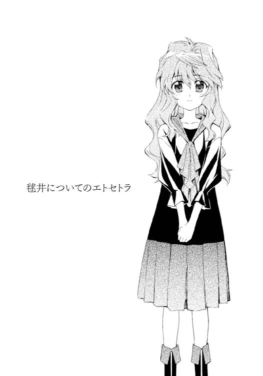

| 紫色のクオリア<紫色のクオリア> (電撃文庫) | |
| うえお 久光 | |
| (2015) | |
本書（電子版）に掲載されているコンテンツ（ソフトウェア／プログラム／データ／情報を含む）の著作権およびその他の権利は、すべて株式会社ＫＡＤＯＫＡＷＡおよび正当な権利を有する第三者に帰属しています。
法律の定めがある場合または権利者の明示的な承諾がある場合を除き、これらのコンテンツを複製・転載、改変・編集、翻案・翻訳、放送・出版、公衆送信（送信可能化を含む）・再配信、販売・頒布、貸与等に使用することはできません。


序．毬井ゆかりというヒト
毬井ゆかりは、ニンゲンがロボットに見える。
それは、どうしても変えることのできない彼女の絶対条件。
──そしてあたしは、そんな彼女の友だち。
１．毬井の前提
毬井ゆかりは、ニンゲンがロボットに見えるという。
正確にはヒトだけではなく、自分以外の『生きているモノ』、すべて。
彼女は自分をのぞいたあらゆる生物がロボットに見えるといい、そして、その話が真実かどうか、他人に確かめるすべはない。たとえどれだけありえない話に聞こえても──考えてみてほしい。『赤いりんご』を見て『赤い』と感じたことを、どうすれば他人に伝えられるだろう。『赤色』という『感じ方』を、『赤い』と口にする以外にどう説明できるだろう。どれだけ言葉を並べようとも、自分が感じた『赤色』を正しく表現することなど不可能で、人間がロボットに見える、というのも結局はそれと同じこと。実証のしようがない。
よって『毬井ゆかり』は『他人』に対し、ただこういうことしかできない。
証拠なんてないけれど、自分には、生きモノがロボットに見えているのだ、と。
自分が体験したモノを他人に伝えられない以上、『それ』は決して証明されない、信じるしかない大前提で、そして、単なる知り合いならともかくも、友だちでいるつもりなら、『それ』を受け入れなければならない。どれほど信じがたくとも、言葉のままに、無条件に。
でもきっと、友だちになるというのは、大なり小なりそういうところがあると思う──
「ねぇガクちゃん。......勘違いならいいんだけれど、これって、ガクちゃんのじゃない？」
「......あのね、ゆかり。何回だっていうけどね、あたしにネジは使われていません」
「わ。そうだった。ニンゲンってすごいよね」
「......そうね......」
そうでなければやっていけない。
２．毬井はかわいい
毬井ゆかりは、とてもかわいい。
全体的に小さくて（背伸びをしてもひたいが、平均的身長であるあたしのあごを超えない）、天然のウェーブがかかった髪を長く伸ばしているせいか、小動物のような印象を与える。ふわふわの髪は無造作かつやわらかく周りに広がっていて、光が当たるとまるで海の波のようにきらきら輝く。
魅力的なのは髪だけではない。
ゆかりは顔も整っている。
他人がロボットに見えるとゆかりはいうが、あたしにはむしろゆかりのほうこそ人形に見える。その辺で手に入るような既製品ではなく、オーダーメイドの西洋人形──なお、人形のようだというのは顔のパーツが整っているという意味で、表情が乏しいというわけでは決してなく、むしろ彼女はあたしの知るだれよりも感情表現が豊かで、わずかな時間でくるくる変わるその顔は見ていて飽きることがない。女性、というより子供のかわいさなのだけれど、まだ中学生なのだから幼さはむしろ当然で、『むすっとしている』のがデフォルトだといわれるほどに笑顔をつくるのが苦手なあたしは、正直ときどきうらやましく思う。
もっとも、特異な目を持つ彼女にとっても、隣の芝生は青いらしい。
「ガクちゃんはそういってくれるけれど、あたしはやっぱり、ガクちゃんみたいなほうがいいなぁ。ガクちゃんの顔、ほとんど動かないし、放射能とか平気そうだし」
「あんたでなければ、悪口だって思うところだ」
「わ。違うよ？ 誤解だよ？ ええとね、その、つまり、なんていうか──」
わ、わ、とつぶやきながら助けを求めて周囲を探す彼女の姿に、あたしは胸を締めつけられて、ため息が出そうになるのをこらえる。
十人に聞けば十人が十人友だちを呼んで百人単位でかわいいと叫んじゃうだろう非凡な容姿の彼女だが、本人は驚くほどそれを理解していない。
謙遜でも卑下でもなく、本当に、自分をかわいいと思っていないのだ。
彼女の目に映るものに、自身と比べられるものはないから。
ニンゲンがロボットに見えるという彼女が知る『正しい人間』の姿は、鏡に映した自分自身と絵に描かれたものだけで（絵に描かれた人間は、どれほど精密であってもロボットには見えないらしい。逆にピンボケ写真であっても、人間を写したものであればそれはロボットに見えるのだとか）、美醜の感覚というのは結局のところ環境と経験が生むものであり、学習して覚えるものであり、だからこそ、現代と平安時代では美人の基準がまったく異なるように、あたしたちとゆかりの基準も違う。あたしたちにはかわいく見える彼女の姿も、『ロボット』に囲まれ育った彼女にとってはコンプレックスのもとでしかなく、ふわふわの髪も白い肌も、自分一人が他人とは異なっていることを決定的に知らしめるだけ。
彼女は本当に、自分をかわいいと思えず、『他のみんな』と同じような『ロボット』の姿になりたいと考えている。
だからこそ。
「わ。ガクちゃん？」
あたしはチャンスを見つけては（たとえば二人きりのときとか）、彼女をぎゅっと抱きしめる。常に『むすっとしている』自分のキャラではないと思うし、正直死ぬほど恥ずかしいが、それでも口に出さない限り、態度で示さない限り、あたしの目に映っているものを彼女に伝えることはできないから。本当には伝えられないのだとしても、それでもわかってほしいから。
だからあたしは、人目がないとき限定だけど、機会を見つけては恥ずかしさをこらえ、告げる。
「あたしは、ゆかりをかわいいと思う。ゆかりにはどう見えていても、少なくともあたしには、ゆかりはとってもかわいい」
「わ。なんか恥ずかしい」
照れたようにうつむく彼女のほおはかすかに赤くなっていて、それはきっと、恥ずかしさだけではなくうれしさもあると思いたいけど、でもきっと、本当に伝えたいことは伝わっていない。わかってもらえない。
だからあたしは言葉だけではなく、ぎゅっと彼女を抱きしめ、願う。
伝わってくれ、あたしの気持ち。
あんたは、もっと自分に自信を持っていい。
ゆかりは本当に、だれにだって負けないくらいかわいいのに。どうすればそれを信じてくれるのか──
ちなみに彼女は、容姿についてはあきらめていて着るものなどにこだわらない──正確には、こだわるとロボットのコスプレのようなとんでもないセンスを発揮する──代わり、清潔さに気を使っている。
そのくせお風呂が苦手で、一人では入れず、家族の都合がつかないときはシャワーですましているらしい。
なんでも、人体が水に浮くのが信じられず、自分の防水加工に信用が置けず、どうしても浸水を考えてしまい、だから一人では怖いのだとか。
「みんなはどうして平気なのかな？ ガクちゃんだってとっても重そ......ええと、......わ、違うよ？ 怒った？ そうじゃなくて......」
別に怒ってはいないけれども（そんなのいまさら）、自分の失言にわ、わ、わ、と右往左往する彼女の姿が小動物のように愛らしくて、おかげでじっと見つめてしまう。無愛想が染みついているあたしの視線は彼女からすればにらまれているようなものなのだろうけど、──そんなつもりはないのだけれど、気がつくと、じぃっと見入ってしまっている。
「あのね、違うの、ガクちゃんが重そうっていうんじゃなくて、あたしにそう見えるだけで、わ、違う、そう見えるんじゃなくて、ええと──わぁ、どうしよう──」
あわてる彼女の姿は手ずからえさをあげたくなるくらいかわいくて、だから見るのをやめられず、そして思ってしまうのだった。
──こういうゆかりもかわいいし、......無理に伝えなくてもいいかな、と。
３．毬井の感触
毬井ゆかりを後ろからぎゅっと抱きしめると、シャンプーと石鹼の香りが立ち昇ってくる。
それは彼女のきれい好きを示すものであり、清潔を心がけるのはとてもいいことなのだけど、その根底には自分の容姿に自信を持てないからこそせめて清潔でありたい、というさびしい気持ちがあるのを知っているから、あたしはこみあげてくるものを抑えて、顔をうずめる、彼女の髪に、首筋に。『清潔』な香りの奥底にある、彼女自身のにおいを探して。本当の彼女を知りたくて。我に返ると照れてしまって女の子相手にナニやってんだと帰宅した後ベッドの中で自己嫌悪にじたばたすることも多いのだけど、それでもあたしはほとんど毎日彼女を抱きしめ、その耳にささやいている。ゆかりはとってもかわいいよ、と。
そうすると、彼女はしばらくもじもじしているが、やがてこちらに向き直り、ぎゅっと抱きしめ返してくる。
どうやら、褒められたら褒め返さなければならない、と律儀に思っているらしい。
最初のうちは、「かわいい」と告げると「ガクちゃんだって」と言葉で返してきていた。
が、あいにくと、常人と違い他人がロボットに見えるため、彼女の「かわいい」はどこかピントがずれている。彼女自身は褒め言葉だと考えていても、普通の女子が、「硬そう」とか「強そう」とか「周辺機器が多そう」なんていわれて喜べるだろうか？ 「ガクちゃんってスーパー系的デザインだよね！」などといわれても、褒めたい気持ちは感じられるがどういう意味だかわからない。「あ、そ、そうなの......ありがとお？」と無難にお茶を濁すしかなく、何回かそういう微妙な空気を体験して、ようやく、彼女は言葉を返さなくなり、代わりにハグしてくるようになった。
実をいえば、恥ずかしさは大きいけれど、そちらのほうがありがたかった。
言葉で返されても反応に困る、というのもあるのだが（スーパー系的デザイン、とはなんだろう？）、正直、互いに褒め合う、というのは馴れ合いのようで好きじゃない。妙な義務感から自分に自信を持てないでいる彼女を一日一回以上褒めることにしているが（もちろん、本当にかわいいと思っているからこそだが）、あたしは、そもそも他人を褒められるような立派な人間じゃない。どうしても、恥ずかしさを感じるというか、自分のキャラじゃない、と思ってしまう。それに──だいたい、あたしの容姿は悪い、とまではいかないが、せいぜい十人並みであり、そんなあたしがゆかりのようなかわいい子に褒められたって虚しさばかりが積もるだけ。そんな悲しい褒め合いなんかするよりは、気恥ずかしくても抱擁しあったほうがいい──そうじゃなかろうか？ あたし自身も言葉にするより気持ちが伝わる気がするし、──あくまで気分の問題なのだが。
ゆかりを全身で抱きしめると、とてもやわらかくて、あたたかくて、いい香りに包まれて、よくぞ女に生まれけり、とか思う。
どちらかが異性だったらこんなこと気軽にできないし、二人とも男だったら──やっぱりできない気がするし。だからあたしは同性の特権を生かし、彼女を思いきり抱きしめて、ふと、彼女も同じように感じてくれているのかと考える。彼女にとっての『あたし』は、はたしてやわらかくて温かいものなのだろうかと。
彼女には、あたしがロボット（スーパー系？）に見えているらしい。
それは、ただそう『見える』というだけでなく、そう『感じられる』ということでもあるだろう。
あたしにはゆかりが『女の子』に見え、だから『女の子』を抱きしめているように感じる。
けれど、ゆかりにはあたしが『ロボット』に見える。
つまり、ゆかりにとってあたしは、ゆかりを抱きしめているモノは、やわらかい『女の子』などではなく、ただただ硬くて冷たい『ロボット』だということになる──
一度、聞いたことがある。
彼女にあたしはどう見えるのか。具体的に。
ゆかりは悲しげに笑っただけで、答えてくれなかったけれど、答えられない理由については教えてくれた。小学生のころ、同じように聞かれて答えたことがある、と。
その友人とは、気がつくと疎遠になっていた。
また、図画の授業で友だちの絵を描いたことがあるという。ゆかりの絵は当然ながらロボットを描いたものになり、その絵を目にした友だちは、ゆかりを嫌い、いじめるようになった。だからゆかりはいつしか、自分のモノの見え方が他人と違うことを隠すようになった。
その絵には、いったいどのようなものが描かれていたのか。
自分とはまったくかけ離れたものか。
それとも逆に、ロボットの絵でありながら自分だとわかるものだったのか。そしてそれは、こんなにかわいいゆかりのことを本気で嫌いたくなるほどに気持ちの悪いものだったのか──
お願いだから、とゆかりはいった。
どう見えるかなんて聞かないで、と。
それはとっても切羽詰まった感じがあって、だからあたしは二度と聞かないとうなずいた──もっとも、基本うっかりさんであるゆかりなので、ときどき、スーパー系とか周辺機器とか、ぽつりぽつりともれてくるものはあるけれど。
いま、あたしはとても感触のいい、『女の子』を抱きしめている。
けれども、ゆかりが感じているのは、『硬く』て『強く』て『周辺機器が多そう』な、スーパー系の『ロボット』なのか──？
力をこめると彼女もぎゅっと返してくれて、やっぱり、とあたしは思う。
言葉よりも、こちらがいいと。
彼女がなにを抱きしめて、なにに抱きしめられているのか、あたしにはわからないけれど、それでもこうしていると、彼女がいやがっていないことがわかるから。たとえ彼女の目にあたしがどう見えていようとも、彼女は受け入れて、さらに求めてくれている──それが感じられるから。
だからやっぱり言葉より、抱きしめあうほうがいい。
きっとあたしの気持ちも、伝わっていると思いたい。
４．毬井紫の瞳
毬井ゆかりの虹彩は、きれいな紫色。
遠くからでははっきり判別できないが、顔を近づけるとわかる。澄んだ薄紫色の瞳で見つめられると、くっきりとした瞳孔に吸い込まれるような気分になって、次の瞬間はっと背筋を正される。
だからきっと、近しい人間に彼女の印象を問えば、無造作に広がり揺れる髪よりも彼女の瞳を挙げるだろう。
毬井ゆかりは紫の目を持っている、と。
まぶしい光が苦手らしく、ときどき彼女は色つき眼鏡やバイザーをつける。
それはそれで似合っているのだけれども、彼女の瞳が見えなくなると、やっぱり少し物足りない。
もしかしてその目のせいで、ゆかりには他人がロボットに見えるのか、などと、子供のようなことを考えたずねたことがある。
ううん、とゆかりは笑って答えた。
確かに珍しいかもしれないけれど、紫色の瞳というのは普通に存在するもので、自分以外にも紫色の目をしたヒトはいるけれど、自分のようにモノが見えたりはしていない、と。
そりゃそうだ。
そもそもの問題は、見え方ではなく感じ方にあるのだという。
めったになかったが、彼女も愚痴っぽい言葉を口にすることがあった。
「ときどき、考えるんだ。......神さまは、どうしてあたしの見え方に、あたし自身を入れてくれなかったんだろう。『ヒトの形』がロボットに見えるんだったら、あたしの身体だってロボットに見えていいのに、どうしてあたしの姿だけ、ロボットに見えないんだろう。もしかして、『あたしの形』って、ヒトとはどこか違うのかな？」
「ううん。そんなことないよ。ぜんぜん普通だって」
「うん。ありがと。だったらやっぱり、おかしいのは見え方じゃなくて、あたし自身の感じ方、なんだね」
彼女は、自分の紫色の瞳が映し出すものを、まったく恐れてはいない。
恐れるのは、その瞳に映らないもの。
彼女にとっての『普通』である、『ロボット』として見えない──自分自身の、姿。
気がつくと、あたしは聞いていた。
「ゆかりは、自分の目って、好き？」
口にした瞬間バカなことをと思ったけれど、出した言葉は引っこめられない。
だからせめてと、動揺を隠して続ける。
「あたしは好きだな。ゆかりの瞳。すっごくきれいなスミレ色。ゆかりにとっても似合っていて」
「わ。ありがと。......あたしもね、気に入っているよ？ 自分の目」
その言葉が本心か、それとも虚勢を張っているだけか、まだ付き合いの浅いあたしには、わからない。
ただ、願うしかない。
彼女が本当に、自分の目を好きであることを。
きっと彼女が生まれたとき、彼女の両親は、その目の色に惹きつけられて、名前にまでつけたのだろう。
紫、と。
だから彼女に、嫌わないでほしいと思う。『紫』を。
そんな思いをこっそりこめて、あたしは彼女のことを、毬井という名字ではなく名前で呼ぶ。ゆかり、と。まだちょっと照れくさかったりするけれど。
紫色の彼女の瞳が、好きだから。
５．毬井との出会い
「ところでガクちゃんは、自分の名前って好き？」
「好きなわけがないでしょう？ 時間を巻きもどせるのなら、生まれたときまでさかのぼって名づけをやり直させたいわ」
「わ。わ。あたしは好きなのに......」
あたしの名前は波濤マナブ。
学校の学、と書いて、マナブ。
同じくマナブという名の女性がいるなら申し訳ないが、あたしはこの名が好きではない。
だってこれ、学って、基本的には男につける名前っぽいから。
昔から続く縁起だかなんだか知らないが、祖母の一声でつけられたこの名前のおかげでどれだけ男と間違えられたか。からかわれたか。あたしの基本が『むすっとしている』ことも、あまり女の子らしくないのも、きっとこの名が呪いになっているせいに違いない。
ちなみに、マナブのマナ、と呼ばせるのもなんだか女の子過ぎていまさら恥ずかしいので、友人には、名字か、さもなくば音読みでガクと呼んでもらうようにしている。
「でもね、ガクちゃんの名前がマナブだから、あたしガクちゃんのこと、気になっていたんだよ？」
「......それって単に、あんたの目じゃ、あたしが女か男かわからなかったってだけでしょう？」
「わ。違うよ。女の子だって思っていたよ？ だってスカート穿いてたし......」
「ぜんぜんフォローになってない」
他人がロボットに見える彼女には、普通だったら簡単な（......最近はそうでもないかもしれない）男女の判別が難しいらしい。
なにしろロボットに性などないわけで、だから彼女は声とシルエットで六割、名前で二割、あとは服装に頼って見ているモノが男か女かを判断する（ズボンは男、スカートは女、というように）。そのため、学という名前に加えて男子のような低い声（周囲に声変わりを迎えていない男子が多いため、余計にわかりづらかったらしい）、シルエットも中性寄りで（確かに胸はないけれどまだ成長期なのだほっとけ）しかしスカートを穿いているあたしの性別を断定できず、気になっていたのだとか。
クラス名簿の確認だけでは満足できなかったのか、自分の目で確かめようとゆかりはあたしを陰からつけまわし、それに気づかなかったあたしはある日彼女と劇的な衝突をした（女の子、というのを気にしないなら、あれがあたしのファースト・キス、ということになる）。
漫画のような出会いに動転して泣き出した彼女からなんとか話を聞くうちに、あたしは彼女の紫色の瞳について知ることとなり、それからあたしはちょっとした心境の変化で髪を伸ばすようになったのだけれども（もともとはショートだったのをいまはおかっぱにしていて、そのため心無いやつはあたしのことをカッパとも呼ぶ）、それはともかく、確かにある意味、名前のおかげで出会えた、といえるかもしれない。
だったら。
「......ま、この名前とも、もう十四年付き合っているわけだし、いいかげん、慣れたけどね」
「でも、それだけじゃなくって、できればガクちゃんにも、好きになってほしいな。あたしはとっても好きだから。ガクちゃんの名前」
「............そりゃどうも」
「あのね？ よかったら、マナブちゃん、って呼びたいな」
「......それは、ちょっと、......まだ、......もう少し、......勘弁して......」
上目遣いにこちらを見つめる彼女を視界に入れないよう、むすっと唇を結んで、あたしは顔をそむける。赤く染まっているだろう、火照ったほおをどうにかしてごまかせないかとか思いつつ──
......マナブ、ちゃん？
......うん、まぁ、......確かに昔ほど、嫌いじゃないかも、しれない。
６．毬井と宿敵
そろそろくどいかもしれないが、毬井ゆかりはニンゲンがロボットに、見える。
あたしは偶然知ることができたが、基本的には、ゆかりはそれを隠している。周囲の人間に変なやつだと思われないよう、トラブルを引き起こさないよう、過去に学んだ経験から。
とはいえ、心構えだけで物事が成せるなら世の中苦労はないわけで、その特異な視点に引っ張られどうしても振舞いが奇矯になってしまう彼女は、学校内はおろか町内においてさえ、変人として有名だった。
それは、嫌われているということではない。
むしろ彼女は好かれている。
どこか浮世離れした彼女のキャラはいわゆる『不思議ちゃん』として好意的に受け止められていて、あたしたちのクラスにおいてはマスコット的存在ですらある。
驚くには当たらない。
彼女はとてもかわいくて、その突飛な言動はむしろ人畜無害な小動物っぽさを際立たせるものだから。
世の中外見がすべてだなどというつもりはないが、視覚情報、というものが判断基準として無視できないものであるのは間違いなく、だからこそ他人がロボットに見えるゆかりはいろいろ苦労しているわけだが、それはともかく、かわいいものを保護したいと思うのは生物が遺伝子を伝えるための本能であり、いわば自然の摂理といえる。だから彼女が好かれることはむしろ当たり前だし、あたしがついつい気にかけてしまうのもとくに異常なことではない。
しかし世の中には、どうしても理の当然に納得できないおかしなやつがいるもので、ゆかりのことを目の敵にする人間も確かに存在していた。
困らせるのを楽しむのではなく、あんたのことが気に食わない、と真っ向から敵意をぶつけてくる人間。
その筆頭が、天条七美という女子だった。
天条は、ことあるごとにゆかりにつっかかってきた。
邂逅を待つことなく、クラスが違うにもかかわらずわざわざ休み時間に押しかけてくることもあった。
直接的な暴力に訴えてくることこそなかったが、道を通せんぼしたり、ノートを取り上げたり、子供のような言葉で挑発してきたり──
「あら。久しぶりじゃない。まりぃ」天条は、あたしとは逆にゆかりのことを名字で呼んだ。まるでそちらが名前であるかのような発音で。「......ひたいに隠してあるという、『第三の目』の調子はどう？」
「だ、第三の目なんて隠してないよ！」
「あれ？ そうだっけ？ ......ああ、持っていたのは前世のことで、いまはそれなしで日夜悪鬼と戦っているんだっけ。ほら、腕に刻んだ退魔の紋章がじんじんうずいてきたんじゃない？」
「......あたしの手、退魔の紋章なんて刻んでいないもん」
認めよう、彼女のゆかりへのつっかかり方はとても幼いものであり、いじめというより子供のケンカのようであり、だからこそ、周囲の人間はあたしも含め、止めるのもバカらしい気分になって放置していた。
なによりも、ゆかりが天条と仲良くしたがっていたために、下手にゆかりを助けようとすると逆にゆかりが天条をかばう、という妙な三角状態ができあがってバカを見る。
だから基本的に、天条がつっかかってくると周囲は静観するしかない。
ただ、一度だけ、ゆかりが天条のからかいに、むきになっていいかえしたことがある。
それは、天条がこういったときのことだった。
「いいかげん、あなた自分の故郷に帰ったら？」
「故郷って？」
「まりぃ星とかあるんでしょ？ あなたの正体は、まりぃ星から来たまりぃ星人、なんでしょう？ だったらいつまでも地球にいないで帰ったほうがいいんじゃない？ それとも侵略でもするつもり──」
「あたしは地球人だもん！」
強い口調で返された言葉に、喧騒にあふれていた昼休みの教室は、たちまち静まり返った。
目立つのが苦手で、いつもなら注目を集めると萎縮して縮こまるゆかりだったが、そのときだけは違った。
周囲の目も知らぬげに、ゆかりは激しく続けた。
「あ、あたしは、まりぃ星人とかじゃないもん！ ちゃんと地球で生まれた、地球人で、日本人で──」
「......あたしは、別に」
「──もういいかげんにしろ。よそのクラスまでやってきて、騒ぎを起こすな」
口を挟んだあたしを、すごい目つきでにらみながらも、それ以上口を開くことはなく、天条はわざとらしい足音を立て、教室を出て行った。
──それを思わず追いかけたのは、胸の中に渦巻く感情が抑えきれなかったから。
日ごろぶすっとしていて感情をうまく発露できないあたしは、そのせいか、激情にかられると自分を制御できなくなるところがある。たとえば今回のような、めったに見ないゆかりの表情を見せられたときとか。
天条は、あたしが追ってくるのに気づいていたのか、人気のない階段の下で待っていた。
あたしが問いかけるよりも先に、天条は、いった。
「......あなた、波濤っていったっけ？ 知っているの？ あいつの『目』のこと」
そういう質問が出るということは、天条も知っているわけか。
なんとなく、そうだろうとは思っていた。天条のからかい方には、それを揶揄しているようなところがあったから。やはり天条も知っていたのだ。ゆかりには、自分以外の人間がロボットに見えるということを。だから自分と同じ姿の『人間』を見たことがないということを。
だったら想像できるはずだ。それがいったいどれくらい、孤独な風景なのか。
天条に向かっていいかえした、ゆかりのせりふに、人間、という言葉はなかった。
地球人、日本人、とは主張できても、人間、とはいわなかった。
きっと、いえなかったのだ。心のなにかがブレーキをかけて。
自分と『同じ姿』を、見つけられないゆかりだからこそ──
またも怒りがこみ上げてきて、かえって頭が冷えてきて、あたしは天条の問いにゆっくりうなずき、答えた。
「ええ。知っている。ゆかりには他人がどう見えているか......あんたこそ、知っているんだ。なのによくもいえたわね？ あんなこと──」
天条が浮かべたいやな笑顔に、あたしは言葉をとめた。
天条はなにかを測るように、あたしを見つめながら、いった。
「そうよ？ あたしも知っているわよ？ あいつのことは。たぶん、きっと、あなたより──ていうか、あなたのほうこそ本当には、わかっていない。あいつのことを」
「どういう意味？」
「知りたいの？ あいつの友だちを続けたいのなら、知らないほうがいいと思うけど？」
「なにを──」
天条が口を開くより先に、ガクちゃん！ と呼ぶ声が、廊下から聞こえてきた。
あたしがいないのに気がついたのだろう、ゆかりが、追いかけてきたのだ。
ちなみにあたしの家はなぎなた道場を開いていて、あたし自身もそれなりにやる（そのわりに精神修養ができていなくて、口よりも手が早かったりするのだが）。
だからゆかりは、あたしが天条に暴力を振るうとでも思ったのかもしれない。
息せき切った、あわてたようなゆかりの姿に、天条は、激しく顔をゆがめた。
その瞬間まであたしは、じつは天条は、口でいうほどゆかりを嫌っているわけではないのでは、と思っていた。
素直になれない、子供のようなものなのでは、と。
けれどもいま、ゆかりを見る天条の顔に浮かんでいるものは、沈痛で、後悔しているようで、でもどこか、青色の炎のように冷めていて、いまにも砕け散りそうなほどに張り詰めているその感情は、きっと、いや、まぎれもなく、憎しみと呼ばれるようなもので──
少なくともいまこの瞬間、彼女は本気でゆかりのことを、憎悪しているようだった。
「......あ、あの、テンちゃん......」
ゆかりに声をかけられて、天条は、しばらく表現しがたい目つきをしていたが、やがて、かすかに頭を動かした。
もしかして頭を下げている？ さっきのことを謝っている？ と思わせたのは本当にわずかな時間のことで、すぐに顔を上げると、天条はゆかりをにらみつけ、いった。
「......あたしは、あなたを、許す気も、認める気も、ないから」
それだけ吐き捨て、きびすを返し、歩き出す。
「ちょっと、天条！」
怒りが収まっていないのもあったが、それ以上に先ほどの言葉の真意を問いただしたくて、あたしは天条を呼びとめようとした。
が、ゆかりにとめられた。
「やめて、ガクちゃん。......いいの。あのね、あたし、テンちゃんに嫌われても、しかたないことをしちゃったから、──だから、いいの。お願い、怒らないで──」
天条は一瞬振り向きかけたが、そのまま立ち去っていった。
それを見送って、あたしはゆかりに確認する。
「あいつ、やっぱり、ゆかりの昔からの知り合いなわけね？ ゆかりの、見え方のことも知っているのね？」
「うん。あたしの、いちばんの」
「でもいまはもう、友だちじゃない」
「わ、そんなことないよ！ あたしはいまでもお友だちだって思っているし、......できれば、ガクちゃんにも、仲良くしてほしい──」
「あたしは無理。あんなやつ、絶対お断り」
「......そんなこと、いわないでよう......」
寂しそうにあたしを見上げるゆかりの頭を撫でながら、思う。
あたしがゆかりのなにを知らないって？
まぁ、確かに短い付き合い、まだまだ知らないことのほうが多いというのは認めるけれど、でも、いちばん肝心なことはわかっている。
普通と違うところはあっても、ゆかりはあたしと同じ人間で、大切な友だち──
──あんたとゆかりの間になにがあったか知らないが、あんな言葉に、負けたりはしない。
その日以降も、天条はゆかりへのからかいの矛を収めたりはしなかった。
が、対象があたしにまで及ぶようになった。
というか、あたし自身が積極的に、参加するようになった。
ときにはゆかり抜きで直接対決することも──というか最近はそちらのほうが多くなってしまったけれど──
ゆかりの秘密を言いふらさない態度は認めてやるけれど、それ以外では、相容れない。
それがあたしと、天条七美の関係である。
７．毬井の才能
重ね重ね申しわけないとは思うが、毬井ゆかりは他人がロボットに見える。
そのせいかどうかは知らないが、彼女はロボットが大好きで、趣味はプラモデルを組み立てることだった。
ロボットならまずえり好みなく、というか戦車だろうがお城だろうが、プラモデルならなんでもいいらしい。というかプラスチックのモデルでなくてもいいらしい。
ゆかりの家はちょっとした庭付き一軒家なのだが、ゆかりはその庭にこぢんまりとした工房と倉庫を持っていて、工房にはなにに使うのかよくわからない設備や工具類、倉庫にはさまざまなプラモデルのロボットが所狭しと並べられ、倉庫に入りきらないものは屋根に飾るガーゴイルや庭に置かれるドワーフ人形のように、いろいろなところに飾られていた。
厳密には、ロボットモデルの完成品より──もちろんロボットそのものも好きらしいが──組み立てる過程が好きらしい。
ゆかりには小学生の弟と妹（名を葵に茜という、二人ともすごいお姉さんっ子）がいるのだが、その二人を窓口にして、時間や根気や技量が足りずプラモを完成させられない小学生の代わりに組み立てを請け負っていた。それがゆかりの、休日のお気に入りの過ごし方で、そのため毬井ゆかりの名前は小学校でも有名で、とくに男の子に一目置かれていた。
もっとも、たとえプラモデルに興味がない女子であろうとも、彼女の作業を見たら瞠目せずにはいられないだろう。
あたしも、はじめて見たときは驚かされた。
ちょうど夏休みに入ったばかりのころで、朝にあたしがたずねたとき、工房の前には五十を超えるプラモの箱が積み上げられていた。最近の子供はなんて不精なのだろう、ゆかりも、いくら休みだからとはいえ引き受けすぎではないのか？ と思ったが、そびえ立つ大きなタワー（プラモデルの箱はけっこうかさばる）を前にして、ゆかりはまったくひるまなかった。むしろ舌なめずりをせんばかりの勢いで、箱の山へと向かっていった。
「なんか、手伝えることある？」
そうたずねたあたしに、彼女は笑ってうなずいた。
「わ。本当？ じゃあ、お願いするね？ そこにニッパーあるから、ランナーからパーツを切り離してくれる？」
ランナーというのはパーツがくっついているプラスチックの枠のことで、プラモデルというものは、説明書の通りにランナーからパーツを切り離して順序良く組み立てていくものらしい。
しかし彼女は説明書など気にすることなく、嬉々として箱からランナーを取り出し、パチパチとパーツを切りはじめた。
箱ごとに、ではなく、まずすべての箱からランナーを取り出したのち、全部まとめて、一気に。
パーツが違う箱のものと混ざってしまうのも気にせずに、ゆかりは次から次へと手当たり次第にランナーを取ってはニッパーを入れ、切り離されたパーツは分類されることなく、そのまま、乱雑に、ビニールシートにばら撒かれていく。
「あ。ガクちゃん、小さな部品もあるから、切り取り忘れに注意してね？」
「い、や、そのまえに、こんなごっちゃにしちゃって、いいの？ どれがどれの部品だか、もうわからないような──」
「平気平気。プラモのことならまかせて！」
その言葉を証明するかのように、彼女はすべてのランナーからパーツを切り取り終えると、箱も説明書もまったく見ることなく、そのまま組み立てを開始した。
無造作に置かれたパーツの山から一つを取り出し、首をかしげる。
脇に置き、違うパーツを手に取って、また脇に置き──かと思ったら脇にのけていたものに組み合わせてみたり──その姿は、プラモを組み立てているというよりジクソーパズルに挑戦しているようだった。手当たり次第にパーツを選んでは組み合わせ、当たるをさいわい組み立てていく──どうみても行き当たりばったりな作業であるにもかかわらず、彼女の手はすばやく動いて止まらなかった。悩む様子を見せていたのは最初のうちだけで、気がつくと、彼女の指は流れるように動いてロボットを組み上げていた。ばらばらに置かれているはずなのに、彼女はパーツの山のどこにどんな部品があってどういう風に組み合わさるかを把握しているようだった。
はじめて一〇分かからぬうちに一体目が完成し、七分を待たず二体目が並ぶ。
その速さはしかし、作業の粗雑さ、乱暴さを示すものではなく、時おりやすりやら接着剤やら粘土のようなものを使って、彼女はすばやくかつ丁寧に、ロボットを組み立てていった。
あたしは啞然として、聞いた。
「このロボットとか、たくさん種類あるみたいだけど、──全部知ってるの？ 前にもつくったことあるの？」
んー、と彼女は手を休めることなく、脇に寄せられた箱を見ながら答える。
「何体かはつくったことあるけど、ほとんどは、はじめてかな。やっぱり新商品が多いね」
「つくったことないのに、はじめてなのに、わかるの？ どれがどれのパーツだか、説明書も見ないで？」
「まぁね。だいたいはわかるよ。箱を見れば完成形が載っているし、それに、......あのね、ただ見ただけだとロボットって、かっこいいだけかもしれないけれど、どのロボットも本当は、一体一体きちんとテーマに沿ってデザインされているんだよ？ 『形』には、ちゃんと理由があるの。このロボットは飛ぶからこういう形だ──とか、この関節は速度重視だからこうなるんだ──とか、この装甲はライオンをイメージしているんだ──とかね。そういうテーマがわかれば、パーツの意味も、組み合わせも自然にわかるから」
「......いや、でも、すごい......」
いとも簡単にいうが、だれにでもできることではないだろう。これが名人芸であるのは間違いない。
あたしから思わずもれ出た感嘆のため息に応え、恥ずかしそうに微笑むと、手もとに新たなロボットを誕生させながら、ゆかりは首を振った。
「正直にいえば、外れることも多いんだけどね？ ときどき、知っている人に答え合わせをしてもらうんだけど、鳥をイメージしているのかなと思ったら天使だったり、デザインにまったく理由がなかったり──だから結局は、慣れなんだけど」
......確かに、慣れ、というのなら、あらゆる生物がロボットに見える彼女に優る者などいまい。
これこそまさに、彼女の特異な視点が生み出した、他人に誇れる才能。
なぜだか気分が高揚してきて、あたしはゆかりの頭をがしがし撫でた。
「とにかく、すごい！ これってすごいよ！ 将来はこれで食べていけるんじゃない？」
「わ。食べていけるかな。あたしね、モデラーになってみたいって思うんだ」
「......モデ、ラー？ モデルかなにか？」
「モデラーっていうのはね、こういうプラモデルの原型をつくるヒトのこと」
「──なれるよ！ モデラーでもモデルでも、ゆかりだったらきっとなれる！ こんなにつくるのうまいんだから！」
彼女の紫色の目は、きっとその夢を成就するための助けになってくれるだろう。
そう考えるととてもうれしくなってきて、弾む気持ちを抑えきれずに彼女の頭を撫でるけど、なぜだかゆかりは手を止めて、どこか悲しげな顔で、脇にまとめられたプラモデルの箱を見ていた。
しばらく凝視したのち、いった。
「でもたぶん、そのためには、ロボットアニメとかにも慣れないといけないよね」
「......そりゃまぁ、だろうね。よく知らないけど。......ていうかゆかり、ロボット好きなのにロボットアニメとか、見ないの？」
「............そういうのって、残酷だから」
「へぇ、そうなんだ？ でもああいうのって、子供が見るもんじゃないの？」
「でも残酷なの。......だからね、あたし、そういうアニメ見られなくて、プラモデルだけ買うんだ。そしてね、これってどんなロボットなんだろう、どんな活躍をしているんだろう、って想像しながら組み立てて、あとでそのアニメを見ている人に、想像と合っているかどうか、教えてもらうの」
「......ふうん」
ゆかりが見つめる箱には、まるで翼を広げたような、雄々しいロボットが載っていた。
片手に光る棒──刀？ を持って、びしりとポーズを決めていて。
その周囲には、壊されたロボットたち。
主人公ロボットの敵だったのか、派手に破壊されている、かつてロボットだったモノの残骸。
あくまで絵であり、モノであり、赤い血を流しているわけではないけれど──
──やがて、ゆかりは組み立てを再開した。
パーツを手にし、ひとつひとつ、すばやくけれども丁寧に、ときには布で磨いたりして組み上げていく。その指先はやさしくて、彼女が本当に、ロボットを好きなことが、つくりあげるのが大好きなことが、伝わってくる。
あたしは思わず、つぶやいていた。
「──あたしも、一体ぐらい、つくってもらおうかな？」
たちまちゆかりが食いついてきた。
「本当？ だったら今度一緒に買いにいこ！ あのね、ガクちゃんに似合うだろうな！ っていうのが出てるの！ といってもどんなロボットなのかはよく知らないんだけど、でもとっても、かっこよくて──」
──でも結局、ゆかりには、どんなロボットでもいいんだろうなと、心の中につぶやいてみる。
彼女にとってロボットは、どんなものでも、すべからく愛するべきもので。
そんな彼女がつくってくれたのだったら、それだけで、あたしは満足できるだろう。
８．毬井・ザ・科学者？ 編
──思い立ったが吉日、ということで、午前中のうちに依頼されたプラモデルの組み立てをすべてすますと（お金を取ればいいのにな、とか思ってしまうあたしは汚れているのか）、ゆかりはあたしを引っ張って模型店へと連れていき、彼女推薦のプラモデルを買わせた。
ネジとか使うタイプで、意外と大きくしかも高かったのだけれども、それはともかく。
そのままあたしの家へと向かい、部屋で組み立てようとしたところで、ゆかりはさらに、別の才能を発揮した。
じつはその日、あたしの部屋のエアコンは故障していたのだ。
修理を呼んだが夜まで来られない、ということで、だからあたしは涼ませてもらおうと朝からゆかりの家に押しかけていたのだが（結局は庭で汗をかいたが）、ゆかりは大喜びで、プラモ用の道具だけでエアコンを修理してみせた。故障の原因は単なるフィルター詰まりだったらしいが、彼女は「触るな危険」のシールを平然と無視してエアコンをバラバラに分解し、細々としたパーツにしたのち、まるでプラモデルをつくるかのように、あっという間に組み立てなおし、あたしを驚かせた。
「あ、あっさりやっちゃったけど、こういうのって、なんか資格とかいるんじゃないの？」
「うん。だからよい子はまねしちゃいけなくて、内緒にしなきゃいけないんだけど、家電製品くらいなら、あたしぜんぜんだいじょうぶだよ！ 部品さえあれば冷蔵庫でも、電子レンジでも、パソコンだって組めるんだから！ なにかあったらいつでもいってね！」
──これもやはり、彼女の特殊な目によるものなのか、というか、手に職があるって強いなぁ、というか、まだ中学生なのにこれだけのことができるなら、将来はロボットだってつくれるんじゃなかろうか？ というか──
「......もシカして、ゆカりサンっテ、スッごく頭ヨイのでショウか？」
「わ。ガクちゃんなんでカタコト敬語なの？」
......おバカな子だと思っていたので、正直少々、ショックだった。
９．毬井の目に見えるモノ
「あのね、委員長。明日、あたしの友だちの、陸上の競技会があるんだけど、お天気、晴れるかな？」
「ほっほっほ。毬井ちゃんは友だち思いのよい子じゃのう。..................うむ。そうさな。天も微笑んでいるようじゃ、わしの見立てによると、明日は朝から晴れるだろうて」
「わ。ほんと？ ありがと！ でもなんで変なしゃべりかたなの？」
「......素でつっこまないでほしい......」
我がクラスの学級委員長の天気予報は、ほとんど外れたことがない。
だからうちのクラスでは、天気を知りたいときには委員長にお伺いを立てる。たとえニュースが晴れだといっても委員長が雨だというなら傘を持ち、そしてたいていの場合、委員長が勝利する。委員長には間違いなく天候を読む才能があって、だからあたしたちはクラス全員で委員長に漁師になることを勧めているのだが、そんなみんなの期待を歯牙にもかけず、委員長は天気予報士を目指している。
だが委員長は、はたして気づいているだろうか？
その才能を見いだしたのは、毬井ゆかりだということを。
委員長にはじめて天気を聞いたのは、ゆかりだった。
ゆかりが聞いて、委員長が答え、それが的中し──そんなやり取りが何度も繰り返されていくうちに、みんなが頼るようになり、委員長の予報の確かさが広く知られるようになった。
つまり、ゆかりが見抜いたのだ。委員長の天気に対する才能を。
どうして委員長に天気を聞いたのかたずねたら、ゆかりは笑って教えてくれた。
「あのね、委員長、あたしの目だと、すっごいセンサー装備しているのが見えるの。あのセンサーなら、天候の予測とかも簡単にできるかな、って思って」
......もちろんあたしの目からでは、センサーなんて見当たらない。
◆
翌日は、委員長の託宣どおり、朝から見事な秋晴れだった。
ゆかりは喜び勇んで、陸上部にいるという小学校時代からの友人の応援に出かけ、あたしもそれに付き合った。
もっとも、見た感じ、応援する必要などなさそうだったが。
ゆかりの友人だという陸上部員の実力は、素人が見てもわかるぐらいに抜きん出ていて、観客の反応からも、彼女が全国を目指せる器として期待されていることがうかがい知れた。
そんなすごい人と友だちなんてすごいね、というと、ゆかりは胸を張って答えた。
「あのね、ショウちゃん（陸上部員の呼び名）に陸上勧めたの、あたしなんだよ？ ショウちゃんが部活選びに迷っていたから、あたしがアドバイスしたの。ショウちゃんは陸上部に向いているって」
「......それも、その、やっぱり？」
うん、とゆかりはうなずいて、あたしの耳もとに口を近づける。
「......これは内緒だけどね、ショウちゃんの足、すっごいローラーとバーニアが装備されているんだ」
ローラーはともかくバーニア、というのがなにかはわからないが、きっと、走るのに便利なものなのだろう。
ゆかりの言葉を証明するかのように、力強く地を蹴り風を切り、ずば抜けた走りでたちまち周囲を引き離していく『ショウちゃん』。
もちろん、委員長についているとかいうセンサーと同じように、ニンゲンがロボットに見えるゆかりだからこそそういうふうに見えるだけで、実際にはローラーもバーニアもない普通の足なのだが、そういうものを使っている、といわれたら思わず信じてしまいそうで、そういってみようとしたとき、はぁ、とため息をついて、ゆかりがぽつりとつぶやいた。
「......ショウちゃん、ちゃんとローラーとバーニア使ったら、もっと速くなるのになぁ......」
──なぜでしょう、背筋が寒くなりました。
◆
学校での昼休み、食後の雑談の戯れに、ゆかりに好みの男性のタイプを聞いてみた。
ゆかりは顔を朱に染めうつむいて、熱くなっているのを自覚したのかほおを冷やすように自分の両手をあてがって、わ、わ、わ、と唱えたのち、観念して、いった。
「......加則くん」
あたしは腰を抜かした。
同時に背後からもすさまじい音が響いて、見ると、天条が机を抱いて倒れていた。
クラスが違うにもかかわらずなぜかそこにいた天条は、あたしたちの視線に気づいて、すぐ立ち上がり、よいしょっと机をもどし、ぱんぱんと制服のほこりを払うと、ふん、と首を振ってそのまま教室を出ていったのだがそれはともかく。
加則、というのは、うちのクラスに実在している男子、加則智典のことだ。
つまり現実に存在し、身近にいるということだ。
正直、これは予想外だった。
ニンゲンがロボットに見える彼女のことだから、女の子がアイドルにあこがれるような感覚で、ロボットアニメからかっこいい機体を引っ張ってくると思っていたのだ。
にもかかわらず、「加則くん」、だと？
あんな、ぬぼーっとしていて目立たないやつが？
性格も──実はよく知らなくて、印象も、あいつってすごい糸目だなぁというぐらいしかないのだけれど、つまりそれほど特徴がないということで、個性がないということで、そんなわけのわからないやつがゆかりの好み？ 加則のやつ、いったいいつ、どんな手で、子供のように純真なゆかりをたぶらかしたのか？ それともゆかりの紫の目には、あいつがかっこよく見えているのか？
人間は不可解すぎる事態に遭遇すると身体に力が入らなくなるらしく、あたしは椅子に座り込んだまま立てず、机にぐったりつっ伏して、たずねた。
「......か、加則が？ あの加則？ ......あんな特徴のないやつの、......どこが？」
ゆかりはしばらく照れていたが、いった。
「......あのね、『ドリルは漢のロマン』って言葉があるんだけど、......それって、漢のヒトだけじゃなくってね、あたしにとってもロマンなの」
「......は？」
「加則くん、デザインはリアル系なのに、すごいドリルを持っているんだ。大きくて、ぎらぎらしていて、見ているだけで震えちゃうような、いまは止まっているけれど、いざ回転しだしたらもうどうにもできないぞ、って感じの──」
あたしは、こちらに背を向け昼食を取っている加則をにらみつけてみたが、当然ながら、ドリルなんてものは見当たらない。
「......よくわからないけど、......それって、あいつは危ないやつってことじゃない？ ドリルって、凶器でしょ？」
「わ。それ誤解。ドリルはもともと切削工具なんだよ？ それに、......ロマンだし」
......なんですか。ロマンって。
ほんのりとほおを赤らめたまま、ゆかりは続ける。
「ほかにもね、ドリル持っている人いるんだけれど、やっぱり、加則くんのがいちばんかな。生徒会長さんのもなかなか惜しいけど──」
「生徒会長？ あの人も持ってるの？ 会長女性なのに？ オトコのロマンを？」
「うん。会長さんのは加則くんと逆で、いつも回転しているんだけど、すごく回転が速いから、まるで止まっているみたいなの。氷の刃、みたいなかっこよさがあって、だからあたし、会長さんの前に出ると、いつも緊張しちゃうな」
「............ちなみに、あたしは？ なんかそういうのって、ある？」
自分のことを聞くのは禁止していたのだが、気がつくと聞いてしまっていて、話の流れのせいか、ゆかりもあっさり答えた。
「ガクちゃんはドリルは持ってないけれど、汎用性で最強かな」
「は、はんよう？」
「うん。ガクちゃんはすごい換装システムを持っていて、装備を換えれば陸海空、真空中でもマグマの中でも、あらゆる状況に対応できる。近接遠距離問わずに活躍できる。これってすごいことなんだよ？ これだけの状況適応システムは、......わ！ だめだよ！ こんなこと聞いちゃ！」
「ああ、ごめん」
換装システム、汎用性──聞きなれない単語であったにもかかわらず、彼女の言葉は驚くほどに、すとんと胸に落ちていた。
なるほど、確かにあたしがロボットだったらそういうものになるかもしれないと、理屈抜きで受け入れられた。
なんだか自分の知らない自分を、ずばりと当てられた気がする。
──これが彼女の『見え方』なのか。
「............ちなみに換装っていうのは、ドリルもつけられるってこと？」
「わ。ガクちゃんもロマンを感じた？」
「......いや、べつに、聞いてみただけ......」
──余談だが、なぜだかこの日から、天条の攻撃がゆかりとあたしだけでなく、加則にまで及ぶようになった。
理不尽極まりない話だが、......まぁ、立派なドリルを持っているという加則なら、あたしとゆかりが助けなくとも自力で切り抜けられるだろう。
◆
──それは、通称『東京バラバラ殺人』と呼ばれて世間を騒がせていた事件の容疑者が捕まった日のことだった。
その日は、ゆかりの家族が小学校の親子キャンプでいないということで、あたしはゆかりの家に、泊まりがけで遊びにいっていた。
泊まりっこ自体はよくやるのだが、あたしの家は道場がうるさく、ゆかりの家はお姉さん離れのできていない弟と妹がやかましい。
その弟妹がいないということで、二人だけでゆっくりできる、と楽しみにしていたのだが、ゆかりは昼にあたしがたずねたときからずっと、落ち着きがなかった。
『東京バラバラ殺人』容疑者逮捕の知らせは朝刊にも載り、昼のニュースでもやっていた。
そして、ゆかりは食い入るように、そのニュースを見ていた。
話しかけても空返事。
ニュースが終わるとチャンネルを変え、他の局が事件の報道をしていないか探す。
テレビではもうやっていないのを確認すると、今度は新聞を広げ、逮捕された容疑者の写真を穴が開くほど見つめている。
そのどこか切羽詰まった様子に、あたしは問うことをひかえ、ただただ見守っていた。
やがて。
「......ちょっと、ごめん」
ゆかりはあたしに謝ると、意を決した表情で、どこかに電話をかけはじめた。
子機を持ち庭に下りたのは、あたしに聞かせたくなかったからか。
あたしは縁側にこてっと横たわり、目の前に置かれたプラモデルのロボットをながめながら、なんとはなしに、ゆかりが話しているのを耳にする。
「もしもし......はい、毬井です。......その、......はい、新聞で、見たんですけど、──あたしの目には、あの人は犯人に見えません」
ぎょっとして身体を起こし、ゆかりを見る。
ゆかりはすでに電話を切っていて、あたしの視線に気づき、力のない笑みを浮かべ、いった。
「......ごめん。ガクちゃん。あのね、夜に、人が来ることになっちゃった」
実際には夜を待たず、夕方に、その客は、おとずれた。
見事にスーツを着こなした中年の男性と、それよりも少し若い、ちょっと頼りない感じのする青年の二人組。
紹介される前から、なんとなく、二人が警察関係者であることがわかった。
庭から縁側へと回ってきた二人の男は、あたしがいることに驚いたようで、躊躇した表情を見せた。ブリーフケースを持った青年が、強面でなにかいいかけたが、中年のほうがそれをとめた。
きっと、気がついたのだろう──意識してか無意識か、あたしに隠れるようにしていたゆかりが指先だけで、あたしのひじをつかんでいたのを。
中年がいった。
「いいのか？」
はっとしたゆかりがあたしから離れ、答える前に、あたしはうなずき、さらにゆかりと腕を組み、離れるつもりのないことを示す。
わずかに黙考したのち、中年の男性もまた、うなずいた。
縁側の前に立ち、しかし家には上がってこようとせず、話し出す。
「......では、手早くすませよう。毬井さん。すまないが、......頼む」
中年の視線を受けて、青年がブリーフケースから封筒を取り出し、ゆかりに差し出す。
あたしに向かって、いいながら。
「......きみは、見ないほうがいい」
封筒から現れたのは、たくさんの、赤色が際立っている写真だった。
──血の赤と、肉の断面の赤。
──濃く、薄く、変色した肌を彩る様々な赤──
ちらっと見ただけで、わかった。
──殺人現場の、写真。
きっと、あの、『東京バラバラ殺人』の、映画とかの偽物ではない、本物の──
急いで顔をそらしたとたん、目の前が暗くなり、自分が貧血を起こしかけているのに気づく。
暗闇に完全に落ちるのをなんとか踏みとどまらせたのは、組んだ腕から伝わってくる、ゆかりの体温だった。
ゆかりは、組むというよりしがみつくようにあたしの腕を取り、手に持った写真を見ていた。
身体は震えていたけれど、紫色の目をそらそうとはしなかった。
だからあたしも、写真を直視できないぶん、せめてゆかりの支えになろうと決めて、踏ん張る。
──どれくらいの時間、そうしていただろう。
「......もう、いいです」
ようやくゆかりがそういって、写真がしまわれて。
「では、こちらを」
青年がそういって、今度はバインダーが渡される。
またも恐ろしいものかと一瞬身構えるが、それは、複数の人物の写真を綴じたスクラップブックだった。
調書、と呼ばれるものだろうか、胸から上の人物写真が貼られた履歴書のようなものが、五人分。
中年の女性や初老の男性、セーラー服の女の子、と、写真の人物に一貫性はない。
コピーなのだろうか、写真以外の部分はマジックで黒く塗りつぶされ、名前も住所もわからないようになっている。
それぞれの調書に複数枚、角度の異なる写真が添付されており、それをゆかりは何回も、見直していた。
やがて、ゆかりは、一枚の写真を指さした。
「......このひと、です」
青年が、驚きの声を上げる。
「......こ、この子が？」
ゆかりが示したのは、どう見ても未成年、せいぜい高校生としか思えない、セーラー服を着た女の子の写真だった。
中年の男性は微動だにしなかったが、青年は見るからに動揺していて、しかしそれにまったくかまわず、ゆかりは告げた。
「......はい。たぶん、このひと、です。こんな『壊し方』ができそうなのは、このなかで、このひと、だけ、です」
いいきってから、あ、とあわてて首を振る。
「あ、その、もちろん、あたしにはそう見えるというだけで、実際にそうかどうかは──」
「わかっているよ。きみの意見はあくまで参考に過ぎない。結果がどうだろうと、きみが気にする必要はない。......すまないな、またこんなことを、子供のきみに──」
「......いえ、......今回は、こちらから電話しましたから──」
◆
結局、二人の男は庭から上がらず、そのまま場を辞した。
ちょうどそのとき、親子キャンプに行っていたゆかりの両親から電話がかかってきたために、あたしだけで彼らを見送ることになった。
いつの間にか日は落ちて、外は夜。
玄関の前に待たせていた車に乗り込む間際、中年の男性はあたしに向き直り、ぽつりと、いった。
「......きみは、彼女の、......ことを？」
「はい。知ってます」
そうか、と肩をすくめると、中年の男は、懐からタバコを取り出し、火をつけた。
夜の闇の中、タバコの火が、やけに、赤い。
すう、と大きく煙を吸い、吐き、なぜかその一服でやめ、ポケットから出した携帯灰皿に納めると、男は再びあたしと視線を合わせ、いった。
「彼女の目は、とても得がたい才能だ」
「......はい」
「できれば、彼女の、──支えになってやってほしい」
「いわれるまでもありません」
うなずき、どこか自虐的な笑みを浮かべると、男は車に乗り込み、去っていった。
車のライトが見えなくなるまで見送って、あたしは、ゆかりの待つ家へもどった。
──そしてその一週間後、『東京バラバラ殺人』事件の容疑者が、釈放されたというニュースが新聞に載った。
◆
──ゆかりの、プラモデルや家電製品の組み立てに見せる神技のような腕前も、結局は、副次的なものでしかない。
生きモノがロボットに見えること、それこそがゆかりの真の『才能』なのだ。
それは彼女を彼女たらしめる天からの贈り物であり、同時に彼女を呪うものでもある。それは否定することも、拒否することも許されない。彼女のしあわせも不幸もその『才能』なしには成り立たず、だから無条件に受け入れるしかない。それを否定することは、『毬井ゆかり』という存在そのものを否定してしまうことだから。
だからあたしは、否定しない。
だからあたしは、受け入れる。
決して彼女の紫の目を、否定はしない。
10．毬井・ザ・ＳＦ？ 編
ある日の昼休みのこと。
珍しくケンカをふっかけてこず──とはいえ軽い挑発はぶつけてきたが──一緒にお弁当を食べていた天条七美が、弁当箱をしまい終えるや、にやりと唇をゆがませて、話し出した。
「......ところでまりぃ。あたし最近、ＳＦにはまっているんだけど」
さてはその話のために今日は友好的に見せていたのか、と身構えるあたしとは対照的に、なになに？ とゆかりはうれしそうに、話をうながす。
底意地の悪い笑顔を浮かべて、天条は続けた。
「まりぃさ、こう考えたことはない？ 自分はニンゲンがロボットに見えているわけじゃなくって、自分の見ているものこそ本物だ、って」
「へぇ？」
「つまりね、あたしたちは、自分が人間だと信じているだけで、本当は、ロボットなのよ。そうね──地球征服をたくらむ宇宙人が送り込んだ、侵略ロボット？」
「侵略ロボット？」
「そう。社会にうまくまぎれこむために人間そっくりにつくられて、おまけに人間の記憶まで与えられていて、だからだれにも見分けがつかない。人間としか思えない。あたしたち自身、宇宙人から指令が来るまでそのことを忘れているんだけれど、やがて時が来ると、侵略ロボットとしての記憶がよみがえり、地球侵略を開始する──
でもだれも、そのことを知らない。
ただ一人、あなただけが、あたしたちの本当の姿を見ることができる。あなただけが真実に気づけて、あなただけが、この星を救うことができる。──ううん、それよりも、こうかな。──すでに侵略は終わっていて、実はあたしたちは自分が人間と信じているだけのロボットで、いまや本当の人間はあなただけ──だったらどうする？」
なんて話をしやがるんだと、あたしは憤ったが。
ゆかりは天条を見つめ、微笑み、答えた。
「......あのね、テンちゃん。......ガクちゃんも、こんなこといったら、気を悪くするかもしれないけれど」
「なに？」
「あたしは、自分に見えているものが、本物じゃない、なんて思ったことは一度もないよ」
そういいきった、紫色の瞳はとても澄んでいて、りりしくて。
──ゆかりは強いなと、思った。
よく考えれば当然か。他人と異なる『見え方』が、『試練』にならないはずがなく、それを乗り越えてきたゆかりが、弱い人間であるはずがない。弱くいられたはずもない。
紫色の瞳が彼女になにを見せようと、きっと、ゆかりは負けないだろう。
負けるとすれば、それはおそらく、ゆかりではなく──
彼女の周囲の、人間だ。
11．毬井の風景
あたしの家からゆかりの家へ行く途中には、ちょっとした丘があり、そこから下界を見下ろすと、ちょうどゆかりの家をながめることができて、周囲に休める木陰もあって、お気に入りの場所だった。
ゆかりの家に遊びに行くときは、約束してあろうとなかろうと、必ずそこでとまってゆかりの家を確かめた。
ときにはゆかりが庭に出ていて、庭の草に水をまいたり、プラモデルをつくったり、家電を修理したり、弟や妹と遊んでいたりしていて、それをただただながめていることもあった。
......ちょっとストーカーっぽいかもしれない。
でも、とても癒されるのだ。
小さなものがちょこちょこ動いているのを見ると、なんだかほわっとした気分になれるのだ。
とはいえそんなの言い訳で、世間に誇れぬ行動であることはじゅうぶん自覚していて、だからその場所に先客がいるのに気づいたとき、恥ずかしいような腹立たしいような複雑な気持ちになって、逃げ出したくなった。
けれども逃げるより先に気づかれ、声までかけられた。
「あ、オカッパ」
「オカッパいうな。オカッパいうのはあんただけだ。......天条」
いまさら隠れることもできず、しかたなく、あたしは自転車を押して、天条七美の隣にならぶ。
まったく、天条のやつ、こんなところでなにをやっているのか──
ゆかりの家を見下ろすと、ゆかりが庭で、自転車の整備をしているのが見えた。
今日は一日、あたしとサイクリングをする予定。
満面に笑みをたたえてひっくり返した自転車の後輪を回しているゆかりを見ると、思わずほおがゆるんできて、横に天条がいるのを思い出し、あわてて気を引き締める。
......それにしても天条が、あたしのお気に入りの場所にいるのははたして偶然か？
それともやはり、この場所のことを知っていたのか？
なにしろ絶好の場所だから、天条も、ときどきあたしと同じように、ここからゆかりの家をながめていたのかもしれない。
だったら、あたしが気づいてなかっただけで、これまでも遭遇していたかもしれなくて、あたしがけっこう長い時間、ゆかりの家をながめているのも知られていたのかも──そう考えるととてもバツが悪くなり、横に立つ天条をにらみつけるが、その横顔を見て、なにもいえなくなった。
ゆかりの家を見下ろす天条の表情は、とても寂しげなものだった。
いまにも泣き出しそうな、子供のような顔。
気がつくと、あたしはぶっきらぼうに、いっていた。
「いいかげん、仲直りしなよ」
「......え？」
「あんたとゆかりに、なにがあったかは知らないけれど、......ずっと引きずっているなんて、もったいない」
二人は、昔は仲がよかったらしい。
でも、なにかをゆかりがしてしまい、二人は疎遠になった。
正しくは、天条がゆかりを敵視するようになった。
女の子というものは、ちょっとしたことがけんかになって後を引く──あたしにだって覚えはあるが、それにしても、天条の気持ちはわからなかった。
大抵の場合の天条は、本当にゆかりを嫌っているわけではなく、単に素直になれないだけのように思えた。
が、時おり天条が浮かべる表情は、そんな推測を裏切った。
そういうときの天条は、親の敵を見るような目でゆかりをにらみ、怪物に出会ったような態度になって拒絶した。
それは、あきらかな憎悪。
まだ子供であるあたしにもわかる、苛烈で激烈で強烈な意思。
それほどの負の感情を、なにがあったらあのゆかりに向けられるのか。あたしにはまったく想像できない。
同じ『ゆかり』を見ていても、あたしと天条では、見えているものが違うのか──
ぽつり、と天条がいった。
「......波濤、あなたは、まだよくわかっていないだけよ」
「またその話？ いったい、あたしがゆかりのなにをわかっていないっていうの？」
「哲学的ゾンビ、って言葉、知ってる？」
「......は？」
思いもよらぬ言葉に、一瞬あっけにとられた。
どこか乾いた笑みを浮かべて、天条は、続けた。
「簡単に説明するとね、赤いりんごを見て、それが赤いということを『知る』ことはできても、『感じる』ことのできない存在、それが哲学的ゾンビ──とあたしは理解しているわ」
「はぁ」
「哲学的ゾンビは、外見や行動からでは普通の人間とまったく区別ができない存在。......ゾンビって言葉で勘違いしないで。彼らは『動く死体』なんかじゃなくて、ちゃんと感情を表現する。笑うし、泣くし、怒りもするし、りんごを見て赤くておいしいそうだという。
ただ、彼らは、本当には、『赤く』も『おいしく』も感じない。
なぜなら彼らは、『赤さ』や『おいしさ』とかの『具体的かつ感覚的なイメージ』を、もたないから。
......そうね、たとえば、あたしたちは、おいしいものをみるとよだれが出てくる。なぜならおいしい、ということがどういうものか、『体験的に』知っているから。でも哲学的ゾンビは、おいしい、ということを『知識として』知っているからよだれを流す。おいしそうだからではなくて、どう反応すればいいか知っているから──結果的には同じでも、これって大きな違いでしょう？」
「......ようするに、ゆかりがそうだっていいたいわけ？」
あたしの言葉に、天条は笑ってうなずいた。
「正しい意味では違うんだろうけど、相対的にはそうじゃない？ だって、まりぃがその目で見て、経験しているものは、あたしたちと共有できないんだから。まりぃだけを見るなら、彼女は哲学的ゾンビじゃないかもしれない。でも、まりぃと同じようには見られない、感じられない、同じ『赤さ』や『おいしさ』を共有できないあたしたちにとっては、結局は、──お互いに、哲学的ゾンビと同じようなもの──
──知ってた？ まりぃ、人間とプラモデルの区別がつかないのよ？」
天条の目には、涙がたまっていた。
静かに涙を落としながら、そのことに気づいた様子もなく、天条は続ける。
「このいいかたは誤解を招くわね。......確かに彼女はニンゲンがロボットに見えるけど、ニンゲンの『ロボット』とプラモデルのロボットの区別はついているわ。......でもそれはね、人間とプラモデル、という区別じゃないの。彼女にとって人間とプラモデルの違いは、大きさとか、高度さとか複雑さとか、自律しているかとか、そういうものでしかないの。生物か無生物か、とか、──生きているか死んでいるか、ですらなく！ あたしたちにとっては当然の区別がまりぃにはない──できないの！ 彼女にとっては人間も家電もプラモデルも、機能や目的や複雑さが違うだけの、全部同じ存在なのよ！ 彼女の目にはあたしたちが、プラモデルと同じに見えているのよ！」
興奮したのか声を荒げる天条を、まっすぐ見据え、あたしは、応える。
「──あんたには、そういうふうに見えるんだ」
「は？」
「でもそれ、──逆に見ることはできないの？」
「──逆？」
そうだ、逆だ──心の中でつぶやいてみる。
天条が指摘したことは、あたしだって気づいていた。
極論すればゆかりにとって、あたしたちとプラモデルにそれほど大きな違いはないと。
だからこそ、あたしは、天条の言葉は逆だと思いたい。
天条から視線を外し、丘の下の家へと向ける。
眼下には、両手に軍手をはめて、楽しそうな表情で、自転車の整備をしているゆかり──
その自転車は名を『しるばぁ』といい、小学校の入学記念に買ってもらってからずっと一緒に遊んでいる、といっていた。
自分で補助輪をつけ、外し、成長に合わせてサドルを高くし、車体を補強し、タイヤやチェーンを交換し──いろいろ改造を施しながら中学生になったいまでも大事に使っている、彼女の大切な相棒なのだと。
──そうだ、逆だ。
ゆかりにとってあたしたちが、プラモや家電と同じだというわけじゃない。
ゆかりにとってプラモや家電や自転車が、人間と同じものなんだ。だからあんなに大事にしているんだ。だからあんなに楽しそうなんだ。人間がプラモと同じなんじゃなく、プラモのほうが人間と同じに見えているからこそ──
これって詭弁？
そうかもしれない。
けど、でも、やっぱり、たとえ結果は同じであっても、その二つでは意味がぜんぜん違う気がする──
──気がつくと、天条は、まるで目を奪われたかのように、じっとゆかりの家を見下ろしていた。
だからあたしは静かに、自転車を押して離れる。
「......まぁ、あんたはあんたの好きにすればいい。天条。あたしは、ただいってみただけだから」
じゃあ、と、サドルにまたがったとき、声が聞こえた。
「波濤。あなたも、......これからもあの子と一緒にいる気なら、いつかは知ることになるわ。あの子の本当の怖さを。あたしたちとの本質的な違いを。そのときは、きっとあなたも──これは忠告よ？ どう取ってもらってもかまわないけど」
「そう。どうも。じゃあ、またね」
今度こそ別れを告げて、あたしは振りかえらず、自転車を走らせた。
◆
門の前に自転車を止めて、庭へと回る。
「わ。ガクちゃんおはよ！ 早かったね。ごめん、もう少し待っててね。あとちょっとで終わるから」
弟妹にお茶を持ってこさせようとするゆかりを、おかまいなく、と制し、あたしは縁側に腰掛けた。
こちらに背中を向けて、自転車に油を差している姿に、ふと、たずねてみる。
「あのさ、ゆかり」
「ん？」
「......あたしとその自転車、どっちが好き？」
「わ？ え、わ、わ、わ？」
「............ああ、いい。やっぱりいい、ごめん、いまの、忘れて」
わ、わ、わ、わ、と壊れたプレイヤーのように動転しているゆかりに、急いで手を振りごまかしの言葉を口にする。もう片方の手を、薄くおもしろみのない自分の胸に当てながら。
......うわ、確かにぐさっときたかも。
まぁ、いいさ、『しるばぁ』とは小学校からの付き合いらしいし、だからきっと、しかたがないわけで、そうだ、まだまだこれからだ──
こちらからでは見通せない、丘の向こうを見上げて思う。
絶対に、負けるもんか。と。
◆
『東京バラバラ殺人』事件の『新たな容疑者』が、刑事を殺して逃亡した、というニュースが報道されたのは、その日から数えて三日後の、土曜日の朝のことだった。
12．毬井の世界
虫の知らせがあった、といえればかっこよかったのだろうけど、別になにかの予感があったわけではなかった。
あたしはどうも、なぎなたを習っているせいか、クラスのみんなから古風な人間だと思われているようなのだが、そりゃ祖母の薫陶よろしく毎朝神棚に手を合わせはするが、実は霊感、とか第六感なんてまったく信じていない。
『東京バラバラ殺人』事件の新たな容疑者が逃亡した、というニュースを見て、すぐにゆかりのところにかけつけようと思ったのも、超感覚が働いたというわけではなく、単純に、ゆかりがその事件のことを気にしていたのを知っていたからだった。
捜査の進展がわからないことでただでさえ不安だっただろうに、こんなニュースが流れては、きっと動揺しているだろう。
そばにいれば、少しでも支えになれるかも。安心させてあげられるかも。
そう考えると矢も楯もたまらず、土曜で休みなのをいいことに、あたしは朝からゆかりの家に向かおうとした。
もしも本当に虫の知らせが働いていたら、ピンポン、と家のチャイムが鳴ったとき、もしかしてゆかりかな？ 怖くなってたずねてきた？ なんて思って考えなしに門を開けたりしなかっただろう。
──そのひとは、嫣然とした笑みを浮かべて立っていた。
すらっとした長い髪のお姉さんで、思わず胸が高鳴った。その反応を、あたしは最初すごい美人を見たからだと思ったのだが、実際には、心臓が訴えているのは別のことで、動悸を落ち着かせようと大きく呼吸しながらその女性を観察して、あたしはようやく、気がついた。
写真で見たよりずっと大人びているが、この女性は、──『あのひと』だ。
あの夜、ゆかりが恐ろしい写真をながめたあと、五人の写真の中から指し示した、あの──
──なぎなたで身体と心を鍛えてきていたはずなのに、指一本、動かせなかった。
声を出すことすらできず、あたしはただ、スタンガンらしきものが自分のおなかに押し当てられるのを、抵抗もせずながめていた。
女は笑って、いった。
「そんなに怖がらなくていいわよ？ すぐには殺さないから。あなたには、えさになってもらわないといけないからね。
......毬井ゆかり、だっけ？
あたしと同じ目を持つという、その子をおびき出すために──」
その言葉にようやく、身体が動くようになり。
ふざけるな、と女に飛びかかろうとして──
そこであたしの意識は、途切れた。
◆
──次に目を覚ましたときには、あたしは、どことも知れぬ工場のような場所に寝かされていた。
正しくは、寝かされているようだったが、自分で自分の状態がよくわからなかった。
突然体重がなくなったかのように、自分が立っているのか横になっているのかさえ判別できない。
寝ている、と判断したのは、目に入っているのが工場の広い天井のようだったからだが、見ているのに理解できないというか、脳が、面倒くさがって判断するのを拒否しているようで、それが天井だと断言することすら難しかった。
頭の中がふわふわして、ぴりぴりして、おなかのあたりがごろごろと、妙な感覚。
顔を回してあたりを確かめようとするが、首がまったく動かない。
いったいどういう具合に縛られているのか──そのまえに、そもそも拘束されているのか？ そんな感じはしないのに頭もまったく動かせず、それでも懸命に目だけを動かすと、ようやく人影を視界に入れることができた。
あたしにスタンガンを当てた女が、そこにいた。
ぐにゃぐにゃとねじまがる悪夢のような光景の中、台のようなものに座り、にやにや笑ってこちらを見下ろしている。
でも、その憎たらしい顔以上にあたしの目を引きつけたのは、彼女が手に持っているもの。
彼女はなぜか、『マネキンの腕』を握っていた。
ぼんやりとした霧がかかっているようで、妙に現実味の感じられない視界の中、その『マネキンの腕』には異様な存在感があった。
見るまいとしても、どうしても目を離せない。
──なぜだろう、あの『腕』に、見覚えがある気がする。すごく身近なものの気がする。
マネキンの腕に見覚えなんかあるはずないのに、どうしてだろう、どこかで見た気がするのは、よく知っているような気がするのは、『それ』があまりに本物っぽいから？ マネキンの腕だと判断したのは『それ』が『腕だけ』だったからだが、よく見ると、ひじのところが真っ赤になっていて、まるで刃物かなにかでたったいま『切断』したばかりのようで、──映画かなにかに使う小道具だろうか？ とてもいやな感じがした。
女が微笑んで、いった。
「あら、目が覚めた？ よかったわね起きられて。......いちおういっておくけれど、もう眠らないほうがいいわよ？ 特製の麻酔をあるだけ使っちゃったから、たぶん、次寝たら二度と目が覚めない。......まぁ、どちらにせよ、あなたは助からないけれど、やっぱり、少しでも長く生きていたいでしょう？」
ぺろり、と女が『マネキンの指』を舐め、それがなんだかエッチで、でもあたしは、目をそらすことはおろかまぶたを閉じることさえできず、女にいわれたことを考えてみる。
──麻酔？
この妙な感じはそのせいか？
でも意識ははっきり、──しているとはいえないが──ああ、なんだかぐるぐるする──
「ああそうそう、これを返しておくわね」
そういうと、女は『マネキンの腕』をあたしへ向けた。
それが近づいてきて、ようやく、あたしはその『マネキンの腕』が左腕であることと、その手が携帯を握っているのに気がついた。
──あたしの携帯？ 買ったばかりの？
『マネキンの左腕』から携帯が落ちて、視界から消える。
位置的に、あたしの胸に落ちたはずだが、感じないのは麻酔のせいか。
あたしの携帯──思わず涙が出そうになる。
誕生日にようやく買ってもらって、ゆかりにいろいろ改造してもらった、世界にひとつだけの携帯。
そうだ、まず携帯で、ゆかりに連絡すればよかった。せっかく一番に登録していたのに、使い慣れていないせいで、こんなことに──
──ゆかり？
気を失う直前に女がいっていたことを思い出し、あたしは声を上げようとする。
が、唇もやはり動かない。
特製の麻酔といっていたが、どんな麻酔を使えばこんなことができるのか。
......というか、なんでわざわざ麻酔を？ 拘束するためならもっと簡単な方法が──
そのとき。
女がふいと、横を向いた。
いったいなにを見ているのだろう、あたしは顔を動かせず、しかたなく、女の表情を見続ける。
女はなにかを見つめて、唇をななめにし、いった。
「......ようやく、来たわね。遅かったじゃない。この子のこと、見捨てたのかと思ったわ」
聞きなれた声で、返事が響き。
「ガクちゃん！」
あたしはようやく、状況を、理解する。
──ゆかりが、来た。
この容疑者──いや、殺人者に、呼び出され。
あたしという、人質のせいで──
目の前が暗くなる。
逃げろ、と叫ぼうとするが、まるで自分のものではないかのように、身体はまったく動かない。どれだけ力をこめても、願っても──耳だけはしっかり機能していて、あたしはゆかりの足音が近づいてくるのを、なにもできずに、ただ、聞いた。
──だめだ、お願い、来ないで、ゆかり。
あなたの目は正しかった。
こいつこそが、あの『東京バラバラ殺人』事件の真犯人。
こいつは、あまりに、危険すぎる──
だれかが息を吞む音が、聞こえた。
「ひどいよ。なんで、ガクちゃんに、そんなこと、したの？」
「......なんだか、想像していたのとは違うわね。あなた、本当に、毬井ゆかり？」
「ガクちゃんの、携帯で、いっていたよね。......あたしになにを聞きたいの？ あたしちゃんと一人で来たのに......ただあたしに聞くために、ガクちゃんに、こんなことまでする必要あったの？」
ゆかりの声には、涙が入り混じっていた。
しゃくりあげるゆかりに拍子抜けしたのか、女は大きくため息をつき、『マネキンの腕』をあたしに向かって放った（腰あたりに落ちたようだが、やはりなにも感じなかった）。
「そのまえに、確認したいんだけど、あなたがあたしのこと、見破ったのよね？ あなたは、毬井ゆかり──人間がロボットに見える女の子、そうよね？ 隠さないでいいわ。あの若い刑事さんに、じっくり教えてもらったから」
──確か、刑事を殺して逃亡したと、ニュースでは──
沈黙が、場に下りて。
女の、スポーツシューズを履いた足が、あたしの肩の辺りに乗せられて。
ゆかりの肯定の声が、聞こえた。
「......うん。あたしが、そう」
女は、甲高い笑い声を上げた。
「そうなんだ。じゃあ、告白するけどね。実はあたしも、そうなの」
「え？」
「まぁ、あたしの場合は、『ロボット』ではなく『肉袋』、って感じだけどね」
女のつま先が、あたしの肩をぐいぐいと踏みつけた（と思うのだが、いまのあたしにははっきりとした感覚がない）。
「じつはね、あたしには、人間というものが、肉のかたまりが寄せ集まったものにしか見えないの。物心ついたときからそうだった。だれもがみんな、命とは尊いものだというけれど、あたしには、どうしても、その『尊いもの』が感じられない。だから、平気でこんなことができる。......ほら？ 『見え方』は違っても、あたしとあなたは、同じでしょう？」
「......」
「だからこそ、同じ目を持つあなたに聞きたかったのよ。普通の人間だと、どうしても冷静な意見を聞けそうにないから。その点あなたなら、きっと公平に、恐れることなくいってくれると思って」
「......なにを？」
「真実を」
女はあたしを踏むのをやめると、ゆかりに向き直ったのかあたしに背を向け仁王立ちになり、いった。
「毬井ゆかり。あなたは人間が『ロボット』に見える。これは間違いないわね？」
「うん」
「そして、ロボット自体は、そのままロボットに見える、のよね？ ──まさかロボットは逆に人間に見える、なんていわないわよね？」
「ううん。ロボットは、ロボットのまま」
よかった、と大きく深呼吸をして。
女は、たずねる──
「......じゃあ、教えて？ 本当は人間である『ロボット』と、普通のロボット──あなたの目で見て、違いはあるの？」
「ないよ」
わずか一言で会話は断ち切られ。
訪れた、沈黙は。
ヒステリックな笑いにとって代わられた。
女が、笑っている。
まるでなにかの発作のように、しゃくとり虫のように身体をひくひく痙攣させて、笑っている。目に涙さえ浮かべて。
ひとしきり、けたたましい笑い声を響かせると、女は目じりにたまった涙をぬぐいつつ、叫んだ。
「そう！ そうよね！ それが真実──ありがとう！ それが知りたかったのよ！ ......ほらね。やっぱり、あたしの目は、正しかった。あたしの目こそ、真実を見ていた。やっぱり、人間はただの肉袋。有機物でできているだけの機械。『生命』なんて、『尊いもの』なんて、存在しない、ただの錯覚、単なる概念で、──魂なんて、ないんだ」
「......」
「──かつて人間は、地球は平べったい大地で、亀の上に乗っかっていて、海は宇宙に流れ落ちていると信じていた。でもそれは無知から来る妄想だった。かつて人間は、宇宙は地球を中心に回っていると決めつけた。でも現実は、地球もまた太陽を回る星のひとつに過ぎなかった。かつて人間は、自分たちはもとから人間として創造されたと考えていた。でも真実は、人間もまた猿の一種でしかなくて──
いまだに人間は、自分たちには魂があり、生命があると思っている。
でもそれも、かつての天動説のように、いずれは打ち破られる妄想。自分たちを特別な存在だと考えたい人間がつくりだしたただの幻想。実際には人間なんて、機械よりちょっと高度にできていて、複雑に動いているだけなのを、生きている、と錯覚しているだけで──
──『魂』や、『生命』、なんてものは存在しない、それが真実」
「......」
「ほらね、やっぱりあたしが正しかった、あたしの目は、間違ってなかった。──そう、あたしはずっと、知りたかった。命、魂、──みんなが『尊いもの』だというけれど、あたしにはまったく感じられない『そういうもの』が、本当に存在するのかどうか、知りたかった。異常なのは『あたしの目』か、それとも世界が間違っているのか──
そして、だれをどれだけ細かくバラバラにしても、結局見つけられなかったけれど、ついに、ようやく、──あなたが答えを教えてくれた。
──正しかったのは、みんなじゃなく、世界じゃなく、あたし。
人間は『尊い存在』なんかじゃない。魂を持つ『特別な存在』なんかじゃなく、機械よりちょっと複雑に『動いている』だけのモノ。『動く単なる肉袋』──それが人間の正体で、生命なんて、魂なんてもともと存在していなくて──」
「──どうして、そう思うの？」
長話をいいかげん打ち切るかのように、淡々と発されたゆかりの問いに、女は勝ち誇ったように答えた。
「どうしてって、そうでしょう！ あなたが自分でいったんじゃない！ 人がつくったロボットと、人間の間に違いはないって！」
「......それが？」
問いを重ねるゆかりに、わからないの？ と、肩をすくめ、子供に言い聞かせるように、話し出そうとして──
──ふと、女は、いぶかしげに周囲を見渡した。
なにか、物音を聞いたかのように。
それを確かめる間もなく、ゆかりの続きをうながす声が、工場内の空気を震わせ響く。
「確かにあたしは答えたよ？ 違いはないって。それが、どうしてそんな結論になるの？」
「......それは、だから、......わからないの？ つまりはそういうことでしょう？ ロボットはそもそも生きていない、魂なんて持ってないんだから、そんなロボットと違いがないのなら、結局は人間だって──」
「どうして、そう思うの？」
今度は、はっきりと。
かさこそという、音が聞こえた。
やけに乾いて、軽い音。
大きな虫が固い床を移動したら、こんな音を立てるかもしれない──頭がぼんやりしていて、あたしは一瞬気のせいかなと思うが、女も音を聞いたようで、あらためて周囲を確認している。
もう女に、笑っている様子はなかった。
身体を固く張り詰めさせ、女は、いった。
「......いまの、なに？」
「............なにが？」
ゆかりのわざとらしい口調に、女が激昂する。
「とぼけないで！ あなた、まさか、一人で来いっていったのに、警察を──」
「わ！ 違う！ ちゃんとあたし、一人で来たよ！ ......ただ、......その、ちょっと、ずるいかな、とは思ったんだけど、でも怖かったし、それに、一人で来いとはいわれたけど、『一体』で来いとはいわれなかったし──
......それより、話の続きだけど。
どうして、人間とロボットの間に違いがなかったら、生きていないってことになるの？ どうして、ロボットには魂がないと思うの？」
「......そ、そんなの、当然じゃ──」
びくり、と身体を震わせて、女が一歩、後ずさった。
いったいどうしたのだろう。
なにが起きているのだろう。
ゆかりの声が、さっきより近くから聞こえてくる。
「こんなこというのは失礼かもしれないけれど、あなたの目は、普通の人と変わらないんだと思う。あなたはただ、自分が特別だと思いたいだけで、実際には、あなたの目は普通の目。あたしの目とは同じじゃない」
「い、いってくれるじゃない」
「あたしには、生命とか魂とか、難しいことはわからない。だから、あなたに聞かれたことだけ答えるよ。──うん。あたしの目には、ニンゲンとロボットの間に大きな違いはない。だから──」
「──なんなのよ！ それ！」
ゆかりの言葉をさえぎって、女が突然、大声を上げた。
動揺を声ににじませながら、独り言のように、続ける。
「......プ、プラモデル？ ......違う、だって、そんなはずが──なんなのよそれ！ なんか仕組みがあるんでしょ！ きっと、ラジコンとかの、仕掛けが──」
気がつくと、かさこそという音が四方八方から聞こえるようになっていた。
女が叫んだ。
「来るな！ ......そ、それを、あたしに、近づけるな！ いったい、──そいつを、とめろ！ そいつが動くのを、近づいてくるのを、やめさせろ！」
いったいなにが起きているのか──あたしは懸命に視線を走らせる。
けれど、眼球しか動かぬ身では周囲を確かめることなどできなくて、ただただ目を凝らし耳をすませているしかなくて、──それで得られる情報さえも、麻酔が効いている現状では、正しく認識しているかどうか自信は持てないけれど──
ふと、女がこちらに振り向いた。
視界に映ったその顔は、まぎれもない恐怖に彩られていた。
視線が合って、──女は、右手を振り上げた。
その手にはいつのまにか、ぎざぎざの刃のついたのこぎりのようなものが握られていて、──なぜだろう、刃はすでに赤く染まっていて（それを見て、突然あたしの身体に寒気が走って）、それが動けぬあたしに振り下ろされて──
次の瞬間、女は右手を押さえた。
のこぎりを、なにかに叩き落とされて。
女は一瞬倒れかけ、すぐに体勢を立て直し、走り出す。
たちまちあたしの視界から外れて見えなくなるけれど、走る足音はすぐにとまって、かさかさという乾いた音だけが、満ちて、満ちて増えていく。どんどんと、そこらじゅうから聞こえてくる──
「やめて！ こないで！ お願いだから！ やめさせて！」
「だいじょうぶ。そんなに、怯えないで。本当に、だいじょうぶだよ？ みんな、あなたにひどいことはしないから」
「......あ、ありえない──なによ、なによ、なんなのよ！ それは──そいつらはいったいなんなのよ！」
「......あなたの目にどう見えているのか、あたしには、わからないけれど、──これは、みんなあたしの『お友だち』。だからお願い、落ち着いて？」
「お友だちって、なんなのよ！ これはいったい──、あなたいったい──、あなた──」
いったいなにが起きているのか。なんとか視界に入れようと、目をやたらに動かしたとき。
視界の隅に、なにかが映った。
黒い影が、近づいてくる。
なにかが、あたしの顔をのぞきこもうとしている。
一瞬あの女がもどってきたのかと思ったが、大きさが違いすぎた。
それは、まるで小人か妖精のように、小さかった。
目を凝らして、あたしはそれを見ようとした。
頭がなにかを拒否していたが、それでもあたしは見たかった。
だからあたしは『それ』を見た。
『それ』は、ゆかりの家で見た、プラモデルによく似ていた。
庭や塀などあちこちに、いたるところに飾られた、一／一四四スケールの、プラモデルの、ロボットに。
だが『それ』は、プラモデルではありえなかった。その身体を構成しているパーツは、プラスチックというにはあまりに生々しかった。まるで生物の皮膚のようだった。生きているとしか思えなかった。それに、だいたい、これがプラモデルのロボットなのだとしたら、そもそも心配そうにあたしの顔をのぞきこみ、ぺちぺちとほっぺたを叩いたりするはずがない。だから、これはプラモデルなどではなく、かといって現実のものであるはずもなく、──ああ、そうか、そういうことか──
遠くに叫び声のようなものを聞きながら、あたしはぼんやりと、思った。
──これは、きっと、幻覚だ。
麻酔が生んだ、妄想だ。
特別製の麻酔とやらで意識が朦朧として、わけのわからないものがわけのわからないものに見えているだけで、これは現実じゃなくて──
──きっと、そうだ、これは夢。
だったら早く目を覚まさねば。どこからが夢かわからないけど、早く起きて、そしてゆかりを助けないと──
──そこであたしの意識は、落ちて──
◆
気絶していたようだった。
どれくらい意識がなかったのか、数秒かそれとも数時間か──目を凝らし、周囲を確認してみるけれど、やはりさっきまでと同じ天井。
ただし、近くに人影はない。
あの、小さな影もない。
どこからか、ゆかりの声が、聞こえた。
「──こういう言葉が、あるの。いいも悪いもリモコンしだい──つまりね、ロボットは悪くないんだよ？ もちろんあなたも悪くない。悪いのはリモコンで操る存在──この場合、プログラマ──ううん、バグ、かな？」
女の声が後に続いた。
「な、なにをわけのわからないこといっているのよ！ ていうかこれ、なんなのよ！ どうしてあたし、痛くないの？ どうして血が出ていないの？ ──どうしてあたし、こんなになって、それなのにまだしゃべれるのよ！ ......ちょ、ちょっと、待って。それでいったいなにする気？」
「落ち着いて？ 怖くないから。これはね、あなたのなかに生まれたバグを、ちょこっと修正するためのもの。......だいじょうぶ。こういうのってはじめてだけど、きっとうまくやれるから。だから心配しないで。怖がらないで。ほら、痛くないからね──」
「ちょ、や、やめてよバカ！ そんなのがそんなところに入るわけがないでしょう！ や、やめて、そんな、や、やめ、やめめめめめめめめめめめめめめめめめめめめめめめめめめめめめめめめめめめめめめめめめめめめめめめめめめめめめめめめめめめメメメめめめやめめめめめめめめめめめっめめ──」
「もう、ちょっと黙ってて」
唐突に、声が、ぷちっと止んで。
あたしの意識も、また闇に消え──
◆
次に目を開けると、なぜか、ゆかりに膝枕されていた。
ゆかりは、あたしの頭をひざにのせたまま、『マネキンの腕』を両手で持って、ためつすがめつ、首をひねっていた。
「わ。どうしよう、けっこう破損が進んでる。わ。わ。ここも使えない......」
ふと、あたしを見て、視線が合い。
ゆかりは目を丸くして、なぜだか『マネキンの腕』を背中に隠し、微笑んだ。
「わ、わ、......あの、......だいじょうぶだよ？ ガクちゃんは、だいじょうぶ。絶対に、あたしが直してあげるから。うん。前に一回やってるし、テンちゃんのときに比べたら、ずっと簡単だから。──だから安心して、寝てて？」
そっと、ゆかりの手が伸びて。
やさしく撫でるようにして、あたしのまぶたを、閉じた。
たちまち闇に包まれて、自力ではもう開けられない。
──あれ、眠っちゃいけないって、あの女がいってなかったっけ？
確か、麻酔のせいで、眠ったら二度と目が覚めないとか──女の言葉を思い出し、ゆかりに伝えようとするが、目も口も、ぜんぜん力が入らない。頭を撫でられている気がして、強烈な眠気にあらがえない。
だんだん意識が、消えていく。
闇に吸い込まれていく──
意識が消えてしまう間際。
「......ガクちゃんも、テンちゃんみたいに怒るかな。あたしのこと、嫌いになるのかな。......いやだな、それは。......つらいなぁ。......だけど、でも、やっぱり──」
ガクちゃん、大事な友だちだから──
そんな言葉を、聞いたように、思った。
◆
──結局はったりだったのか、それともそこからがもう夢だったのか、どちらにせよ、二度と覚めない、などということはなく。
気がつくと、あたしは自宅のベッドの中にいた。
時計を見ると、時刻は夜。
家族によると、あたしは昼過ぎに帰ってきて、気分が悪いといい、そのままベッドにもぐりこんでしまったらしい──あたし自身にそんな記憶はなかったが。
寝ている間に中年の男性がたずねてきたと、祖母が教えてくれた。
刑事だと名乗ったその男は、あたしが寝ていることを聞いて、そのまま帰ったという。
『東京バラバラ殺人』事件の犯人が、自首してきた、だからもう心配ない、という伝言だけを残して。
なぜそんなことをあたしにわざわざ伝えるのかと祖母は不思議がったが、あたしはなんとかごまかした。
──そしていま、あたしは、ベッドに座りこみ、自分の左手を見ている。
ぼんやりとした記憶の中に残っている、『マネキンの左腕』を思い出しつつ。
グー、パー、と、結んでは開いてみる。
異常は感じられない。
当然ながら、切断されたような傷も、それを治療した痕跡もない。
だったら、──きっと、考えすぎで。
やっぱり、あれは、夢だったのか──
──携帯の、着信音が、聞こえてきた。
買ってもらったばかりのため、着信音の設定をしてあるのはゆかりの番号だけだった（実は機械が苦手で、着信音の設定もゆかりにしてもらった）。だから、あたしはこわごわと──非常に勇気が必要だった──電話に出てみた。
──何事もなく、ほっとする。
出るやいなや聞こえてきた、耳に心地いいゆかりの声に、あたしはさらに安堵した。
《......もしもし？ ガクちゃん？》
「うん。......ゆかり、──ゆかり？ だいじょうぶ？ 怪我とかしてない？」
《え？ わ、わ、なんのことかな？ あたしはもちろんなんともないけれど、──ガクちゃんのほうはだいじょうぶ？ たとえば、その、深い意味はないんだけど、左手、とか──》
「うん。ぜんぜんなんともない」
全身でついたようなため息が受話器を通して伝わってきて、あたしは少しおかしくなった。
あたしよりも頭がいいはずなんだけど、やっぱり、ゆかりはどこか抜けている。
ゆかりが、おそるおそる、いった。
《......ところでガクちゃん、今日のことだけど、──なにか覚えてる？》
「いやぁ、それがさっぱりで。昼過ぎにこちらに帰ってきて、いままで寝ていたみたいなんだけど、ぜんぜん記憶になくてさ。なんか、怖い夢を見ていたような気がするけど──」
《そうなの？ ──そうなんだ。うん、よかったね！》
「よかったって、ちゃんと聞いてた？ あたしいま、記憶がないうえ悪夢を見たっていったんだけど？」
《わ。......あの、うん、そうだね。それじゃあガクちゃん、今日はゆっくり寝たほうがいいよ。一晩ぐっすり眠れば、悪夢なんて消えちゃうよ。左手を診るのは明日でいいかな。それじゃあ、お大事に──》
電話を切ろうとするゆかりを、引き止めて。
あたしは、何気なく、たずねた。
「ちょっと待って。そのまえに、──ひとつ、聞きたいことがあるんだけど」
《......なに？》
「ちょっと見当たらないんだけど、──あたしの携帯、どこにあるのか、知らない？」
しばらくの、沈黙ののち。
《──携帯？ さ、さぁ？ ど、どこかな？ どこだろうね──わ、わ、どこだろ──》
あわたふためきながらも、いまだにごまかすような返事に、あたしははぁ、とため息をつく。
「──いいかげんに観念しなさい？ 毬井ゆかり！ あたし、ちゃんと覚えているんだから。もう夜だけど、やっぱり今日、会おう？ ちゃんと、話そ？」
《..................うん》
「じゃあ、そうね、学校の前で落ち合おうか」
──電話が切れたのを確認すると。
あたしはそれまで耳に当てていた左手を離し、あらためて、ながめた。
手のひらにうっすらと、現在の時刻が皮膚を通して光っていたが、やがて、消えた。
──もう、普通の腕と変わりはない。
どこからどう見ても、『あたしの目』には、普通の腕にしか見えない。
着信音が鳴りだしたり、時刻が表示されていたあとなどどこにもない──
寝汗にぬれたシャツを着替え、あたしは学校に向かった。
ゆかりは先に、到着していた。
◆
「......それでね、テンちゃん、ジャングルジムから落ちちゃったの」
夜の学校の、閉まった校門に並んで腰掛けて。
ぽつりぽつりと、つっかえつつも、ゆかりは話してくれた。
かつて、天条と二人っきりで、廃棄前のジャングルジムで遊んでいたこと。
手を滑らせて、天条がジャングルジムの中に落ちてしまったこと。
廃棄寸前だったジャングルジムはそのまま一気に崩れ、天条はその下敷きになって──
「もう、テンちゃんの身体すごいことになって、このままじゃ、『動かなくなる』のが、わかったの。だから、あたし、がんばって、テンちゃんを『組み立て』直した。はじめてだったけど、あたしならできるって必死に信じた。自分に言い聞かせた。──大丈夫、あたしならやれる、プラモデルをつくるのと変わらない。家電を直すのと変わらない。そう、パーツを組み立てて、破損したところは取り替えて、──あたしはテンちゃんを、『修理』、した」
「......あたしの手を直すのに、携帯を使ったみたいに？」
「......うん。ジャングルジム、使った」
そう、とあたしは息を吐き、左手を見る。
手の一本を失いかけ、それを直してもらっただけで、けっこうショックだったのだ（しかも治療に使ったのが、包帯ではなく携帯）。
死にかけて、しかもジャングルジムのパーツで補修され『組み立て』直してもらった天条の受けた衝撃は、はたしてどれほどのものだったのか。幼い子供の心に、どんなトラウマを負ったのか──
「天条は、......それを知っているわけだ？」
「うん。ていうか、......そのときは直すことに必死で、眠らせることまで気が回らなくて、だから、その、テンちゃんは、一部始終──」
「──あー、それは、ちょっと、天条ばかりを責められない、かな？」
いくら助けてもらったとはいえ、その状況は、確かに──
「──ガクちゃんは？」
声に含まれる真剣な調子に、あたしはゆかりに向き直った。
「え？」
「ガクちゃんは？ あたしのこと、怒ってないの？ 気持ち悪いって思わないの？ あたしのせいで、あんな目にあって、──怖い思いをさせられて、その左手の、こともだし、ほかの部分だって──」
「ほ、ほかの部分って？」
「......ガクちゃんも、あたしのこと、嫌いになった？」
じっと見つめてくる、紫色の、瞳。
やっぱり、ゆかりの目は、きれいだと思う。
そのまま吸い込まれてしまいそうな、そうなってもいいと思わされるような──
思わずそらした視線は、再び、自分の左腕に向かった。
傷もなく、継ぎ目もなく、どこも変わった様子はない。
──でもそれは、『あたしの目』で見ているからで。
ゆかりには、違ったふうに見えているわけで。
ゆかりには、ニンゲンがロボットに見えてしまうように、あたしにも、ニンゲンは人間にしか見えない──つまりはそういうことなのだ。破損したパーツの代わりにされたという『携帯』は、いまやあたしの身体の一部になって、だからあたしには認識できなくて、ゆかりには見えるという『委員長のセンサー』や『ショウちゃんのバーニア』や『加則のドリル』があたしの目には見えないように、あたしの左手に使われているはずの『携帯』も、あたしには、わからない。
そう、──天条のいうとおり、あたしはわかっていなかった。
あたしとゆかりは、『見え方』だけが違うのではない。
見ているモノ、そのものが、違う。
あたしには有機的につながっている『人間の腕』にしか見えないものに、ゆかりは『パーツ』を見る。『関節』や、『継ぎ目』や『装甲』を見る。そして『それ』は、ただそう見えるというだけではなく、ゆかりにとっては本当に『そういうもの』なのだ。見えるだけではなく、触れ、機能を確かめられるもの──だからこそ、ゆかりには『そう』見えるのだ。見える『形』には意味があり、ゆかりにはそれがわかるのだ。
だから直せる。
修理して、組み立て直せる。
見ることのできないあたしたちには無理でも、紫の目を持つゆかりにとって、『それ』は『そういうもの』だから──
たとえ同じりんごを見ていても、あたしとゆかりはそれぞれ違うものを見る。
あたしはそれを知っている。でも、ただ知っているだけで、実際に、ゆかりにどう見えているかはわからない。同様に、ゆかりにも、あたしにどう見えているかわからない。あたしたちはお互いに、自分が見えている世界から出ることはできず、相手が見ている世界に入ることも許されない。
あたしにはゆかりの見るものが見えず。
ゆかりには、あたしの見るものが見えない。
それは、いつまでも、どこまでいっても交わることのない平行線──
「......ガク、ちゃん」
心細げな声に、意識をもどし、あたしはゆかりと視線を合わせた。
不安に揺れる紫色の瞳に、放っておいてごめんと内心謝罪し、口を開く。
「......ゆかりの目に、あたしがどう見えているかはわからないけれど、......自分の目に見えているものだったら、ちゃんと、わかるよ」
「え？」
「あたしには、ゆかりが『友だち』に、見える」
息を吞んだゆかりに、あたしは笑って続けた。
「驚かないでよ。当たり前でしょ？ あんたがいったんじゃない。あたしは汎用型で、適応力がすごいって。だからだいじょうぶ。こんな程度であんたを嫌ったりなんかしないから。壊されたんならともかくも、直してもらったんだから、文句をつける筋合いもないし、......天条だって、本当は、わかっていて、ただ折り合いがつかないだけだと思うし──
あたしにとって、あんたは、友だち。
──だから、あんたの目にも、──ロボットだろうとなんだろうと、あたしが『友だち』として映っているのなら、......あたしはとってもうれしい、かな」
「──ガクちゃん」
感極まったか、抱きついてきたゆかりの頭を撫でながら、思う。
あたしは確かに、ゆかりと同じモノを見ることはできない。
でも、よく考えてみれば、それはゆかりだけではなく、天条とも、両親とも、同じ目を持つ人間であっても変わらないのだ。結局のところ人間は、そういうふうにできているのだ。たとえ同じ瞳を持っていても、『赤いりんご』に感じた『赤さ』を他人に伝えることはできないし、他人が感じた『赤さ』を知ることもできない、交わらない存在として。
でも、『それ』を『りんごの色』として、共有することは、できる。
同じモノを感じていると、証明することはできなくても、──信じることは、できる。
──あたしたちはそれぞれが、平行線のようなもの。
放っておけばいつまでも、どこまでも、交わることのない存在で、だからこそ、お互いに手を差し伸べる。互いを引き寄せようとする。そうしなければ平行線は、近づくことすらできないから。放っておいては交わらない──だからこそ、自ら手を伸ばす必要があって、だからこそ、手を伸ばしたいと、伸ばしてほしいと、近づきたいと、願う──
そんな、柄でもないことを考えながら、あたしはあたしにぎゅっとしがみつき、ついに泣きだしたゆかりを、これでもかといわんばかりに強く抱きしめるのだった。
見えているものは違っても、同じ気持ちを感じていると、信じることはできるから。
あたしの気持ちが少しでも、あなたに伝わりますように、と。
結．毬井ゆかりというヒト
毬井ゆかりは、ニンゲンがロボットに見える。
それは、どうしても変えることのできない彼女の絶対条件。
──そしてあたしは、それでも彼女の友だち。


序．はじまりによせて
当たり前のことだが、あらゆる物語には『はじまり』があって、物語を終わらせるためには、はじまりから語りださなければならない。
とはいえ、あたしはどこからはじめるべきだろう。
これはあたし、『波濤学』の身に起きた、とある事件──あるいは一生？ ──の物語である（つまり、期待された方には申しわけないが、この物語の主人公は『あたし』であって、あたしのかわいい友人『毬井ゆかり』ではない。もちろん彼女は重要なファクターではあるが、残念ながら。あしからず──）。そして、あたしが主役である以上、ある程度はあたしについて知ってもらっておいたほうがいいわけで、──ならいっそ、あたしが生まれたときからはじめるべきか？ 肉体的または精神的にこの世界に誕生したところから、それとも、あたしという『要素』が『決定』されたところから──
いやまさか。
そんなところからはじめれば、いったいいつになったら語り終えられることか。
もちろんその気になれば、あたしはそこからはじめることもできる。なんだったら母と婿養子となった父があたしをつくったその日からでも語りだせる（その場合、あたしは現時点から十五年前の夏の日の、夜ではなく午後のひととき、道場の裏の木陰から話をはじめることになる）。お望みならばさらに二人が出会ったところから、いや、二人がそれぞれ生まれたところから、そのまた祖父母の祖先の話からでも──信じてほしい。あたしはできる。ただそうしたくないというだけで。
いくらでも、さかのぼれる──だからこそ、あたしは思い切らねばならない。
どこかで因果の糸を断ち切り、『はじまり』をつくらなければならない。
よって最初の問いに、もどろう。
──物語は、いつからはじまるのだろうか。
物語となるべき状況が、生まれたときからか。
それとも、語ろうと決めたときからか。
連鎖をひもといていけば、その状況がはじまったのは、彼女の死、からだった。
彼女は、うちの学校から転校していった結果、死ぬことになった。
そして、とある少女が留学してきたことで、彼女は──毬井ゆかりは転校することになったのだ。
ならばあたしは、そこから語りだすべきか？
それとも、留学してきた金髪の少女に避けられぬ問いをされた夜、あたしにかかってきた一本の電話からはじめるべきなのかもしれない。
それは、決してありえない相手からのものであり、かつ事件のはじまりを告げるものだった。
ならばそこから話しだすべきか──
いや、やっぱりあたしは、『あの日』をはじまりとしたい。
そう、どこから、などと問いながら、あたしはすでに決めている。事件とは直接関係ないのだけれど、あたしとゆかりがはじめて出会ったあのときをすべてのはじまりとしたいと。それはきっと、あたしにとって重要なことで、──回りくどくて申しわけないが、これはあたしの物語、あたしの好きにやらせてもらおう。そもそもこの物語自体が大した話ではないし、──なにしろあたしは話のオチを、こう締めくくるつもりなのだから。「すべてはあたしの夢でした。ちゃんちゃん」と。
だからあたしはやりたいように、こう語りだそう。
物語は、あたしが毬井ゆかりという女の子──自分以外の生命体がロボットに見えるという少女、と出会った日から、はじまった。
もっと劇的に語るなら。
それは、あたしのファースト・キスだった。
１．ゆかりとの出会い
あたしとゆかりは、新学期も半ばを過ぎたころ、通っていた中学校の渡り廊下の一角で、出会った。
正確にいうなら、それ以前から互いの姿を見かけてはいた。
なにしろ同じ町の同じ小学校に通っていて、しかも、中学に上がってからは同じクラスになったのだ。そういう意味ではすでに知り合っていたし、実際あたしは、新学期のはじまった最初の日から、毬井ゆかりという名と顔を覚えていた。
友だちの欲目ではなく本当に、彼女は人目を引く容姿を持っていたから。
美人、というわけではないが、美少女、という呼称なら──いうほうもいわれるほうも気恥ずかしい表現だが──そん色なく当てはまるだろう。ちょっとまえまで小学生だったことを差し引いても、毬井ゆかりは幼く見えて、おろしたてであるのがわかる大きめの制服に着られている姿はどうしようもなく目を引いた。よってあたしはその日はじめて人間について「小動物らしい」という感想を抱いたのだが、いっぽうであたしは、小動物とはかけ離れた新中学生だった。無愛想でぶっきらぼうで、子供のころから続けているなぎなたのせいで男勝りの筋力（同じ年齢の男子相手なら腕相撲で負けたことがない）と硬い足の裏を持っていて、自分でも自分のことを、かわいい、などと思えたことはなかった。
一発で顔と名前を覚えていたにもかかわらず、毬井ゆかりにあまり近づかなかったのも、そういう自分を思っていた以上に気にしていたからかもしれない。
いかにも女の子然とした彼女と、まるで男のようなあたし、話が合うはずもない、と。
もっともそれはゆかりに対してだけでなく、ほかのクラスメイトについても同様で、あたしはだれに対しても距離を置き、積極的にクラスに溶けこもうとはしなかった。人付き合いが得意でないことに加え、あたしの男勝りな雰囲気がそれに拍車をかけた。いざというときに頼りになりそうな孤高の人、というのが新学期当初あたしに与えられたイメージで（もっともいつしか、ゆかりと知り合ったことで払拭されてしまったが）、だからあたしと周囲はお互いに、どこかで線を引いていた。
そしてあたしは、それでよかった。
小学校からの知り合いが何人かいたから学校生活に問題はなかったし、──休み時間に話ができて、給食のときや体育のときなど、必要な状況でグループをつくれる──友だちというものは、それだけできればじゅうぶん。
人間に興味がない、というわけではなく、友だち、という存在について醒めているつもりもなかったのだが（──実際、あたしはむしろ熱くなりやすいほうで、だからこそいまこうして語っているのだが──）、とにかくあたしは子供で、でも他人にそう思われたくなかった。中学に上がり、制服を着るようになった友人たちは、小学生のころとはまるで違って、あたしよりも年上に見えて、だからあたしも周囲にそう思われたかった。大人のように、いっぱしの女のようにふるまいたかった。とはいえ無趣味で、なぎなた以外の芸など知らないあたしは、ぼろを出さないためには黙っているしかないように思え、そしてそのほうが気楽だったのだ。女性らしいことがなにもできないと思われるよりは、そういうことに興味がない、と思われていたほうが。
プライドというのはだれでもない、自分を満足させるためのもので、周囲の人間が当てはめたイメージどおりの自分を演じることで、あたしはあたしのプライドを守りとおせていた。
そういう意味で、あたしとゆかりの世界は、交わらないもののはずだった。
かわいいものや、かわいくなりたい、なんて思うことには興味がない、というのが『波濤学』だったから。
ところが結果的には、あたしのそうした雰囲気が、ゆかりを混乱させたようだ。
はっきりいってしまえば、──冗談のような話だが、特殊な見え方をする紫色の瞳を持ったゆかりには、女らしくふるまおうとしないあたしが男子か女子なのか、本当にわからなかったらしい。
将来失礼をしないように、ゆかりは早目にそのことを──つまりあたしが男か女かどうか──確かめておこうとし、あたしのことをつけまわした。
ちなみに、あたしは武道をたしなんでいるせい、というよりは性格的なものかもしれないが、動作が速い。
きびきびと、歩くのも人一倍速い。
いつも気がつくと、連れ立っていた友人を置いてけぼりにしているくらい。
いっぽうゆかりは、まず身体が小さい。
よって歩幅が小さい。
動作自体は速いかもしれないが、全体的に、動きが小さい。
したがって彼女のストーキングは、ちょこちょこ走っては隠れ、周囲をうかがい隠密性を確認した後、対象との間に開いた距離をまたちょこちょこと走っては埋めようとするものになる。それ自体はとても微笑ましい感じなのだが、思い描いてもらいたい。隠れてはちょこちょこ走り、隠れてはちょこちょことあたしのあとをつけていた彼女が、あたしが廊下の曲がり角の向こうに消えるのを見たらどうするか。
消えたあたしの姿を追って、ゆかりはあわてて走り出した。
ところがあたしは次の瞬間、忘れ物をしていたことに気づき、きびすを返した。
それからのことは本当に、一瞬の出来事だった。
角を曲がってすぐにあたしは、こちらに向かって一直線に走ってくる存在に気がついた。
思わず腰を落として身構えて。
お互いに、至近距離で視線を合わせた。
紫色の目を見開いて、しかし止まれず、ゆかりはあたしにつっこんできた。止まれぬまでも、せめて避けようとしたのだろう、ゆかりの体勢はひどくねじれて、あたしは反射的に手を伸ばし、無理な姿勢になったゆかりを受けとめようとした。実に無謀な行動だった。どこの学校でも聞かされる「廊下を走るな」という警告が惰性的なテンプレートではなく本物の危険を示唆したものであることを、いかにも軽げなゆかりの体軀であっても助走をつければとんでもない凶器となることを、あたしは身をもって確かめる羽目になった。あたしの姿を見失うまいとおそらく全力疾走していたのだろうゆかりの勢いはとても受け止めきれるようなものではなく、無意識に重心を下げて、ゆかりを守りつつ受身を取ろうとした結果だろう、あたしは見事にゆかりの身体を自分の上に乗っけて、背中を床に打ちつけた。押し倒された格好で。
いったいどんな神さまがいたずらしたか、思いっきり唇同士をくっつけて。
──どれぐらいのあいだ、その状態でいたのだろう。
実際には、それほど長くはなかったと思う。
唇が離れるまで、お互いの呼吸を感じなかったから。
だがそれは、永遠にも感じられるような時間だった。片手はゆかりのお尻を抱き、片手は受身の体勢をとって廊下の床を叩いたまま、あたしは冷静に取り乱していた。動悸の激しさを抑えきれないいっぽうで、それをおもしろがる余裕があった。息をするのも忘れながら、ゆかりの身体の心地よい重さと、その小ささ、制服の上からでも感じる熱さをじっくり堪能していた。学校の廊下で、女の子に押し倒されて唇を奪われている、という他人には見せられない状況にありながら、そのことにまったく思い当たらず、むしろ世界に二人っきりのような気分を感じつつ、ただただ凍りついてしまった時が動き出すのを待っていた。
あらためて、ゆかりの瞳をまじまじと見て。
──紫色が、きれいだな、と、思った。
いったい、どれくらいの間、そうしていたのだろう。
きっかけはあたしのほうで、乾湿加減が気になったのか、舌が勝手に動いて唇をペロっと舐めた──重なっていた、ゆかりのそれと一緒に。
その瞬間、はじかれたようにゆかりが上半身を離した。
腹部に体重が集中し、あたしはうめいて、それが聞こえたかゆかりはあわててあたしの身体から降りる。
わ、わ、わ、とどもりながら、言葉をつむぎはじめる。
「わ、わ、わ、......違うの！ その、ごめんなさい！ あたし、その、波濤......さんがもどってくるとは思わなくて、その」
「......待って。それって、ここで会ったのたまたまじゃなくって、あたしを追いかけていたってこと？」
「わ？ その、違うの、用があったんじゃなくって、......ううん、用事はあったんだけど、あたしのことで、波濤さんに聞く気はなくて、その、いつか失礼しないように、こっそりね？ 波濤さんが女の子なのか男の子なのか、ちゃんと確かめておきたかっただけで──」
「......それって、あたしが女に見えないってこと？ スカート穿いた男だと？ だからいきなりキスしてきたと？」
「わ！ 違うの！ 女の子に見えないんじゃなくて、ただ、女の子だって確かめたくて、......じゃあつまり、波濤さんってやっぱり女の子なんだよね？ ......わ、違うの、そうじゃなくて、──その、キスしたのも、わざとじゃなくて、その、ごめんなさい、あたしその、わ、わ、わ、わ──」
わざとじゃないのはわかっていたし、からかっただけのつもりだったのだが、ゆかりはとうとう泣き出してしまい、あわててそれをなだめる過程で、あたしはゆかりの『目』のことを知った。
毬井ゆかりの紫色の瞳には、自分以外の『生物』がロボットに見えていることを。
つまりあたしもロボットに見えていて、さらにマナブ、という名前のせいで（それと彼女は言葉を濁したが、おそらくはあたし自身のまとった雰囲気のせいで）本当に女子なのか確信が持てず、だから確かめようとしたらしい。
もちろん、あたしはその場でそれを信じたわけではない。
いくらなんでも突拍子がなさ過ぎるし、しかも「ものがどう見えているか」なんて主観的なこと、いくらでもでっちあげられるのだから。
だからあたしは、毬井ゆかりはいわゆる『不思議系』──自分を宇宙人だと名乗ったり、妖精が見える、とかいったりするような──ある種のイタイ子なのだとみなし、その場は適当に話を合わせて──今日この場でのことはここだけの秘密にすると誓って──終わった。
が、その話を念頭において、よく観察してみると、確かにゆかりは生活の節々で、奇妙なふるまいを見せていた。
いかにも人間がロボットに見えていそうな行動を。
そしてそういう自分を、なるべくごまかそうとしていた。
もしも、ゆかりが本当に『不思議系』を演じているだけなら、どうしてその『個性』を隠そうとするのだろう？
少なくとも不思議系といわれるアイドルたちは、それが普通でないことはわかっているはずなのに、まったく隠そうとはしない（隠していたら、そもそも不思議系とはいわれない）。
ところがゆかりは、個性的どころかむしろ平凡であるように、自分の奇妙な行動を極力隠そうとしていた。
必死になって、『普通の人間』であろうとしていた。
ゆかりから『見え方』を聞いた後だとそのことがよくわかって、だから、ゆかりが自分の奇矯さをごまかそうとして、かえって窮地に陥ってしまっているのを見つけてしまうと、信じるかどうかはともかく事情を聞いてしまったあたしは、見て見ぬふりはできなかった。ゆかりが困った状況に追い込まれるたび──たとえば美術の時間やプールの授業等──フォローせざるを得ず、自然、あたしとゆかりの一緒にいる時間が増え、ゆかりもまた、秘密を話してしまったことで打ち解けたのか、あたしを頼るようになり、よくそばにいるようになり、気がつくと、あたしたちは親しくなっていた。
──こうして、あたしたちは出会ったのだ。
ちなみに、あとになってから、ゆかりに聞いたことがある。
あの衝撃的な出会い──というかあたしとのキスは、どんな感じだったか。
ゆかりは答えた。ただただ頭が真っ白になって、なにかを感じる余裕なんてなかったと。
照れているわけではなく、本当にそうなのだろう。
実際あたしも、ファースト・キスでありながら、キス自体の印象はまったく残っていない。
ゆかりの唇が、一般にいわれるようにやわらかかったかどうかすらわからない。
覚えているのは唇の感触ではなくて、ゆかりを抱きしめていたときの温度、重さと感触。
まるで世界が、あたしとゆかりだけになってしまったかのような、あの感じ──
それが、あたしとゆかりの出会いであり。
あたしの物語の、はじまりだったのだと思う。
２．天条七美と、『シュレディンガーの猫』
ところであなたは、クオリア、という言葉をご存知だろうか。
感覚質、と訳されることもあるそれは、ようするに、『頭の中で生まれる感じ』のことである。赤色の、赤い、というあの『感じ』、青色の、紫色の、あの『感じ』──同じ色を見ても、人によって、状況によって、受け取り方は同じではなく様々となる──その『感じ』をクオリアと呼ぶらしい。
もちろん、赤や青などの、視覚的なものだけではない。
音や、触感や、嗅覚など、五感の生み出す主観的な体験──つまり『感想』──には、すべてクオリアがともなう。
たとえば、痛覚にもクオリアがある。
あたしたちは、傷つくと痛いことを知っている。痛みというのが自分を守る、ある種の危険信号の役目を果たしていることも理解している。そのために、痛みに様々な種類があることも。
ただ、なぜ『そういう具合に』感じるのかはわからない。
患部が熱かったり冷たかったり、きつかったりうずいたりというその『感じ』、それは『痛み』というクオリアであり、そのクオリアによってあなたが悲しかったり、腹立たしかったり、もしかして喜んだりしたならば、それもまたそういう『クオリア』を感じているということなのだ。そうした瞬間的なものだけではなく、たとえばあなたが映画を見てその日一日楽しかったり悲しかったり、闘志に血を滾らせたりして余韻にひたっていたとするなら、その余韻もまたクオリアなのだ。
──などということをあたしに話し、クオリアという概念があることを教えてくれたのが、ゆかりの『見え方』を知る限られた人間の一人であり、さらにはその身で体験もしているたった二人のうちの一人、隣のクラスの優等生、天条七美、だった。
七美とゆかりの付き合いは、ふるく、はじまりは幼稚園までさかのぼる。
かつて、ゆかりは、笑えない子供だった。
笑うどころか、意識的に表情をつくることさえできなかった。
なにしろゆかりには、人間がロボットに見える。
そして、一般的にロボットは、表情、というものを持たない。
少なくとも、人間のように豊富で柔軟な表現はできない。
つまりゆかりは、『人間の表情』というものを見たことがなく、あたしが男か女かわからなかったのは伊達ではなくて、本当に、感情の機微による表情の変化がわからないのだ。そのために、『表情』というものが存在することすら知らなかったのだ。
犬や猫に、感情があるだろうか。表情が、存在するだろうか。
もしもあなたがペットを飼っているのなら、きっと断言するだろう。犬や猫にも感情があると。そして、ペットと長い時間を過ごしているのなら、その表情さえ読み取ってみせるかもしれない。長い時間を愛情とともに過ごしてきている飼い主なら、歯をむき出してうなられたり、尻尾を振られたりしなくても、その感情を『表情』として読み取れるかもしれない。
だが、飼い主でもない人間には、知らない犬猫の微細な表情の違いなんてほとんど気がつけないだろう。
同じように、ゆかりもまた、人間の表情を理解できない。
長く付き合うことでようやく──犬猫のそれのように──相手の表情を推し量れるようになるのだが、初対面だったり、それほど付き合いがなかったりすると、ゆかりにはもはや相手が笑っているのか怒っているのか、楽しいのか悲しいのか、判断できなくなる。紫色の目を持つゆかりが生きているのはそういう世界で、だからこそゆかりにとって友だちというのはとても大切な存在で、そして天条七美は、そんなゆかりにはじめてできた友だちであるのみならず、ゆかりが表情の存在を知らない、という事実を看破し、さらに表情のつくりかたを教えてくれた人間だった。
表情をつくれないだけで、当然ゆかりにも感情はある。
ただ、それを表現できていないだけで──
子供ながらにそれを感じた七美は、ゆかりが笑えるようにするために、考えつく限りの手段をとった。いきなりゆかりの手をつねっては、いま顔がつくっているのが悲しみの表情だと教え、お弁当を奪っては、それが怒りの表情だと伝えた。いきなりぽかんと殴っては驚きの表情をさせ、くすぐったり、甘いおかしを食べさせたり、一緒に映画を見たり、一緒に動物を見ては、ゆかりの顔に表情が表れるたびにそれを絵に描き、または鏡に映して見せた。いま、あなたが自然につくっているものが、『表情』というものなんだよと。
あなたがだれかに、いまの気持ちを伝えるための、とびきりの手段なんだよと。
そういうふうに、まさしくつきっきりとなって七美がコーチしたおかげで、ゆかりは表情をつくれるようになった。豊かに、素直に、むしろこちらが恥ずかしくなるくらいあけっぴろげに、自身の感情を表現できるようになった。その点については、──くやしいが、認めるしかないだろう、確かに七美の手柄だと。
あの事故が起こるまで、七美はゆかりのいちばんの友だちだった。
あの事故が起きてから、七美はゆかりを憎み、邪険に扱うようになった。距離を置くようになり、いちいちつっかかり、挑発してくるようになった。
それでも、──たとえどれだけ意地悪をされても、ゆかりは七美を友だちと呼び、仲良くしたいと望んでいる。
それはもちろん、ゆかりの『目』──表情が判別できない代わりに雰囲気を読むのは得意な紫色の瞳──が、長い付き合いで培ってきた経験から七美の複雑な想いを見通しているからかもしれない。
だが、たとえ七美が本心からゆかりを憎んでいたとしても──実際そういう部分も確かにあるのだが──それでもゆかりは、自分に笑い方を教えてくれた七美の友だちであることを、やめようとはしないだろう。
◆
天条七美はあたしに、『クオリア』という言葉について教えてくれた。
ほかにも、哲学的ゾンビとか、逆転クオリアとか、いろいろと難しい概念について教えてくれた──もっとも、そのときのあたしたちはまだ中学校に上がったばかりであって、七美の話もおそらくは本やネットの受け売りで、お互いに、正しく理解していたかどうかは怪しいものだ（たとえば七美は、あるときはクオリアは『創発』するのだといい、あるときはクオリアは『創発』的なものではない、といった。このまえいっていたのとは逆じゃない？ とたずねると、そんなのべつにおかしくない、科学は日進月歩しているのだからと恥ずかしげもなくいいきって、そしてそもそもあたしは、『創発』という言葉の意味を知らなかった）。だが、たとえ理解はできていなくても、七美がそういうものについて学びたい、と思う気持ちは本物だったし、あたしもやっぱり興味があった。だからあたしたちはあたしたちなりに、子供ながらもそういうことについて話し合った。
クオリアについて、七美はこう説明した。
「クオリア、っていうのはね、ようするに、『百聞は一見にしかず』ってことなんだと思う」
「『百聞は一見にしかず』って、ことわざの？」
「ええ。つまりね、赤、という色についてたとえどれだけ知っていようと、実際に見てみなければわからないことはあるし、逆にいえば、赤、というものを見たことがない人間は、たとえどれほど赤についてくわしくったって『赤』を知っているとはいえない。でしょう？ 百のことを聞いても本当に知ったとはいえず、でも一見すればわかるもの──その『一見』がクオリアなんだと思う。──まぁ、その『一見』がなにかはわからないんだけどね？」
たとえわかっていなくても、あたしたちはこういうことを、大真面目に話した。
話さずにはいられなかった。
あるときは、『量子』について、『シュレディンガーの猫』について、話した。
「波濤は量子って、知ってる？」
「電子とか分子とか、......モノの最小単位──だっけ？」
「そう。人間も星も、この世のあらゆる存在は『量子』という材料でつくられている。で、この量子っていうのはね、『粒子』であると同時に『波』の性質も持っているの。......わかる？ ようするに、『形ある物質』であると同時に『形のないエネルギー』でもあるということ。波であるからこそ、確固としてあるものではなく、確率的に存在する。確率の濃度で表されるもの──それが、量子」
「確率の、濃度？」
「そう、そこにある可能性が、高いか低いか──量子はね、観測するまでそこにあるのかないのか『決定』されないの。『知ることができない』んじゃなくて、本当に、『決まっていない』。観測されてはじめて、存在が『確定』する。だから観測するまでは、存在する確率の高さ低さで考えるしかない──それが量子の性質。
不思議に聞こえるかもしれないけど、ＳＦの話じゃなくて、科学者たちが現実として考えていることなのよ？ 目にするまではわからない──あたしたちの身体は、そういうものがたくさん集まってできているってわけ」
「......ふうん」
正直実感できなくて、薄い反応を返したあたしに、七美はひるむことなく続けた。
「じゃあ波濤は、『シュレディンガーの猫』っていう思考実験、知っている？」
「......ええと、その、聞いたことがあるような、ないような──」
「簡単にいうとね、スイッチが押されると、致死性の毒ガスが発生する──そんな箱を用意して、中に猫を入れておく。すると猫はどうなるか？」
話の行く先がわからない七美の問いに、あたしはためらいつつ、答える。
「だれかがスイッチが押すまでは、生きているけれど、スイッチが押されたら死ぬ？」
「ええ。普通ならそうね。でも、この思考実験では、毒ガスのスイッチを入れるのは『だれか』ではなく『量子』なの。つまりね、量子があったらスイッチが入り、量子がなかったらスイッチは入らない、という装置なわけ。
でも、量子は確率的な存在だから、観測されるまであるのかないのか決定されない。
だから量子によって決まるスイッチのオンオフも、観測されるまでは確率的なもの、ということになる。箱を開けて中を見るまで、量子と同じようにスイッチも、押されている状態と押されていない状態が同時に、確率的に存在することになる。そうなると、スイッチで生死が決まるその猫も、箱を開けて中を見るまでは量子やスイッチと同じように、生きている確率と死んでいる確率が同時に存在しているということになる──なにをいいたいか、わかる？」
「ええと？」
「この実験はね、ようするに、こういうことをいっているのよ。量子というものは、不思議な性質を持っている。けれど、それはミクロの世界での話であって、マクロの世界──現実の世界には適用されない、──そう考えるのは、間違いだ！ って。量子がスイッチを決定し、スイッチが猫の生死を決定するように、ミクロの世界で不思議なことが起きているなら、それはマクロの世界でも起きなければおかしい。量子が本当にそういう存在なら、われわれもまた観測されない限り、生きている状態と死んでいる状態が同時に重なり合っている、量子のような存在でなければおかしい──『シュレディンガーの猫』はね、つまりそういう話なの」
話をかみくだき、驚いて、あたしは声を上げた。
「ええ？ でも、実際に、あたしたちはちゃんとこうして存在しているじゃない！ 確率的じゃなくって確実に──だれかに見られていなくったって、消えてしまうようなことはないわよ？」
「本当に？」
「............いや、本当に、って......」
「まぁそうよね。そして、この話を考えたシュレディンガーさんも、そういいたかったわけ。生きているのと同時に死んでいるなんて、そんなわけのわからない猫なんてありえない、だから、量子もあったりなかったりするようなことはない、って。
でも、コペンハーゲンとかの物理学者たちは、そうは思わなかった。
彼らは、量子は確率的である以上、『生きている状態と死んでいる状態が重なり合っている猫』も、そもそも思考実験だから実現できないだけで、熱とかゆらぎとかなんとかいう邪魔な『系』、つまり外的要因を排除して、正確な実験を行いさえすれば、ありうるのだと考えた。そして、いまではその考え方が主流──そのせいで、シュレディンガーさんは晩年物理学者をやめちゃったんだって。......ってのは聞きかじった話だけど、本当だったらおもしろいよね？ 量子力学の基本となる『シュレディンガー方程式』をつくった本人が、それを認められなかったなんて──」
唇をななめに脱線しかけた七美の言葉をさえぎって、あたしは、たずねる。
「待って。じゃあ、本当はあたしたちも『確率的な存在』だっていうの？ その外的要因とやらがなかったら、だれかが目を放したらその瞬間、生きているのか死んでいるのかわからなくなるような？」
七美は肩をすくめて、答えた。
「さぁ？」
「さぁ？ って......」
「実際、わかっていないのよ。わかっているのは量子が確率的にふるまう、ということだけで、なぜそうなのか、どういう過程でそうなるのか、なぜミクロの世界だけなのか──いまだに完璧な答えは出ていない。
そもそも、量子の『状態』が『確定』する──これを『波束が収縮する』と表現するそうなんだけど──『観測』というのが、どういうものかもわからない。
シュレディンガーの猫でいうなら、『観測される』のはどの過程？
ふたを開けた人間が猫を見たとき？ 見たものが脳に届いたとき？ それとも単にふたを開けたとき？ あるいは、『猫』がなにかを感じたとき？ それとも逆に、『箱』のふたを開けた人間もまた、大きな箱に入れられていたら？ その箱をさらに外からながめている人間がいたら？ その人間もまた『箱』と一緒に大きな箱に入れられていて、さらにそれを観測している人間がいるのだとしたら、最初の猫の生死が決まるのはいつ？ 最後の人間が『ふたを開けるまで』決まらない？ ミクロの世界では、確かに量子は波でもあり粒子でもある不思議な状態で存在している。量子が組み合わさった大きな分子でも、量子的なふるまいは確認できる。もしかしたら、ウィルスでも確認できるかもしれない──それがなぜ、マクロの世界になると確認できなくなるのか？ 本当に、観測によって存在が決定される──『波束の収縮』なんてものが起きているのなら、いつどの段階で、どうして、どのように起きているのか？ ──いろいろ解釈はあるけれど、本当のところはわかっていない。......ただ、『結果』があるだけで、その『過程』は──どれだけ科学が進んでも、わからないのではないかという人もいる」
かつて、科学者たちは、科学が発展すればすべての謎が明かされる、と考えていた。
でも現代の科学は、それを否定する。
なぜならミクロの世界では、ただ観測するだけで対象の状態が変わるから。そしてそんな小さな変化が現実に、大きく複雑な変化を生み出すことがあるから。あたしたちの『わかること』には限界があり、どれだけ科学が進んでも、一〇〇％的中する天気の予測はありえないらしい──少なくとも、現在の科学体系では。
ともかく、と七美は話を続けた。
「長々と話したけれど、ようするに、あたしのいいたいことはね、この世界はそれほど確固としたものじゃないってこと。......たとえばね、こういう考え方もある。──量子が確率的なわけではなくて、『観測』された瞬間に存在が決定されるわけではなくて、この宇宙には無数の『平行世界』があって、それがミクロのレベルでは干渉し合っているために、量子は確率的に見える不思議なふるまいをする、という」
「......平行世界？」
「そう、平行世界。この世界とほとんど同じ、でもわずかに違っている世界──量子は平行世界の自分と干渉することで奇妙にふるまい、その『干渉性が喪失』することで『決定』される。この考え方でいくと、箱の中の猫は最初から生死が決まっていて、つまり猫が『生きている世界』と『死んでいる世界』が無数にあって、『自分』もまたそれぞれの世界に存在し、干渉しあっているんだけど、自分には自分自身の世界しか感じられない──
信じられる？ 平行世界よ？
こんなＳＦみたいなことが、冗談ではなくまじめに研究されているのよ？
『波束の収縮』で考えるのはコペンハーゲン解釈、『平行世界』で考えるのは多世界解釈っていわれていて、多世界解釈なんて量子コンピューターとかいうのの元にもなっていて、どちらとも、正しいかどうかはわからないけれど、でもありうるかもしれない可能性として──
ＳＦでもなんでもない、これが、あたしたちの、──現実の、世界なの」
──中学生でありながら、こんな難しいことを知ったかぶって話している、あたしたちをバカなやつらだと笑うなら、一回死んでみるといい。そして生き返らせてもらうといい。怪我した身体の半分を、ジャングルジムの廃材で補ったり、損なわれた左手を、携帯の部品で直してもらったりしてみるといい。
そうすれば、あたしや七美の気持ちも少しはわかるだろう。
「......だからさ、話はちょっと飛んじゃうけど、まりぃの目の力も、そういうものじゃないかなってあたしは思うのよ。ほら。あの子には、あたしたちがロボットに見えているわけでしょう？ つまり、コペンハーゲン解釈だったら、あの子が『観測』したものはさ、観測どおりに『波束が収縮』させられて、あの子にとっての『ロボット』になるのかもしれない。それとも『多世界解釈』なら、あの子の目は、ロボットとして存在している『違う世界のあたしたち』を見ているのかもしれない。......いいや、そもそも、もしかしたら──
見たものからクオリアが生まれるのではなく、クオリアこそが『見たもの』を、『あるべき姿』に『確定』しているのかもしれない」
「......確かにいきなり飛躍したわね」
「自分でもそう思うけど、しょうがないでしょ？ あたしは科学者じゃないんだから。でもさ、考えられなくもないんじゃない？ あたしたちの目ではわからないけれど、それをいうならそもそも量子なんて見えないわけだし、まりぃが見ているものは、ミクロの世界とか、違うレベルの世界でそういう変化を起こしていて、だからあたしたちの身体も、そういう具合に変化していて、つまり、実際にはなにでできていようと、あたしがあたしのクオリアであたしの身体を『肉体』として『観測』するかぎり、あたしの身体は人間のものとして確定していて、同じように、あなたの左手も、あなたがそう『観測』しているからこそ携帯ではなく左手に、見えていて──
とにかく、そう考えると、まりぃの『力』だって、──実は、当たり前のことなのかもしれない。あたしたちがよく知らないだけで、異常じゃない、普通のことなのかもしれない」
かつて、天条七美は事故を起こして、死にかけて、ゆかりに助けられた。
そのとき、ゆかりは七美を『直す』ために、ジャングルジムの廃材を使った。
ゆかりの言葉通りなら、天条七美の身体はその四割近くが、鉄骨で『補修』されている。
人間を構成する通常の材料ではなく、ジャングルジムの部品で。
子供だった七美がゆかりを恐れ、憎んでしまったとしても、しかたのないことだったろう。
あたしと七美は基本的に仲が悪く、ゆかりを間に挟んだときは互いに譲らずいいあらそってばっかりだったが、ゆかりがいない二人だけのときなどは、普通に話をしたりした。気持ちのいい風が吹いていたり、見上げた空が澄んでいたりして、穏やかな気分でいられるようなとき、七美は、相手が不俱戴天のあたしであることを忘れたようにぽつりぽつりと、勉強した科学の知識を話したり、自分の気持ちをもらしたりした。
たとえば、いまでも悪夢に目を覚ますことがあると。
鏡の向こうに、人間でない自分を幻視することがあると。
次の瞬間自分の身体が、鉄骨の部分からぼろぼろに錆びつきだしてロボットのような『正体』を見せてしまうのではないか、と──
本当は、七美もゆかりを大好きで、大切な友だちだと思っていて。
自分が助けられたことも、ゆかりに悪気がなかったことも、わかっていて。
でも、そんなゆかりを認めることは、自分の身体の半分近くがジャングルジムの部品でできているのを認めることで、──そうでなければいまごろは生きてはいないはずで、でも、それを認めてしまったら、いまの自分ははたして人間と、元の自分のままだといえるのか──
一言では表せぬ思いを自身とゆかりに抱きながら、それでも七美は必死に、その現実を受け入れようとしていた。
クオリアとか、量子力学など、すこしでも関係のありそうなことを中学生なりに勉強したりして、自身を納得させようとしていた。
自分でいうのもなんだが、あたしの存在も大きかっただろう。
ある事件で犯罪者に襲われ五体をバラバラにされ（あらためて考えると本当にひどい話だ）、ゆかりに直してもらったあたしは、ジャングルジムこそ使われていないがやはり七美の同類だった。左手の補修に携帯電話がまるまる使用されているあたしと、ジャングルジムで修理されている七美は、とんでもない体験を経て『正規のものではないパーツ』を持った者同士として、お互いの境遇を共有し胸中を話し合うことができた（といってもあたしのほうは、実は七美ほどショックを受けてはいなかったのだが──）。
あたしと七美のつながりは、ゆかりを介したものだったが、七美もまた、あたしを介することでゆかりとの仲を修復しかけていたのだ。
あたしがゆかりに『直してもらった』自分を受け入れている姿を見せることで、七美もまた、自分の身に起きたことを受け入れられるようになってきていたのだ。
もう少し時間があれば、きっと、七美は過去の事件から、立ち直れていただろう。
ゆかりと友だちにもどれ、昔のように仲良くやれていたのだろう。
──ゆかりが転校さえしなければ。
年度が替わり、ゆかりが外国へ転校してからは、あたしと七美は話さなくなった。
年度が上がってからは同じクラスになったのだが、心のどこかに罪悪感があったのだろう、お互いに相手を避け合い、無視していた。
こうして、ゆかりの転校に合わせるように、あたしと七美の仲も終わった。
──実は、ある世界での同窓会で、成長した七美と再開したことがある。
現時点から十一年後、二十五歳のときのことで、その世界では、なんと七美は人気のある若手女優として売れていた（あたしのほうはフリーのライター）。だから会えるとは思っていなかったのだが、七美は同窓会にやってきて、あたしに親しげに挨拶をした。
あたしのこと、覚えてる？ と。
二次会には出ず、あたしは七美を自宅に誘った。
翌日の朝から仕事だといったが、それでも七美は──芸名を天条七海に変えていた──はあたしの家に泊まっていった。
ゆかりとは互いの家でよくお泊りをしたが、七美を泊めたのははじめてだった。
電気を消した、暗い部屋に並んで横たわり、あたしたちはいろいろと、話をした。
長く会っていなかった時間を埋めるように、近況からはじまって、だんだんとさかのぼり、中学のときまで。
「そういえば天条、三年になってから、加則と付き合っていたんじゃなかったっけ？」
「うわ、知ってたの？ 隠し通せていたつもりだったんだけど」
「いやぁ、けっこうバレバレだったけど？ ......ああ、だったら今日は邪魔しちゃった？ 久しぶりに会いたかったんじゃない？ 加則のやつも来てたわよ？」
ちなみにあたしも、七美が付き合っていたのとまったく同時期、加則と付き合っていたことがある。もちろん二股とかではなくて、一対一で、真剣に──それなりに大真面目に。
「......いや、まぁ、なんというか、ねぇ......」
照れたように言葉を濁した七美に。
ころあいと見て、あたしはたずねた。そういえば、と。
「......そういえば、天条、......毬井さんのこと、覚えている？」
少し考える素振りを見せたのち、七美はああ、とうなずいた。
「うん！ 覚えている！ そういえばいたわね。毬井ゆかり！ おもしろい子だったわよね。あの子。それにすっごくかわいくて──」
屈託なく話す七美に、あたしは悟った。
七美はもう、ゆかりを──自分がまりぃと呼んでいた少女のことを、忘れてしまったのだと。
遠い過去のこととして、記憶を改ざんしてしまったのだと。
そう、人間は、たやすく記憶を改ざんする。過去をつくりかえる。自分の都合のいいように──自分自身を守るために。
七美は、いわば過去を『観測』しなおしたのだ。
自分が受け入れられるモノに、構成しなおしたのだ。
ゆかりの目のことも、ジャングルジムで修理されたことも、すべて『おもしろい子』の『冗談』として、真実ではなかったことにして──
少しショックを受けたが、別段腹は立たなかった。
そもそも、あたしに怒る権利はない。
真実から目を背け、過去を自分のいいようにつくりかえてしまった七美を、だれよりも責められない立場にいるのが『あたし』だったから。
七美はこともなげに、いった。
「そういえば、今日来てなかったわね。毬井さん。──ああ、そうか、二年の終わりに、転校していったんだっけ。いまなにしているのかしら」
「......さぁ」
「そういえば波濤とも、クラスが一緒になってからはあまり遊ばなかったわね。あのときはほとんど話さなかったのに、いまこうして二人で話をしているなんて、なんか不思議──」
「......そうね。本当に──」
そうだね、と、思う。
きっと、あたしたちはあのときだって、仲良くなれた。
ゆかりが転校しなければ。
ゆかりが、生きてさえいれば。
──七美が都合よくゆかりを忘れていたことに、怒りはない。
嫉妬もなく、後悔もなく、むしろ、ほっとしていた。きっと、それでいいのだと──そのほうがしあわせなのだと。
朝早く、七美は帰っていった。
帰る間際、どこかためらいがちに、いった。
「......あのさ、波濤。これからも、ときどき連絡していいかな？ 今日みたいに、その──」
「ええ。もちろん」
「本当？ よかった。じつはあたし、こういうふうに話せる相手、いなくてさ」
中学生の頃からは考えられないような素直さを見せる七美に、あたしは思わず苦笑する。
「売れっ子の芸能人がなにをおっしゃいますやら。いいわよ？ いつでも連絡してきて。あたしたち、──友だちでしょ？」
そう、友だち──かつての、ゆかりを介しての、だけど。
だからいつでも連絡してきて？
ただし、あたしは決して、ゆかりを忘れられない──だから。
こんな世界は、必要ない──
話を、先走ってしまったようだ。
なるべく混乱させないように、順々に、語っていこう。
ゆかりとの出会いから一年を経て迎えた中学二年の夏休み、あたしは事件に巻き込まれ、ひどい目に遭い、ゆかりに助けて（直して）もらった。
そして、ゆかりがいうところの『どんな状況にも対応できる汎用性』を発揮してあっさり事件から立ち直り、さらにゆかりと（ついでに七美とも）仲良くなれた、と思っていた、夏休み明けのその日──二学期の、始業式の日。
クラスに、留学生が、やってきた。
金色の髪に琥珀色の瞳、まるで物語のなかから出てきたような容姿を持った幼い少女は、アリス・フォイル、と名乗った。
アリスもまた、ゆかりの『見え方』のことを知っている人間だった。
◆
そういえば、もうひとつ、思い出したことがある。
光の不思議な性質について教えてくれたのも、やっぱり天条七美だった。
３．アリス・フォイルと『ジョウント』
アリス・フォイルは、いわゆる『天才』と呼ばれる人間だった。
ただ頭がいいだけではなくて──いや、頭もかなりよかった。腰を越えるほど長く伸ばされた金髪を揺らしてアリスが教壇に立ったとき、だれもが「なぜ小学生がここに？」と思ったはずだが、実際彼女はまだ子供──十一歳で、にもかかわらずすでに大学を、それもアイビー・リーグを掛け持ちで卒業しているという才媛だった。
もっとも、アリスという少女の本当のすごさは、わかりやすい頭のよさなどではない。
数学に対する『視点』こそが、彼女の真の才能。
アリスの目には、数式が絵に見えるのだという。
あいにくと他人にはわからない形でなのだが、アリスは単純な足し算から波動方程式のような難しいものまで絵にして表すことができ、直感的に計算ができる（どういう意味だかわからないかたは、安心してほしい。あたしだってわからないし、著名な物理学者にだっておそらく理解できないことなのだから。アリスは絵を描くことで方程式を組み立てられる、と思ってくれればいい）。その能力は量子コンピューターと呼ばれるものでこそ真価を発揮させられるらしく、「もしも量子コンピューターをつくることができたら、Ｐ＝ＮＰ問題だって解いてみせるわ！」とは彼女の言（例によってその意味はまったく不明なのだが、自信満々にいいはなった彼女の態度からするとかなりすごいことらしい──）。
また、彼女は、一般とはまったく異なったアプローチで『万物の理論』の完成を進められるのではないか、と期待されている少女でもあった。
『万物の理論』──『超大統一理論』とも呼ばれるそれは、自然界に存在する様々な力を統一して記述することを可能とする理論。
それを見つけられれば、量子の不思議なふるまいもいまだはっきりしない宇宙誕生の謎も解き明かせるようになるのではないか、と期待されている、科学者たちの夢であり、ひとつの到達点でもある。
その完成に一役買うかもしれないというのだから、彼女の天才ぶりがどれほどのものか推し量れるだろう。
アリス自身は、（現時点では）科学者でもなんでもない。
物理学を学んでいるわけでもない。
ただ、その『視点』で、数式を直感的に扱えるだけ。
計算ではなくセンスで、文字通り絵を描くことで、アリスは正しい答えを導き出す。あるいは数式をつくりだす。それは決して一般人には到達できない領域で、もしかしたら数学の世界にパラダイム・シフトを起こせるかもしれなくて、そして、世界を変えることができるほどの才能、それこそが、天才と呼ばれる資格で──
そんなアリスの在りようは、とてもだれかに似ていた。
先生にうながされて教壇の前に進み出ると、アリスは輝くような笑顔を浮かべ、よどみない口調でいった。
「こんにちは、日本のみなさん。ワタシはアリス・フォイルといいます。短い期間になるかもしれませんが、どうぞよろしくお願いします。
──とくに、毬井ゆかり、さん。
ワタシはアナタに会えるのを、とても楽しみにしていました」
アリス・フォイルが来日した目的は、彼女の所属する組織『ジョウント』に、ゆかりをスカウトすることだった。
硬いトゲがあるバラも、見るだけならなんの問題もないように、アリス・フォイルは遠目に見ているだけなら、とてもかわいらしい女の子だった。
人種が違うからそう感じるのだろうか、将来すさまじい美人が誕生することを予感させる容姿。
子供でありながら隙を見せまいとつねにきりっとしている姿は、微笑ましくもどこか威厳すらあった。
が、そんな表情も、ゆかりといるときだけは崩れる。
ゆかりと話しているときのアリスは、年相応の子供らしい屈託のない表情を見せて、それは不覚ながらも思わず見とれてしまうほどに魅力的だった。
アリスは許される限りの時間を、ゆかりにくっついて過ごしていた。
腕を組むようにして寄り添う二人の姿は実に周囲を和ませるもので、長い金髪を無造作に背中に広げているアリスと、やはり長髪のゆかりが一緒にいるところを後ろから見ると、ふわふわしている小動物のようで、だれでも──アリスの性根を知ったあたしや七美ですら──ほお、と感嘆のため息をつかずにはいられなかった。スキンシップの好きなゆかりもまんざらでもないらしく、金色の髪と黒色の髪がもこもこ仲良く並んでいるさまは、ハトなんかよりもはるかに世界平和を象徴していた（......外面からではとてもその内情を想像できない、という点もまた）。
ほかのクラスメイトの前では、外国から留学してきた優等生、見知らぬ異国でがんばっている子供、という猫をかぶりとおしたアリスだったが、ゆかりと、いつもゆかりと一緒にいるあたしと七美には──あと、七美によくけんかを売られていた加則智典という男子生徒もいたがこちらは重要ではないので割愛──あっさり本性をさらけ出した。
早々に、というか、他の人間の目がなくなったとたんにあたし相手に口にした、アリスのプライベートな第一声は、こうだ。
「いっておきますが、ワタシはアナタたち凡人と馴れ合うつもりはありません。赤色に混ざるとこちらも赤色になる、といいますから。──ワタシが仲良くしたいのは、同じ『天才』であるユカリだけです」
「......ゆかりが天才？」
「ええ。ユカリは天才です。ユカリこそ、天才と呼ばれるべきひとなのです。──自分たちと異なる存在を受け入れられない凡人には理解できないかもしれませんけれど。......だからユカリも、自信を持ってくださいです。価値があるのはアナタのほうです。アナタを認められないヤツラこそ、生きていることを恥じるべきなのです」
アリスは、日本語は難しい、という理由で、口調を敬語で統一していた。
だが、実際には──まぁ、確かにときどき語尾がくるったが──故意に慇懃無礼を働いているだけのようで、周囲にクラスメイトの目がないと、とくにそれが顕著に感じられた。
「凡人て、ずいぶんな言い草ね。勝手に壁をつくっているのはそっちでしょ？ 天才だかなんだか知らないけれど、あたしたちはちゃんと友だちやれているわよ？ あたしたちだけじゃなくって、クラスのみんなだって──」
「本当に、そうですか？ ハトウ。アナタがそう思っているだけではないですか？ ハトウはともかく、ソチラはどうです？ テンジョウ」
「あたし？ あたしは、──あたしと波濤を一緒にしないで？ ええ、こんなやつ、だれが友だちよ、冗談じゃないわ！ まりぃなんてむしろ敵？ こんな異常な目をしたやつは──」
「いいからだまれ、天条」「......うう、テンちゃん......」
素直になれない七美はともかく。
アリスは、才能を持たない人間──あたしたちのような一般人を凡人と呼んで、軽蔑していることを隠そうとはしなかった。
憎んでいた、といってもいい。
そういう点でも、アリスは実に『典型的な』天才だった。
子供でありながら大人をはるかに凌駕する才能を持ち、そのため周囲から浮いて、異物として迫害を受ける──いわゆる天才によくあるイメージを、アリスは見事に体現していた。言葉にして語ろうとはしなかったが、その態度はいやでも過去になにかがあっただろうことを想像させた。なにしろ、まだ小学生の年齢なのだ。一般人を嫌うような言動を取れば取るほどに、アリスがまだ子供である、という事実の痛々しさが浮き彫りになった。
うがった見方かもしれないが、だからこそ、『ジョウント』は子供のアリスを差し向けたのだろう。
同じタイプの『天才』であるゆかりの想像心をかきたて、自身の未来に重ねさせて──『ジョウント』に都合がいいよう誘導するために。
なによりも、アリスは『ジョウント』を、まったき守護者としてとらえていた。
「ユカリ。『ＪＡＵＮＴ』は、ワタシやアナタのような『特殊な子供』を保護し、育てるためにつくられた組織です。人数は少ないですけれど、スクールだってちゃんとあります。......わかりますか？ ユカリ。ワタシはこれから、大事なことをいいます。
ワタシたちのような子供は、ほかにも存在するのです。
アナタのように、知られていないだけで、──世間から隠されているだけで。
ワタシやアナタはまだしも幸運なのです。こうして、出会えているのですから。ほとんどの場合、ワタシたちのような存在は、その機会さえ与えられずに消えていくのです。消えていくしかないのです。これまでだっていたはずです。ただ知られていないだけで、世界を変えうるすばらしい才能を持ちながら、周囲に理解してもらえず、ねたまれ、そねまれ、芽を摘まれてきた子供たちが。
『ジョウント』は、そうした子供を保護育成するために設置された組織なのです。
......デリケートな問題があるため、非公開となっていますが、国からも支援を受けている、きちんとした『組織』なのですよ？」
なお、『ジョウント』というのは通称で、正式な組織名は違うらしい。
もともとジョウントとは、とあるＳＦ小説に出てくる超能力の名称で、それを便宜的に使用しているうちに定着してしまったのだとか。
「Jaunteとは、アルフレッド・ベスターという作家の書いた小説に出てくる特殊な現象の呼び名です。テレポーテーション、という言葉をご存知ですか？ 日本語だと、──瞬間移動？ もちろん、科学的に実証されたものではありません。架空の能力で、壁も距離もものともせず、意思の力で人間を瞬時に移動させる作用として物語に登場します。未来の人間が獲得した、乗り物に代わる新たな移動手段として──ですが、ただそれだけのものではありません。
ジョウントは、世界の変革を担う、新生の手段として描かれているのです。
力を求める苛烈な意思の、ダイナミックな象徴──人はジョウントによって停滞していた状況を打破し、ジョウントによって新たな高みに昇るのです。追い求めるべき革新であり、新たな適応であり、ひらけた未来を示す道標、それがジョウントと呼ばれる現象なのです。
もともとの『ＪＡＵＮＴ』は、組織の設立者たちの頭文字からつくったアナグラムだったのですが、いまではその理念そのものを組織の名としています。類まれなる才能が世界に埋没しないよう、探し、保護し、支援する。よりより未来のために──それが『ジョウント』であり、ワタシたちの組織の名前です。つまり、ワタシが正式名称を忘れてしまったわけではないのです。もはや『ジョウント』が、正式名称のようなものなのですから」
アリスは目をきらきらさせて、自分が所属している組織について語った。
自慢げに、フォイル、という名字は現会長からもらったものだと教えてくれた。
組織に入ったとき、元親のファミリー・ネームは捨てたのだと。
後日、あたしはさらにくわしく知ることになる。
アリス、というファースト・ネームもまた親がつけたものではなく、彼女自身が決めたものだということを。
『ジョウント』に保護され、大きく環境が変わった日、彼女は自分に名前をつけ直した。おそらく、『不思議の国のアリス』をなぞらえて、かつて見たアニメ映画に出てくるような、金色の髪の女の子のようになりたくて──
あとになるまで気づかなかったが、彼女の金髪は地毛ではなく、黒髪を染めたものだった。
「......『ジョウント』に見つけてもらうまで、ワタシは、自分になにができるか知りませんでした。ただただ惰性で生きているだけの存在でした。いま、ワタシがこうして元気でいられるのは、『ジョウント』との出会いのおかげです」
「なんかうさんくさいわね。開運グッズや宗教の勧誘みたい」
「おや、テンジョウはそういうものにくわしいのですか？ ──そうでないなら沈黙なさい。理解したくないことにはわかりやすいレッテルを貼って正当化。これだから凡人はいやです。まぁ、いわれのない迫害には慣れていますですけれど」
「本当にいわれのないものか、天才の頭でよぉく考えてみたら？ この、この、天才女──」
「いいからやめろ、天条」「わわ、テンちゃん......」
◆
言い訳をさせてもらうなら、あたしとゆかりはお互いに、時機が悪かったのだと思う。
なにしろ『東京バラバラ殺人』に巻き込まれてまもないころだったのだから。
襲われたことも、そして左手を『携帯電話』で『直して』もらった衝撃からも、あたしは立ち直っていたと思う。あるいはまだ実感できていなかっただけかもしれないが、少なくともあたしは落ち着いていて、犯人を撃退したゆかりのことを怖いとは思わなかったし、叫んで遠ざけることもしなかった（一時期の七美は、そんな感じだったらしいが）。
でも、冷静でいられたからこそ、実感していたことは、あった。
ゆかりの『力』は、ただ人間がロボットに見える、というだけのものではない。
なにしろ、切断された左腕を、完全に元通りにしてみせたのだから。
あたしの左手は、切断されたのを直したその日の内から、なに不自由なく使えるようになっていた──現代の医学でそんなことが可能だろうか？ もしかして、いや、もしかしなくても、ゆかりの持つ才能は間違いなく貴重なものなのではないか？
『東京バラバラ殺人』の犯人を、ゆかりは写真を見ただけで看破してみせた。
さらに、......あのとき、確かにあの場にいた、ゆかりが『友だち』と呼んでいた存在は──
──ただ頭がいいだけでは、天才、とは呼ばれない。
この世界を変えるほどの『なにか』を示せることが、天才の天才たるゆえん。
科学も、文学や絵画や音楽も、政治思想だって、『天才』が現れジャンルをつくりだしてきた。
一人では世界は変えられない、と考えるのは凡人だ。
天才は、まさしく一人で世界を動かす。世界を変えるきっかけとなる。
もちろん一人の力には限りがあるが、多くの支持者を生み出し後援者に変えるのも、やはり天才の力であるのだ。
アリスのいうとおり、ゆかりは確かに『天才』だった。
人間がロボットに見える、というのはあくまでゆかりの言葉で、実証することはできない。
だからこそ、ちょっとおかしい女の子、と思われるだけで、ゆかりは普通に暮らせていた。
だが、あたしや七美に起きたことは、紛れもなく現実で、『見え方』と違い再現可能──実証が、可能。
ゆかりが七美やあたしにしたことが、その『紫色の目』のことが知れ渡ったら、間違いなく、世界はパニックを起こすだろう。
その力が解明できるなら、それはもはや現代科学の『革命』だ。
あたしの友だち毬井ゆかりは、確かに世界を動かす『才能』を持っているのだ。
そしてあたしは、ゆかりの友だちではいても、そういうゆかりの『才能』に対しては、なにもしてあげられない。
助け導くことも、隠して守ることもできない。
いっぽうゆかりも、ゆかりを狙った存在があたしを襲ったことに──ゆかりのことであたしが事件に巻きこまれたことに、負い目を感じているようだった。
本当に言い訳だが、──時機が悪かった。
最初のうち、アリスはただひたすらゆかりを説得しようとした。
凡人のなかにいてはいけない、いつか必ず裏切られ、つらい思いをすることになる。たとえ表面上は仲良くしようとしていても、心の底ではこちらのことを怖れていて、陰でバカにし笑っている、それが凡人というものなのだと。
だが、あたしが本当にゆかりを──そして事件に巻き込まれたことも──受け入れていて、ゆかりもまたあたしへの信頼が揺らがないことを悟ると、アリスは、戦法を変えてきた。
あたしにも接近するようになり、いった。
「ハトウ。本当にユカリを受け入れているというのなら、アナタにだってわかるはずです。ユカリの才能が、どれほどすばらしいものか。どれほど貴重なものなのか。それをこんな凡人のなかでくさらせておくなんて、人類の義務に対する裏切りだとは思いませんか？」
「......そんなの、でも、......ゆかりには、関係ない。ゆかりにはゆかりの生き方が」
「ええ。わかります。でもそれは、甘やかされた子供の言い草なのです。人には社会に果たすべき義務があり、──そもそも、アナタやユカリの気持ちはどうであれ、いつまでも、隠れ続けていられると思うのですか？ 確かにユカリの才能はわかりにくいですが、それでもワタシたちは、ユカリを見つけたのですよ？」
ゆかりの父親は、かつて警察庁（警視庁、ではなく）のお偉いさんだったらしい。
くわしいことは教えてもらえなかったが、ゆかりの『見え方』が判明してから、仕事を引退してこの土地に引っ越してきた。たぶん、ゆかりのために──というのはゆかりの言で、ゆかりは、自分のせいで父親が仕事を辞めたのだと気にしていた。
だからか、一時期、記録を残さないことを条件に、父親の後輩の仕事を手伝ったりしていたらしい。
だが、表ざたにしないようしていたことが逆にだれかの興味を引いて、ゆかりについて調べられ、『人間がロボットに見える』と主張していることを知る者が現れだし。
七美の事件についても、調査され。
そして今回、あたしの事件が決定打となった。
じつをいうなら、ゆかりの『人間がロボットに見える』という言葉を聞いたことがある人間は、それなりに存在する。
なにしろそのせいで、ゆかりは子供のころからいじめられたり、友だちをなくしたりしているのだから。
ただ、大抵の場合、「それがどうした」で終わる。
ゆかりの言葉が本当だろうとうそだろうと、目で見て確かめられるわけでもなく、実生活に影響はないように思われるから。
だが、あたしの身に起きたことは別だ。
殺人犯が、あっさり改心したことも、別だ。
七美の事件についてはともかく、確かに、あたしの事件は異常な解決を見せた。殺人犯があたしを人質にして工場に立てこもり、さらに、大量の血痕や血のついた凶器が見つかった（血は間違いなくあたしのものだと断定された）。にもかかわらずあたしには傷ひとつなく、流血した痕跡もなく、たった一人で犯人と対決したゆかりも怪我ひとつせず、殺人犯はまるで『人が変わった』ようになって自首してきた。
そして事件は、どこからどんな圧力がかかったか、あたしたちの調書は一枚も取られることなく、記録に残されることなく終わった。
異常な部分を見つけるな、というほうが難しいだろう。
「あの事件でなにがあったのか、残念ながら、ユカリにはまだ話してもらえていませんです。いまのところは状況証拠しかなくて、でも、考えられる頭脳があれば、たとえ凡人だろうとそれだけでじゅうぶん気づけるのです。だからワタシは、来たのであり、──ですからもう一度、いいます。
アナタは本当に、いつまでも、隠れていられると思っているのですか？
そして、ワタシたちとは違った、ただ才能を悪用することしか考えないような凡人組織に見つかったとき、ユカリを守ってあげられるのですか？
──ワタシたちなら、可能です。
そういう凡人どもから、ワタシやユカリのような『才能』を守るためにつくられたのが『ジョウント』であり、──そのための、『組織力』なのですから。
大事なところを繰り返すのです。ハトウ。──アナタはユカリを守れるのですか？ ただの凡人のアナタに、そういう力があるのですか？」
──わかりきっていることに、答えられるはずもなかった。
時機が、悪かった。
かつてゆかりのために仕事をやめて引っ越したゆかりの両親も、あたしの事件のせいで、動揺していた。これからもさらになにか起きるかもしれず、今回は運がよかったが、次は犠牲者が出るかもしれないと──それでもゆかりの両親は、勝手に決めようとはせず、ゆかりの気持ちを尊重しようとしていたが。
確認はしていないが、おそらくアリスは、ゆかりにも似たようなことを告げたのだろう。
いつまでもひっそり隠れていることなんてできないと。
やがて、ゆかりの才能に目をつけるものが現れる。興味を持つだけならいいが、なにかに利用しようとしてくるかもしれない。そのために人質を取ったりするかもしれないし、あたしの事件のときのように、独自の理屈から襲ってくるかもしれない（凡人は常に迫害してくるものだから）。そんなとき、『次も』『今回のように』友達だちを守れると、自信を持っていいきれるのか──
もしもアリスが、そういうふうにゆかりを説得していたのだとしても、あたしには、アリスを卑怯と非難することはできない。
ゆかりの友だちでいる以上、そういうこともありうるという事実から目をそらすのは、逃げだから。致命的な『なにか』が起きてからでは遅いから。
そしてなにより、──それがたとえ脅迫めいていても、アリスは必死だったから──
──アリス・フォイルについて考えるとき、どうしても、あたしは冷静でいられなくなる。
たぶん心の奥底で、アリスこそがゆかりを死なせた原因のように感じているからだろう。根拠のない八つ当たりなのはわかっているのだが、どうしても、そう考えることをやめられず、あたしはアリスを憎悪した。
そのいっぽうで、そんなアリスをいとしいと思う気持ちもあった。
憎しみが裏返ったような、生々しい愛情が。
それは、何度も何度も繰り返し、アリスと会っている内に、気がつくといつの間にか育っていた、意図していなかった感情。
相反しつつも同時に存在している、矛盾した心。
アリス自身は、偽りなくいい子だった。
あたしたちを凡人と呼び蔑んでいたが、それは傷つきたくない、と思う気持ちの裏返しだった。──そう、あたしは知っている。これから何度も何度も繰り返して出会い、憎み、愛し、守り、殺していくうちに、知りたくないことも知ることになる。だからあたしは知っている。アリスという名が本物ではないことを。アリスの髪は染めたものだということを。アリスがいじめられていたことを──アリスが『悪魔の子』と呼ばれていたことを。
アリスには父親がいない。
アリスの若い母親は、まずドラッグにはまり、次に新興宗教にはまった。
アリスが生まれたとき、アリスの母はこれを神の祝福と感じ、やがて、アリスがその才能を発揮して常軌を逸しだすと、これは罪の象徴だと考えた。自分の濫用したドラッグが、生まれてきた子に影響を与えてしまったのだと。アリスのことをドラッグが生み出した悪魔の子だと決めつけ、それを『正しく』更生させることが自分の贖罪だと考えた。
あたしは知っている。
それは、ゆがんだ自己顕示欲でしかなかったことを。
アリスの母親にとって、アリスという存在は自分が贖罪をしていることの象徴でしかなく、アリスはアリスであることを罪とされ、『ジョウント』に助け出されるまでは、価値のない存在として自分を否定しながら生きていた。いや、生かされていた。母親が神の教えに従い更生している証拠として。
アリスはあたしに、いつか、いった。
「ハトウはユカリの見え方のことを、どう思いますか？ 本当は気味が悪いですか？」
「ううん。そんなことない。ゆかりの目は、すてきっていうか、......豊かだと、思う」
「そうですハトウ。そのとおりです。凡人にしては的確です。この準凡人。そう、ユカリの紫色の瞳はこの世界を豊かに見せる、とてもすばらしいものなのです。祝福されてしかるべき、まさしく天からの贈り物なのです。
それなのに、どうして、ユカリはそれをまるで悪いことのように、隠し続けなければならないのですか？
──どうして、ユカリはユカリであるがままに、いてはいけないのですか？」
どうして？
アリスは懸命に、ゆかりを説得しようとした。『ジョウント』に来るよう。『ジョウント』でなら、目のことを隠さなくていい。『ジョウント』でなら、ありのままの自分でいていい。『ジョウント』でなら許される。そこにはだれも、『天才』を迫害するものはいない。異形の才能があるからって、『彼女』を否定するようなことはしない──
「──ユカリは、『ジョウント』に来るべきなのです。──同じ才能を持つ、『仲間』である、ワタシたちのところに」
──そうだ。
本当に友だちを求めていたのは、ゆかりではなく、アリスだ。
ゆかりではなくアリスこそ、仲間を、友だちを必要としていたのだ。自分と同じ才能を持つ、凡人ではない友だちを。才能があるからといって否定しない、裏切らない、本当の仲間を求めていたのだ。だからこんなに、一所懸命だったのだ。
友だちが、欲しくて。
だからこそ、自分と同じ存在だと感じるゆかりをスカウトすることに、必死になって。
そんなアリスをどうして、卑怯と非難できるだろうか。
◆
あたしでは──あたしたちでは、ゆかりを守ることはできない。
凶悪犯やどこかの組織などはもちろん、単純なこの『世間』からも。
でも、アリスと一緒に『ジョウント』にいけば、ゆかりは守ってもらえる。
そこなら隠さなくていい。自分の『目』を否定しないでいい。
それだけじゃない。将来有望な『天才』候補の集まるそこでなら、ゆかりの『才能』を伸ばすことだってできるかもしれない。ゆかりにだけ人間がロボットに見える謎を解明できるかもしれない。そしてそのときは、ゆかりが目にしているものをほかのだれかと共有できるようになるかもしれず、そうなれば、本当の意味でゆかりは孤独でなくなる──
あたしはいったい、どうするべきか？
本当にゆかりの友だちでありたいのなら、一時の感情ではなく、ゆかりのためを考えるべきではないのか？
だとしたら、あたしがするべきことはなんだ？ 凡人であるあたしが、ゆかりになにをしてやれる？
上辺だけではない、真実の友人なら、あたしが選択するべき道は──
◆
結局、あたしに思い切らせたのは、一本の電話だった。
あたしが自分の決断に──ほとんど決まりかけていたが、それでも思い切れなかった──迷って眠れなかったその日の夜、その電話は、かかってきた。
限られたものしか番号を知らない、あたしの『左手』に。
電話の相手は、決してありえぬ存在だった。
４．謎の電話と、別れ
かつて、人間がロボットに見える、というゆかりに、あたしがどういうロボットに見えるかたずねてみたことがある。
なんでも、あたしは『汎用型』だそうだ。
こう書くと、まるで一山いくらの雑魚ロボットのようだが、どうしてどうして、なかなかの優れものらしく、ゆかりの見立てによると、あたしは多くの周辺機器に対応してそうで、適切なオプションさえつければどんな状況にも適応できそうなのだとか。
そして、まるでその言葉を裏付けるかのように、あたしの左手を修理するための部品として使われた『携帯』は、左手になってからも携帯として普通に使うことができた。
どうみても普通の左手なのに、あたしは『それ』を使って電話をかけたり受けたりすることができた。
同じようにジャングルジムで修理された七美の身体は、突然鉄骨化したり普通の人間より硬くなったり、などということはなかったから、この現象はあたしに限ってのものらしい。
ちなみに、いつでも自在に使える、というわけではなく、使用にはいくつか制限があった。
まず、時間帯が夜であること。
光のあるなしにかかわらず、太陽が出ている間は使えなかった。完全な闇である必要はないが、ある程度暗い室内でなければならず、そもそも、ひとりっきりでいなければ携帯としては動かなかった（のちのち、進化したというか、この枷は失われたが）。
そしてなにより、恐ろしく体力を使う。
一度、ゆかりと電話で話していて、おなかの空きすぎで倒れてしまったことがある。
テレビで洋画を見ながら会話していたのだが、当然ながら携帯には電力が必要で、でもあたしの『左手』はあたしの『肉体』だから、当たり前だが電気の代わりにあたしの体力を使っている。
もともと携帯ではなく左手なので、『携帯』として使用するとそのぶん余計に体力を──それも足し算ではなく掛け算的に──消費してしまうらしく、気がつくとものすごい空腹感が生まれていた。寒くもないのに身体が震えだし、めまいに襲われ、冷たい汗が滝のように流れ出し、あとで体重を量ったらなんと二時間で一キロ減っていた。あのときは、本当にしゃれにならない事態に陥って、結局、またもゆかりに来てもらい、助けてもらって──いまやあたしの部屋には、電話用に蜂蜜や甘いお菓子が常備してある。
とにかくそういうわけで、日常用の携帯は警察の人に新たに買ってもらえていたので、左手の『携帯』は、家族はもちろん七美にさえ教えていない、ゆかり専用のものとなっていた。
だから電話がかかってきたときも、ゆかりからだと思って疑わずに受けた。
奇妙な話なのだが、ベルが鳴り出すまえから、あたしは電話に出ていた。
なぜだか知らないが、わかったのだ。電話がかかってくることが。
据え置き電話のように切り替えの音がしたわけでもないのに、あたしは電話がかかってくるのを感じ、ベルが鳴り出す前に出た。そして。
相手が口を開く前から、それがだれだかわかった。
声を聞く前からなぜか、ゆかりではないことに気づいて──ありえぬ相手からかかってきたという信じられない状況に、あたしの身体は凍りついた。そんなあたしを知ってか知らずか、電話の向こうで『それ』は、まるで独り言のように、声に涙をにじませて、その言葉を口にした。
「......お願い、......このままじゃ、ゆかりが、死んじゃう......」
我に返ったときには、電話はすでに、切れていた。
それでもあたしは長い時間、左の手のひらを見つめていた。
肌の向こうに透けて見える、ディスプレイ表示が消えてからも、ずっと。
なんのことはない。幻覚──この場合は幻聴か。
そうだ、幻聴に決まっている。よく考えれば、あたしは呼び出し音を聞いていない。だからだれかが電話をかけてきたわけではなく、いまのは、あたしの幻聴だ。そうだ、ゆかりのことで迷いすぎて、疲れきって、一瞬寝ていたのかもしれない──
......このままだと、ゆかりが、死ぬ？
鼻から吸い、口から吐いて、呼吸で心を落ち着かせつつ、自分にいいきかせる。──そうだ、このままじゃいけないことぐらい、あたしだってわかっている。ゆかりのためにいちばんいいのはどうすることか、心の底では、わかっている。でも選ぶ勇気がなくて、それがきっと強迫観念になって、だからこんな幻聴を聞いた、それだけ──
そうだ、絶対、ありえない。
電話をかけてきたのが、あたし、なんて。
受話器の向こうにいたのが、あたしだった、なんて。
『左手』から聞こえてきた声は、聞きなれている自分の声とは違う気がした。
にもかかわらず、あたしはそれを、自分の声だと感じた。
その声を出した相手があたしであると悟った。
でも、さすがにそれはありえない。
だからきっと、あたしのストレスが生んだ幻覚だ。現実であるはずがない──
そう思いこむことで心の平衡を保ち、そして、ようやく。
あたしは心を決めた。
そして次の日、ゆかりに伝えた。
あたしらしくなく、遠まわしに、おそるおそる──アリスの提案を、あくまで選択肢のひとつとして考えてみてもいいんじゃないか、と。
もしもゆかりがそちらを選んでも、たとえ離れていても、友だちなのは変わらない、と。
「いつでも会える──わけじゃないだろうけどさ、休みのときとか、きっと帰ってこられるでしょう？ なんだったらあたしが会いにいってもいいし？ とにかくさ、もしもゆかりがそちらのほうを選んでも、あたしがゆかりの友だちなのは変わらないから。そうでしょう？」
「............うん。そうだね」
「あたしはさ、ずっと、待っているから。......いや、もちろん、ゆかりがそちらを選ぶなら、ってことだけど──」
バカな偽善だ。
子供の友情なんてもの、転校すればほとんど終わってしまうのに。
あたしはそんなことないと、いつまでも友だちでいられると、信じこんでいた。
──結局、ゆかりに決心させたのは、あたしの言葉──あたしの賛成、だった。
そうだ、あたしにこんなことをいわれて、ゆかりがほかに選べるはずもない。
──あたしが、友だちであるあたしが、ゆかりのことを、追いこんだ──
◆
三学期の終業式まで待って、ゆかりはアリスとともに、転校していった。
『ジョウント』のスクールには寮がある、ということで、家族を連れず、一人で（もちろん、事前に──冬休みに家族と一緒に、確認その他の手続きをしにいっていたようだが）。
◆
──ゆかりの訃報が届くのは、それから半年も経たないうちとなる。
５．電話の相手と、あたしの『才能』
アリスがゆかりを口説いた文句のひとつに、『ジョウント』のスクールのことがあった。
アリスは誇らしげにいった。
「『ジョウント』にくれば、ユカリ、アナタは最上の教育を受けられます。凡人どもが受けているような画一的なものではなく、ユカリに必要なものが学べるのです。......知っていますか？ 発明王といわれたエジソンは、学校では問題児でした。相対性理論を生み出したアインシュタインも、学校を中退しています。もちろん二人とも、天才であることはいうまでもなく──つまり学校のほうがダメだったのです。カレらを満足させられる教育を提供できなかったのです。でも『ジョウント』のスクールなら、そんな心配はいらないのです。
ユカリ、アナタは自分について、学べます。
最上の環境のもとで、ワタシたちのような、同じ『天才』とともに。
──もしかしたらその目の謎を、解き明かせる日だって来るかもしれないですよ？」
「わ。......そんなことが、できるかな？」
「もちろんです。スクールは天才のためのものですし、そして、世界は広いのですから。......日本のことわざにもいうでしょう？ 井戸の中のカエルは、海の存在を知らずに井戸を世界のすべてだと思っていると。......あれは中国のものでしたか？ いえ、そうですね、ユカリにぴったりの話があります。フランク・ジャクソンという哲学者が提唱した、『白黒の部屋のなかのメアリー』という思考実験を知っていますか？」
アリスが教えてくれたのは、次のような仮想の話だ。
天才的科学者であるメアリーは、生まれたときからずっと白黒の部屋で生活している。
窓はなく、テレビも白黒で、色、と呼ばれるものを見たことがない。
しかし彼女は天才であり、その卓越した頭脳で色について知るべき科学的情報はすべて知っている。色、というものがどういうものか、物理的理解は完璧にできている。──ただ、白黒の部屋しか知らず、色、というものを実際には見たことがないというだけで。
そんな彼女が、白黒の部屋から解き放たれて色彩あふれる外の世界に出たなら、もはや学ぶことなどないはずの彼女が知ることになる新しい『なにか』とはなんなのか──
「この思考実験の要諦は、メアリーが新たに『学ぶ』ものはどこから来るのか、にあるのですが、この際、それは無視してかまいませんです。ここでワタシがいいたい大事なことは、いったいなにを『知る』にせよ、──部屋を出てみなければわからない、ということなのですから。
──ユカリ、いまアナタがいる場所は、白黒の部屋のなかなのです。
部屋の外にはカラーに満ちた世界があって、そしていま、アナタは部屋から出るチャンスを与えられているのです。わかりますか？ ユカリ。白黒の部屋から出たメアリーは、きっと、知ることになるのです。そこには、白黒の世界に閉じ込められていた自分には知りえなかった、もっと広くて、美しい世界がある、ということを──」
アリスは、『井の中の蛙大海を知らず』ということわざに寄せてその話をしたのだが、あたしは、別の面から興味を持った。
七美も聞いていればよかったのに、と思った（あいにく七美は、会うたびにアリスに誘導されて「まりぃなんか友だちじゃない！」といわされてしまうため、このころはアリスに近づかないようになっていた）。
かつて七美はあたしにいった。あたしたちの身体は──いや、世界のすべてのものが、量子という確率の雲でできていて、『観測』されてはじめて存在が確定するものなのかもしれないと。そして、その存在を確定するための基準こそ、あたしたちの頭の中に浮かび上がるクオリアなのかもしれないと。そのクオリアがあるからこそ、七美の身体は鉄骨ではなく人間として『確定』されているのかもしれない。あたしたちとは異なるクオリアを持つからこそ、ゆかりにはあたしたちの身体がロボットに見えるだけではなく、ロボットのパーツに『確定』して修理できるのかもしれない──
だが、そのクオリア自体は、いったいどこから来るのか？
同じものを見ていながら異なるクオリアを感じるのは──それはあたしたちとゆかりだけではなく、あたしと七美についても同様──なぜなのか？
ゆかりが転校してから、あたしは漠然と、そういうことを考えるようになった。
クオリアとか、そういう非日常的な知識に思考をめぐらせることで、ゆかりとまだつながっているように感じられたし、実際、自分の身に起きていることに興味が出てきていたのだ。
だからあたしは、いろいろ勉強をはじめた。
そのころには七美とは疎遠になっていたため、一人で勉強するしかなかったけれど、とても心強い味方がいた。
夜になると、甘いジュースやお菓子を手に、あたしは『左手』で『電話』をかける。
「もしもし？ ええと、......いちおう聞いておくけれど、あなたははじめまして、かな？」
「いや？ はじめましてだけど、はじめましてじゃないよ。......うわぁ。......ええと、もしもし、あたし？」
別の世界の、『あたし』へ。
◆
自分に電話をかけることを思いついたのは、あれからずっと、謎の電話が気になっていたからだ。
どう考えても、あのときの相手は『あたし』だったように思う。
だが、自分が自分に電話をかけてくるなんて、いくらなんでも、ありえない。
だからあれは妄想で、幻覚の、幻聴──いくらそう考えても、声が頭を離れなかった。
ふと、左手に目をやると、ゆかりの危険を告げる言葉がリアルによみがえってきた。
転校してからもしばらくは、電話でゆかりと連絡を取っていた。
だが時差などの関係で、ほどなくして、電話は手紙に変わった（あたしの左手は、メール機能もついているはずなのだが、使い方がわからなかった）。そうなって最初に届いた手紙には、これからはあまり頻繁に連絡を取れない旨が、遠まわしに書かれていた。落ち着くまで、いろいろ大変で時間を取れないと。
......忙しいのはいいことだ。寂しいけれど、ゆかりのためだ──
悶々としながら左手を見ていたある夜。
ふと、思いついた。
自分に電話をかけたら、どうなるだろう。
もちろん、自分に電話がつながるはず。──そう、自分にだ。
別に本気で、『あの夜の相手』につながると思ったわけではない。
そうではなく、あたしは突然、電話機を通した自分の声を聞きたくなったのだ。
あらためて自分の声を聞けば、あのとき聞いた声が自分のものではない、と判明するだろう。──そうなれば安心できる。あの電話はあたしの思い違いか、それともどこかと混線したのだと納得できる。だから確かめたい──そう考えるといても立ってもいられなくなって、あたしは早速試すことにした。ちょっと冷静になって考えたら、自分に電話したところで話し中になるだけなのはわかりそうなものなのだが、そのときのあたしには、そんなことさえ思い当たらなかった。
だからあたしは、自分の番号に電話して。
「もしもし、ゆか......ええ？ あなた、だれ？ ......あたし？」
「......うわ、うそ......ええ？ あたし？」
文字通り、『あたし』と話すことになった。
◆
信じられない話だが、現実に起きているのだからしかたがなく、そしてあたしはバラバラ事件のときと同じように、ほどなくあっさり、その状況を受け入れた。
それからほとんど毎晩、自分に電話をかけたり、ときには受けたりしたが、最初の夜の自分につながったことは一度もなかった。いや、そもそも一度も、同じ自分──妙な表現だが──に電話がかかることはなかった。電話の相手は、常に初対面のあたしであり、同時に『知識』と『経験』を『共有』しているあたしだった。細部では異なる部分があるのだが──たとえば今日かけた『あたし』は、あたしよりもたくさんの『あたし』と会話をしていた──電話がつながった瞬間に、相手の情報が溶けるように頭に染み込んできた。最初の電話のとき、言葉を交わさぬうちから相手が自分だとわかったように、相手の思考や、いまからいわんとすることが、まるで自分のものであるかのように頭の中に湧きだした。ときには、どちらが話しているのかわからないくらいになった。
それでも、あたしたちは言葉にして、会話をした。
こうして話しだしたときにはすでにお互い理解していることも承知の上で、暗黙の了解で、──そうしなければ、混乱を起こしそうで。
最初のうちはとまどっていた『あたしたち』だったが、受け入れてからは、むしろ当たり前のように話ができるようになった。
そして、いったん受け入れると、電話の相手も『すでに受け入れたあたし』ばかりになった──どうやら、基本的には『いま』のあたしが基準となるようだった。
だからあたしたちは、この状況をあっさり受け入れ、いろいろ話し合った。
とくに、この状況について。
あたしがいま話しているこの『あたし』は、いったいなんなのか？
なぜこんなことになったのか？
「やっぱり、あれかな？ 天条が話していたみたいな、──平行世界の『あたし』？」
「もしくは、違う可能性の『あたし』かもね。コペンハーゲン解釈か、それとも多世界解釈か。はたまたパイロット解釈、なんていうのもあるそうよ？」
パイロット解釈、というのは初耳だったが、『あたし』が口にしたそのときにはもう、あたしも理解していた──あくまで『あたし』の理解でだが。
あたしよりも勉強家らしい『あたし』が続ける。
「まぁ、頭のいい学者さんたちがいまだに結論を出せていないんだから、あたしたちにわかるはずもないわよね。それよりいま考えるべきことは、なぜ、あたしにこんなことが起きているかよ」
「そのことなら、昨日話した『あたし』がこんな仮説を立てていたわ。この左手のせいじゃないかって。......ええと。科学者じゃなくって『あたし』が考えたことなんだから、話半分に聞いてよ？ わかりやすいようコペンハーゲン解釈で説明するけど、まず量子の性質として、観測するまで確定しない、と」
「ええ」
「で、天条の身体は鉄骨で修理された。けれど天条は、それを自分の身体としてしか『観測』できないから、天条の修理された部分は、いってしまえば『普通の肉体』なわけ。ここまではいい？」
「続けて」
「ところがあたしの場合、あたしはほら、ゆかりがいっていたじゃない？ 汎用型で、周辺機器をつかいこなせて適応力がすごいって。だからあたしは天条と違って、この左手をそのまま、そういうものとして受け入れ適応しちゃったのよ。『左手』でありながら『携帯』でもある、そういうものとして」
「ふむふむ」
「つまり、量子的にいうならね、いま、あたしの左手は『左手』と『携帯』の重ね合わせ状態になっているんじゃないかってこと。しかも、それに適応しちゃっているから、左手としても携帯としても使えている。こんな感じで──」
現在あたしの左手は、コペンハーゲン解釈に従うなら『無数の可能性』が重なり合ったものであり、多世界解釈を取るなら『無数の平行世界』が干渉性を失っていないものとして、いまだ『確定』していないのかもしれない。
あるいは、そういうものとして『確定』しているのかもしれない。
そして、そのどちらが正しいにせよ、結果は変わらない。
左手の向こうには身体があり、頭があり、あたしという存在がいる。
つまりあたしはこの左手を通して、無数の異なる可能性あるいは平行世界の『あたし』とつながっている──
「だからこそ、この左手のせいで、本来なら『波束の収縮』あるいは『干渉性の喪失』によって出会えないはずのあたしたちは、こうして話ができているのかも」
「......なるほど？ つまり、いまのあたしは実際に、こうして『左手』を『携帯』としても使っているわけで、つまり、左手としてだけではなく、携帯であることも認めることで、ほかの世界、あるいはほかの可能性のあたしまで一緒に受け入れていて、だからこうして話ができていて──って、そういうこと、なのかな？」
うう、とあたしはうめいた。
「わかるようなわからないような、......うわ、なんだかめまいがしてきた。本当に、いったいどうなっているんだろ。......もしもあたしが左手を通して『あたしの可能性』と話しているのなら、この電話を切って、『携帯』が携帯じゃなくなった瞬間、『左手』の存在だけが確定されて、あなたは消えちゃうわけ？ 次にまた『携帯』になるまで──」
「──って、ちょっと待って？ なんであたしが消えるの？ 消えるのはそっちのほうじゃない？」
「いやいやいや？ だって、この電話はあたしが──あれ？」
気がつくと、どちらが電話をかけたのか、わからなくなっていた。
わかったところで、どうなるものでもないが──
「......やっぱり、平行世界、ってことにしておこうか。......平行世界、っていうのもよくわからないけれど......」
「......だね」
おやすみ、といって、電話を切る。
とたんにあたしが消えはじめる──なんてことはなくて、栄養補給にお菓子の袋を破りつつ、あたしはたったいままで話していた相手のことを考える。
もしかして消えてしまったのか。
それとも、平行世界とやらであたしと同じように、お菓子を食べているのか。
いや、平行世界自体も、生まれては壊れるものであるらしいし、──まぁ、どちらにせよ結果は変わらず、きっと、二度と『彼女』と話すことはない──
「......あたしは本当に、電話の前の、あたしと同じ、あたし？」
パイロット解釈とか、電話する前には知らなかったことをいまのあたしは知ってはいたが、それはなんの証明にもならないし、どちらにせよ、結果は変わらない。
あたしは悩むのをやめた。
◆
「知ってる？ ロジャー・ペンローズとスチュワート・ハメロフって人の研究によると、人間の脳自体がある種の量子コンピューターなのかもしれないんだって。なんでも、神経細胞の中の『微小管』とやらで起きる量子力学的過程が、意識を生成させる、とか」
「量子が意識を生み出すの？ でもこの世のあらゆるものは、量子でできているんでしょう？ だったらやっぱり、人間じゃなくても、ロボットだって意識を持つのかもしれない？ ゆかりが聞いたら喜ぶかも。......ところで、前から聞きたかったんだけど、量子コンピューターって、なに？」
「......知らないのわかっているくせに、聞くな」
最初のうちはとまどったが、自画自賛をさせてもらおう、さすがはあたし、こんな状況にもあっさり適応することができて、そうなると、自分と話ができるというのは、そう悪いものではなかった。
それどころか、ある種の希望になった。
これは──ゆかりに修理してもらったことが主な原因だろうが──ある意味あたしの『才能』といえるのではないか？
少なくとも、平行世界（あるいは別の可能性）の自分と話ができる人間なんて、凡人とはいえないのではないか？
そう考えたあたしは、できるかぎり勉強してみることにした。
なんとか自分のこの『才能』を、役立てたいと思ったのだ。ゆかりをして『最強の汎用性』と呼ばしめたこの『才能』が役に立つ、とわかれば、あたしも『ジョウント』に入れるかもしれないと──認めよう、あたしは結局中三の子供で、この期に及んでまだ自分の特殊性に気づいていなかった。わざわざ勉強しなくても、こんなことができるだけで『ジョウント』は大喜びであたしを迎えにきただろうに。そのことに気づかなかったあたしは、一所懸命本を読んだ。受験勉強ということにしてなぎなたも完全にやめ、家では机に向かい続け、外では図書館に通いつめた。手当たり次第に本を取り、意識のハードプロブレムや、二重スリット実験や、量子デコヒーレンスとかいう語彙を増やしていった（意味？ 理解？ 聞くな）。波濤マナブという名前は波動を学ぶに通じるな、とちょっとにやにやして、波動関数を学ぼうとして、自分には数学の才がないことを知った。方程式が親の仇のように思えた。真実というのは残酷で、中学校三年生程度にはどうにもできないことなど世の中にはいくらでも存在する──それでもあたしはがんばって、『あたしたち』と協力し、使える時間のほとんどを役立ちそうな知識を増やすことに費やした（とはいえやっぱり『あたし』は『あたし』、再び波動関数を学ぼうとする猛者は平行世界のどこにもいなかったが）。
がんばれば、ゆかりのそばにいられるかもしれないと思い。
ゆかりから連絡がないことを、あたしは気にも留めなかった。
「夏休みには、帰ってくるかな？」
「帰ってくるよ。......もしかしてアリスもついてくるかも。できればそのときまでに、あたしのこれをどうにか形にしたいけどね」
「でも実際、実生活にはあまり役に立たないのよね。あたしにはともかく、ほかの人間には意味ないし、そもそもこの携帯、人前では使えないし──ああ、悩ましい、ゆかりもこんな気持ちだったのかな？」
だとしたら、うれしい──ゆかりのことがわかった気がして──なんて。
帰ってきたら、聞いてもらおう。たっぷりと。
そんなことを考えながら、あたしはノートに、自分の身に起きていることを説明するのに役立ちそうな単語を書き出しては、自分と電話していた。
ゆかりの帰省を、そしてあたしの『才能』に驚く顔を、楽しみにしつつ。
結局夏休みになっても、ゆかりは帰ってこなかったのだけれども。
──遺体すら。
◆
警告しよう。
──ここから、物語は急転する。
６．死と、光の性質
お盆を過ぎた頃、ゆかりの母親から電話があって、ゆかりの死を、知らされた。
なにかの実験に巻き込まれた、ということだった。
施設が損壊するほどの事故で、死体も、一部しか残らなかったとか。
あまりにもひどい状態だったので、勝手ながらこちらで荼毘に付させていただきました、と来日した『ジョウント』の代理人（日本人）はゆかりの両親に告げたという。小さな骨壺を持って。
くわしいことは知らないが、訪れたのは代理であって、ゆかりが巻きこまれた事故の詳細は、機密に属するために話せない、とのことだった。
ゆかりの両親は、驚き、涙を落とした。
ゆかりの母親と弟妹は取り乱し、怒りもあらわに『ジョウント』の代理をののしった。ゆかりが留学してから半年もたっていないのに、いったいどういうことだ、と。
ゆかりの父親は、静かに、聞いた。
くわしいことを教えてほしい。事実をきちんと把握したい──。
実験？ いったいなんの実験を行っていたのか？ そもそも子供のいる場所で、危機管理はどうなっていたのか？ 国家機密？ 守秘義務がある？ では人権はどうなる？ 子供を預けた信頼は？ 納得させてもらえないのなら、こちらにだって考えがある──
ゆかりの死を怪しいと思うのは、たとえ子を失った親でなくとも、その目のことを知っている人間なら当然だったろう。
もっとも、あたしはぼぉっとしていて、なにも考えられなかったが。
予期していたのか、それとも、ゆかりの父親が引退してなお警察庁に影響力を持つ人物であることを重く見たのか、『ジョウント』は、ゆかりの父親が組織を査察することを認めた。その必要は感じないが、誠意を示すものとして。見てもらえれば、ことの重要性はわかっていただけるだろう、と前置きをつけて。
ゆかりの葬式は、日本で、──ゆかりの家で、しめやかに行われた。
参列者は大人ばかりで、警察や、政府の偉い人たちも来ていたようだったが、子供はあたししかいなかった。
かつてのクラスメイトはもちろん、七美さえ呼ばれていなかった。
いまにして思えば、ゆかりの両親は七美のトラウマのことを知っていたのかもしれない。ゆかりが転校したことで、結果的に、七美が立ち直りかけていたことも。だから知らされなかったのか──
冷たいとは思わない。
実際、そのときのあたしにとって、七美のことなどどうでもよかった。
七美が来ていないのを気にかけるどころか思い出す余裕すらなく、黒い服を着た大人たちがところどころに佇んでいる、まるで冬の林のような荒涼とした景色の中に、ただただぼぉっとつっ立っていた。
白木の台に載せられた棺おけを前にして、ああ、あのなかにゆかりの遺体は入っていないのだな、と考えたことを覚えている。
目に映るものすべてが、ぼんやりと、精彩を欠いて──
──ふと、目の端に、金色に光るものを見た。
黒の目立つ褪めた視界のなか、その金色はひときわ強く目立っていて、思わず見とれ、一拍おくれてようやく、それが髪の色であることに気がついた。
ああ、その髪の色に、後ろ姿に、見覚えがある。
黒い服を着て、金髪もまとめあげていて印象はぜんぜん違ったが、でもあれは、間違いなく、ここからゆかりを連れていった──
「──アリス？」
あたしの声は、ささやいたかのように小さなものだったが、弾かれたように、金髪の少女は振り返った。
視線が合う。
はれぼったいまぶたの下の瞳は、魚のようににごっていて、怯えていて、かつてそこに宿っていた尊大な輝きはどこにもなくて──
あたしが口を開くより先に、アリスは顔をそむけ、きびすを返した。
あたしの目から逃れるように背を向けて、たちまち廊下の向こうへと消えた。
──気がつくと、あたしはアリスを追って、走り出していた。
周囲の注意を集めるのもかまわず、廊下を走り、玄関から外に出る。
葬式の最中だったというのに、戸外はからっと晴れていて、一瞬めまいがした。
急いだにもかかわらず、アリスの姿は近くになく、あたしは視線をめぐらせて、ゆかりの家から遠く離れた道路に、細長い黒塗りの車を見つけた。
ちょうど、アリスは車のドアを開いたところだった。
「アリス！」
びくりと身体を震わせたのだから、聞こえていないはずがない。
だが、アリスはあたしに視線を向けることなく、そのまま車に乗りこみ、ドアを閉めた。
フィルムの貼ってある窓からは、アリスの顔はのぞけない。
あたしは車に向かって走った。
エンジン音が響き、車が走り出したが、あたしは足を止めなかった。
どんどん離される距離をにらみつつ、あたしは走り続けた。
小石を踏んだ激痛に、靴を履いていないことに気づいた──あたしは靴下のまま飛び出していた。それでもなお、あたしの足は止まらなかった。
視界から完全に黒塗りの車が消え、とたんに足が、全身が、震えだし。
あたしはその場に、崩れるように座りこんだ。
そしてようやく、自分が泣いていることに、気づいた。
涙が、とまらなかった。
──アリスは、逃げたのだ。あたしから。
あの、あたしたちを凡人と呼んで、世界相手にけんかを売って譲らなかったアリスが。
アナタではゆかりを守れない、とあたしを責めたアリスが。
自分たちなら守れると、豪語していたアリスが。
──逃げたんだ──
激情が、こぶしをきつく握らせた。
だがつくったこぶしを震わせたのは、怒りでも憤りでもなく疑念だった。
なぜ逃げる？ あのプライドの高いアリスが。
どうして逃げた？ ネズミのようにこそこそと。
なにか、責められるようなことをしたのか？ ゆかりを守れなかったからか？ あれだけ大口をたたいておきながら、ゆかりを死なせてしまったからか？ おまえは、ゆかりの友だちじゃなかったのか？ 友だちとして、胸をはれないことをやったのか？
そうでなければ、葬式の最中になぜ逃げる──
冷静になって考えれば、こう思うこともできただろう。......どれほど大人びていようと、天才だろうと、アリスはまだ子供なのだと。
だからこそ、顔を合わせられず逃げ出してもおかしくないと。
だがあたしには、信じたくない現実に対抗するための、拠りどころが必要だった。
なにかにすがっていなければ、頭がどうにかなってしまいそうだった。
だから、あたしは決めつけた。
アリスが逃げたのは、後ろ暗いところがあるからだと。
──もしかして、ゆかりの死は、事故じゃなかったのかもしれない。
確たる根拠などない、ほとんど八つ当たりのような思考だったが、あたしはそれに、しがみついた。必要だった。真っ白な頭を埋めつくすための色が。なにも考えないために、感情のままに燃やせるなにかが。──目的が。
ようやく、向き合いたくない現実から目を逸らすための口実が見つかって、あたしは奇妙な満足感を味わいつつ、思う。
──逃げるのならば、逃げるがいい。アリス。
あたしは絶対、逃がさない。
後ろ暗いことがあるのなら、その真実を、知るまでは──
悲しむのは、そのあとだ。
◆
「あたしは絶対、アリスに会うわ。そして、問いただしてやる。もう日本にいないなら、アメリカまで追いかけてでも」
あたしの、半ば独り言のような言葉に、『あたし』もまた、同意する。
「ええ。でも、違うわ。追いかけるのは、あたし、じゃない、『あたしたち』よ」
「ええ。そうね。『あたしたち』だわ」
「──そう。『あたしたち』で、つかまえる──」
◆
『あたし』と相談した結果、あたしはまず、ゆかりの父親に頼むことにした。
『ジョウント』の査察に行くときは、あたしも連れていってくださいと。
そうなると、学校を休むことになる。
ゆかりの父親は渋った。あたしの親も、いい顔をしなかった。学校を休むのはいいことではない──下手すれば、受験に影響が出るかもしれない──あたしがずっと受験勉強していたと思っていた両親からすれば当然だろう。
それでも、あたしは退かなかった。
毎日毎日、ゆかりの家に押しかけては直訴した。あたしはだれよりもゆかりのことを知っていた、と恥ずかしげもなく主張して、秘密の約束があったようなことをにおわせた（残念ながら、そんなものはなかったが）。あたかも遺言を受け取っていたかのように、ゆかりの死についてなにか知っているように思わせた（もちろんなにも知らないが、なにかあることは確信していた）。あたしはあたしが考えつくあらゆることを試して、お願いした。言外に脅迫しさえした。さらに、自分の左手が、携帯になっていることも話した（もっとも、こちらは証拠を見せられなかったため、信じてもらえたかは疑わしいが）。
そう、あたしは手当たり次第に可能性を試していったのだ。
いちばんの決め手になったのは、パスポートの申請書を手に入れてきたことだろう。
あたしは自分の両親にそれをつきつけ、親権者の署名を要求した。そして告げた。ゆかりの父親が連れていってくれないのなら、いいだろう、保護者なしで、自力で行ってやる。できないと思っているのなら、甘くみないほうがいい。少なくともやれることを全部試してみるまでは、あたしは決してあきらめない──
昔から頑固さには定評があったあたしについに折れ、両親も、ゆかりの父親に、一緒に頼んでくれた。
こうして、ようやくあたしの『ジョウント』行きが決定した。
◆
どう、語ればいいだろう。難しい。
まずは、起きたことだけを伝えてみよう。
『ジョウント』はゆかりの家族だけではなく、あたしの分まで旅費を出し、飛行機の手配もしてくれた。
あたしたちは、すぐに日本を飛び立った。
あたしたちを乗せた飛行機は、夜の空を飛び。
──太平洋上で、爆発した。
死ぬ間際にあたしが見たものは、天井からぶら下がった酸素マスクと、前の席から心配げにあたしを見やる、ゆかりの母親の顔、それと。
ディスプレイがかすかに点った、あたしの『左手』、だった。
たちまちあたしは、灼熱に身を包まれて──
◆
──闇の中、飛び起きた。
◆
怒りのあまり、目を覚ましたようなものだった。
そう、殺されたショックより、怒りのほうが強かった。なによりも、憤りがまさっていた。
あたしは、事故であるとはかけらも考えなかったのだ。
まさか、あいつら、飛行機を爆破するなんて、と。
そうだ、『ジョウント』が査察を避けるため、そして後顧の憂いを絶つため、ゆかりの家族を始末したのだ。あたしや、なんの関係もない乗客までも巻き込んで、飛行機事故に見せかけて──
恐ろしい話だが、一般人を凡人と呼ばせるような教育をするヤツラなら、やってもおかしくはない。
そして、身内に天才がいるというのなら、そうした工作だって、きっと──
なんて、外道なやつらだろう。
だが、これでもう、決定だ。
『ジョウント』は、クロだ。
きっと、ゆかりは事故ではなく、殺されたのだ。『ジョウント』に。
なにしろゆかりの家族や、あたしまで殺すやつらだ、きっとゆかりにいうことを聞かせようとして、でもゆかりがそれを拒否して、だから──
「......あれ？」
ふと気づき、周囲を見渡す。
ここは、──あたしの部屋？ あれ？
布団の上で、あたしは寝ていて──でもどうして？ あたし、飛行機に乗っていたんじゃなかったの？ そうだ、飛行機に乗って──突然飛行機が揺れだして──
あれは、夢？
──おなかが、空いていた。
布団から出て、──気がつくと手が勝手にお菓子を求めていて、キャラメルの箱を開きつつ、あたしは卓上のデジタルカレンダーを見て、日付を確認する。
そうだ、今日は、ゆかりの両親と一緒に渡米する日で、いまごろは、飛行機に乗っていたはずで──
「──って、なにをいっているのよあたしは」
声に出してつぶやきつつ、あたしは記憶を確認し、そうだ、と思い出す。
あたしはゆかりの両親に頼んで、査察を取りやめにしてもらったのだ。
ゆかりの両親は渋ったが、あたしは必死に頼んだ。ゆかりのことは、あたしに任せてほしいと。いまはまだいえないけれど、あたしには協力者がいて、ゆかりのことを調べられるから、だからお願いだから、査察はやめて、あたしにまかせてほしい、と──
あたしはそう頼み、そして信じられないことに、ゆかりの両親は、あたしを信じてくれた。
だから、飛行機に乗っていなくて当然だ。だれも死んでいなくて当然だ。
ああ、これは、この世界は──
左手の『携帯』が鳴り出して、あたしはキャラメルを口に含みつつ、それに出た。
「もしもし？」
相手は息せき切って、いった。
「あの！ ......あ、その、ごめん。こんな夜遅くに電話して。寝てた？」
「ううん。ただ、たぶんあなたもそうだと思うけど、この電話、今日で二回目だと思う。だから、用件は手早くすませたほうがいいかも」
「──じゃ、じゃあ、そっちも、感じたのね？」
うん。とあたしはうなずいた。
もはやあたしたちは記憶を共有し、お互いに、理解していた。いったいなにがあったのか。
「さっきのは、──あれは、査察に行った世界のあたしで」
「あるいは、査察に行ったという可能性で」
夢ではなく、本当に、起きたこと。
ただし、『確定』はしなかった。
あくまで可能性として生まれ、消えた、平行世界での話。
「じゃあ、あたしたちのほうは、査察に行かなかった場合の世界？」
「ええ。たぶん細部では、あたしとあなたの世界も異なっているんだろうけれど、そういうことだと思う。──ごめん。ちょっとくらくらしてきた。あなたもでしょ？ 栄養補給したほうがいいと思う。お互いに」
「う、うん、そうね。じゃあ──」
電話を切ると、二つ目のキャラメルを口に入れ、嚙み潰しながら、あたしは唇をゆがめた。
さっき死んだのもあたし。いまここにいるのもあたし。
──あたしはいったい、なんなんだろう？
でも大事なのは、そういうことじゃなく──いまここで、重要なのは。
こらえきれず、あたしは笑い出した。
◆
「......『ジョウント』は、やばすぎるわ。あたしたちを殺すために、飛行機を丸ごと爆破するなんて、いくらなんでも、やばすぎる──」
怯えたような『あたし』の声に、あたしはバカにしたように、答えた。
「ええ。そうね。敵は強大だわ。いまにして思えば、アリス、世界を変えられるとかなんとか、危険なことをいっていたものね。......いえ？ アリスがやったとは思わないわよ？ でも間違いなく、アリスのような子供にそういう思考を植えつけているってことでしょう？ あれって洗脳よね？ まったく、そんなことに思い至らなかったなんて、あのときのあたしは本当に、許しがたいわ」
「ええ。同意見。でもいま話しているのは、大事なのは、そういうことじゃなくて──」
ええ、とあたしは笑い飛ばす。
「そうね。確かに『ジョウント』は強大な組織だわ。飛行機に爆弾を仕掛けられるぐらいだし。たかだか中学生の小娘なんかじゃ、とてもじゃないけど、勝ち目はない」
──あたしの言葉に、『あたし』が続く。
「でも、あたしはひとりじゃない」
「無限のあたしがついている」
「無限に平行する世界、無限に存在する可能性──」
「覚えてる？ まえに、天条が話してくれた光の性質のこと。ほら、なんだっけ？ フェルマーの定理？」
「違う違う。フェルマーの原理。『二点間を結ぶ光は、取りうるあらゆる経路のなかで、最小の時間で到達できるルートを通る』っていうやつ」
──奇妙に聞こえるかもしれないが、光は目的地点まで、もっとも時間のかからない道を通って進む、という性質を持つ。
二点の間になにもなければ、当然ながら、光は直進する──それが最短時間でたどり着ける道だから。
だが、途中に水やら空気やら重力やら様々に邪魔するものがあると、話は違ってくる。
たとえば、光の進む速度は、空気中と水中で違う。
水中のほうが遅くなるため、ルートの途中で水中を通らなければならなかったりすると、直進した場合水中を通る部分が多くなり、そのぶん余計に時間がかかることになる。よって、光は屈折した経路を選ぶ。なるべく水中を進む距離が短く、かつ空気中において余分な距離を取らずにすむ、もっとも時間のかからないルートを通る。
たとえるなら、水中は渋滞した道路。
いくら最短距離とはいえ、渋滞した道路をのろのろ進むのはだれだって避けたいだろう。可能な限り、渋滞していない回り道を探すだろう。だが、渋滞を避けるために大回りをして、かえって余分な道を走ることになり時間がかかってしまっては本末転倒というものだ。可能な限り渋滞をさけ、かつよぶんな回り道をしないでいい、ぎりぎりのバランスを保ったルート、光はそういうルートをたどる名人なのだ。
それがいわゆる、フェルマーの原理と呼ばれるもの。
──この原理の奇妙なところは、まるで光が、自分が到達する目的地をあらかじめ知っているように思えることだ。
目的地どころか、途中にどんな邪魔があるのか、どんな『媒質』を通らなければならないのか、どう入射し屈折しなければならないのか、すべてを把握していて、もっとも最短時間で到達できるルートを選んでいるように感じることだ。
そう、出発するときにすべての進路を知っておかなければ、あらかじめどこが渋滞するか知っていなければ、最小時間で到達できる道を選んで進むことなどできるはずがない。
しかし光は一瞬で、その経路を見つけ出す。
なぜ、光にそれが可能なのか──
七美はいった。
「量子力学ではね、こう考えるの。光は、最小時間でたどり着ける経路だけを選んで進んでいるわけじゃなく、たどることが可能なすべての経路を、同時にたどっている、と。でも、『二点間を結ぶ最小時間で到達する経路』以外の経路をたどる光は、お互いに干渉しあい、打ち消しあう。その結果、『二点間を結ぶ最小時間で到達する経路』だけが残る。だから光はいつでも、もっとも短い時間で通れるルートを取っているように見える。
そう。光もまた量子であって、波と粒子の性質を持つのよ」
だから光も、自分の可能性と干渉しあい、または平行世界と干渉しあう。
前もって目的地への道を知っているわけではなくて、量子として、同時にあらゆる経路をたどり、そして最終的には、『二点間を結ぶ最小時間で到達する経路』という正解だけが残る。
それが量子力学的に見た、光の性質──
「わかるでしょ？」
「あたしはただ、アリスにたどり着くことだけを、目標にすればいい」
そうだ。
あたしは光のようになればいいのだ。
光のように、ただただ最短時間でアリスにたどり着くことを、考えればいい。
そうすれば、ありとあらゆる『あたし』がアリスを探す。あらゆる世界でアリスを求める。『ジョウント』がどれだけ強大で恐ろしかろうが関係ない。あたしにはあらゆる可能性が、無限の平行世界が味方についているのだから。そしてこの『携帯』で、『あたしたち』は干渉しあえるのだから。
「そんな難しいことじゃない。そもそも光だって『フェルマーの原理』とか、『ファインマンの経路積分』を理解しているわけじゃないんだから。光は、ただ光であるだけ。それだけで、最小時間で目的地にたどり着く道を探し出す。だから『あたし』も、難しいことは考えなくていい。ただ、目標にたどり着くことだけを考えればいい。あたしはそういうものであればいい。──そうすれば、無限の『あたし』のだれかが、いつか必ず正解にたどり着き、──そして正解だけが、残る」
「飛行機で死んだ『あたし』ではなく、飛行機に乗らなかったあたしが残ったように」
「正しい可能性だけが、打ち消されずに、残る──」
そうだ。あたしは光のようになろう。
ゆかりからの贈り物である、この『携帯』を使って。
必ず、まずはアリスにたどり着く。
そう、まずは。
──悲しみの、いちばんの特効薬は、怒りだった。
それは劇薬だったが、おかげで、胸を張り裂けさせずにすんだ。
劇薬は、身体に悪いからこそ劇薬というのだが、例によってあたしはすぐに、適応する。
──たぶん、あたしはこのときすでに、『波濤マナブ』をやめていた。
７．たどりつくべき『目標』
恋をした、こともある。
恋をした──恋だと思った。でも結婚は、しなかった。別れるときに悲しくなかった。ある意味で結婚は人生の目標であり──もちろん、そうでない、という人に反論するつもりはない、あたしだってそうだから──でもあたしには、どうしても忘れられない『目標』があった。大学に行き、就職し、フリーになった。ボランティアをしたこともあれば、身を持ち崩したこともある。失恋し、まただれかを好きになり、それでも『目標』が消えることはなかった。
公園で遊んでいる子供を見て、なぜだか涙が出たことがある。
ある世界の『あたし』は四十七歳まで生き、ある世界の『あたし』は十五歳で死んだ。十五歳で七回死んだ。十六歳では三回死んだ──そのほとんどが殺された。外国にいくために密航したこともある。女がすることじゃなかった。アメリカは自己防衛の国だった。あたしは銃を撃つこと学び、護身術を学んだ。結局のところ、最後に頼りになるのは体力で、あたしは子供の頃から今日までずっと、なぎなたの鍛錬を休まず続けていてよかったと思った（──このときはまだ矛盾に気づいていなかった）。絶対に変わらない、と考えていた価値観が、あっさり変わる瞬間を感じた。
ある『あたし』はゆかりの両親に頼んでアメリカに渡り。
ある『あたし』は中学卒業後すぐに留学した。
ある『あたし』は日本の高校に進み、大学に入り、『目標』をたぐり寄せようとした。
うまくいかない毎日に、嫌気がさしたこともある。すべてを投げ出したくなったこともある。
でもいつだって『目標』は、あたしのすべてとしてあった。
頼る相手が欲しくなり、そしてあたしは恋をした。相手はなんと、加則智典。あたしは加則と付き合って、加則があたしよりまえに七美と付き合っていたことを知って、ショックを受けた。そして別れた。
そのすべてが、あたしの人生。
──クオリア、というものを、研究してどうなるのか、といった人がいるとか。
クオリアの探求なんて、なんの役にも立たないと。
それに対して、こう答えた人がいるとか。
クオリアこそが、人生を生きるに値するものにしているのだと。
自分の人生──それもたくさんの──を振り返ってみて、あたしはあたしの人生に、満足している自分を知る。ひどい目に遭ったり無駄なこともしたけれど、それでも、あとから考えてみるとそれなりに、納得のいく人生だった。振り返ったかぎりでは、どの世界もそう悪いものではなかった。
でも、あたしには、『目標』があり。
──『目標』にたどり着けない『あたし』は、必要のない、ただの可能性だった。
だからあたしはいつでも、あっさりと、それを投げ捨てた。
──そう、あたしはいつからか、どこかが間違っているのを感じていたけれど。
それでも、とまれなかった。
◆
最終的に選ばれたのは、『左手』のことを『ジョウント』に知らせた世界だった。
ゆかりの葬式後、あたしは『ジョウント』と連絡を取った。そして演じた。ゆかりの死を受け止めて、前向きに生きようとしている女の子を。
『紫色の瞳』によって目覚めさせられた『才能』に、とまどっている女の子を。
ゆかりの目について知っている『ジョウント』は、すぐに、あたしの言葉を確かめにきた。
人の目があると使えない『携帯』だったが、あたしは身体をチェックしてもらい、自分がなにも持っていないどころか体内に電子機器を埋め込んでいないことも確かめさせた後、なにもないコンテナのなかから電話をかけたりしてみせた。
話はとんとん拍子に進んで、あたしは望みどおり、『ジョウント』にスカウトされた。
間違いなく、これがあたしの『最短時間で到達する経路』だったろう。
あたしは中学卒業後、『ジョウント』のスクールに入ることになり。
『目標』に──アリスにたどり着き、真実を知った。
アリスは泣いて、謝った。
「ごめんなさい。ごめんなさい。ごめんなさい──」
「ううん。いいの──」
『ジョウント』がゆかりをスカウトした目的は、最初から保護育成などではなく、ゆかりの目で『なにか』をさせることだった（アリスはそれを知らなかった）。
そして、あたしの想像通り、ゆかりはそれを拒否して。
『ジョウント』は協力を強いるため、ゆかりに過酷な実験を行った。
『ジョウント』の誤算は、ゆかりが、普通の子供に比してもそれほど強くないことだった。
ゆかりはたちまち『壊れ』、もはやこれまで、と悟った『ジョウント』の科学者たちは、研究のためにゆかりを解剖した。
アインシュタインの『それ』と同じように、ホルマリン漬けにして保存するために、ゆかりの脳を、取り出した──
「──ごめんなさい。ごめんなさい。ごめんなさい。ごめんなさい──」
「ううん。いいの。あたしはわかっているから。アリスはがんばってくれたから──」
あたしに抱きついて、ただただ壊れたおもちゃのように同じ言葉を繰り返す、アリスの頭をやさしく撫でて、なぐさめる。
心労で染め忘れたか、黒い部分が目立つようになった髪をすきながら、思う。
いいんだよ、アリス。
だってあたしは知っているから。
アリスから話を聞きだすのは、簡単ではなかった。
──ある世界では、『あたし』はアリスを泣き落とした。
──ある世界では、『あたし』はアリスを脅迫した。
ある世界では協力を求め、ある世界では屈服させ、ある世界では裏切って、ある世界では拷問した。世界を渡っていくうちに、あたしはすでに人間としての一線を越えていた。ある世界では吐き気をもよおし、ある世界では楽しんだ。ある世界では、もはやなにも感じずに、動かなくなった身体を見下ろし、踏みつけた。
自分がまさかそんなことを、できるなんて思わなかった──でもそれもまた、否定できないあたし自身の可能性。
そうした『可能性』が、この世界を導いた──あたしがアリスを、説得できた世界を。
だから、あたしは知っている。真実を。
......ねぇアリス。あたしはなんでも知っているの。あなたのことも、アリスという名前や母親のことも。あなたのプライドもトラウマもやさしさも。あなたがゆかりを守ろうと、助けようとしたことも。──でもなにもできなかったことも。
だからあたしは、この世界であなたを許し。
ある世界ではあなたを愛そう。
ある世界ではあなたを憎もう。
ある世界ではあなたを助け、ある世界では突き放し、ある世界では支え、ある世界では壊し、裏切り、『あたし』のために利用しよう。
新たに見つけた、次の『目標』のために。
ゆかりの『身体』が、たとえ一部分だけだろうと残っているなら、取りもどす。
ついでに、ゆかりを『そうした人間』たちも見つけ出し、たずねよう。
ゆかりはいつ、どの段階で、死んだのか。
無限の世界の無限の可能性とともに、おまえらに、最上級の苦しみを──
あたしはあたかも光のように、行動を、開始した。
◆
もっとも、あたしが必ず果たすと誓った『目標』は、数日後には、優先順位が一気に下落してしまい、別の『目標』と入れ替わってしまったのだけれども。
８．転回点
きっかけは、ある夜、『あたし』からかかってきた電話だった。
その電話自体は、思い出したくもない、信じられない内容の電話だった。
だれかに聞かれていなくてよかった、と心の底から思える電話だった。
くどいようだが......いや、いうまい。
ちなみに、そのときのあたしは『ジョウント』のスクールに通っていて、『ジョウント』に与えられた寮は個室だったのだが、ほとんど毎晩、アリスが入り浸っていた。
普段はしゃきっとしていて、英語が話せずうまく会話ができないあたしのフォローをしてくれているアリスだったが──天才ばかりとかいいながら、スクールで日本語を話せるのはアリスだけだった──二人っきりになるととたんに子供っぽくなり、甘えてくる。
十三歳の誕生日を迎えているにもかかわらず、目を放すと親指をくわえているさまは、どこか幼児退行を起こしているように思えて、不気味で、正直うっとおしく、とはいえまだ利用価値があるため無下にもできず、あたしはストレスがたまっていた。
『ジョウント』は、あたしとアリスが一緒にいても、とくに文句はつけてこない。
あたしのことをまだ疑い、アリスについても警戒しているはず──そのことは『ほかの世界』で確認ずみ──だが、いまのところは、あたしの『左手』の価値を認めているのか、静観の構えを崩さないつもりらしい。
ところであたしの『携帯』は、人の目があるところでは使用できない（あくまで基本的に、であり、例外もあるが）。
逆にいえば、『携帯』を使えるときは、人に見られていないということになる。
この機能はあたしにとって、非常に役立つものだった。
つまり、左手に電話がかかってきた、ということは、いまは監視されておらず、アリスも本当に寝ている、ということだ。
可能な限り連絡を取るのは避けていたはずなのに、なにかあったのかと思いつつ、あたしは『左手』に出た。
「もしもし？ どうしたの？」
相手の『あたし』は、妙に弾んだ声で、いった。
「......あ、うん。ごめん。じつはその、なにか進展があったってわけじゃなくって、個人的なことなんだけど、相談に乗ってほしくて」
「......こ、個人的な？ ええ？」
とまどっているあたしにかまわず、『あたし』は、告げる──
「......うん。じつはね、あたし、いま──
──恋、しちゃっているかもしれない」
──言葉が耳朶を打つやいなや、あたしは、頭が真っ白になるのを感じた。
もっともそれは一瞬のことで、たちまちに、『あたし』の知識／経験が、混乱している脳裏に湧き上がってくる。
「......って、ちょっと、──いったいなにを考えているのよ！」
「なによ。恋ぐらい別にいいじゃない。ほかの世界でだって、いまごろ加則と付き合っていたあたしがいたんだし？」
「そうじゃない！ わかっているでしょうがあんたも！ ──いや、ちょっ、ちょっと待って？ お願い──違う！ それ絶対に勘違い！ 母性かなにかを恋と勘違いしているだけ！ ていうか、ていうか、その、つまり──
──アリスは女の子、なのよ？」
認めたくないが、共有された知識が、経験が、告げてくる──『あたし』が好きになった相手のことを。相手に向けている真実の気持ちを。
......うわぁ、どうしよう。
こいつは、──いや、『あたし』は、まだ子供の、しかも女の子を──
「問題ある？」
「問題あるわ！ アリス！ 子供！ 女の子！ ていうか、百歩譲って──いや、一歩も譲れない！ この変態！ なに考えているのよどんだけの業を背負う気よ！ とにかく！ 恋じゃないってばそれは！」
「じゃあ、......やっぱり、これは、愛？」
「やかましい！ だいたい、好きになるにしてもなんでアリス？ こんなうざったい子のどこを──」
「なにいってんのよ！ かわいいじゃないアリス！」
うわ、怒鳴られた──
あっけにとられたあたしにかまわず、『あたし』はすごい剣幕でまくしたてる。
「アリスのなにが悪いのよ！ アリス、すっごい美少女だし、それに健気で、こんなに小さいのに、一所懸命がんばっているし、それに、なんていうか、つんけんした態度を取りながらそのくせあたしを頼ってくれるところがなんていうかもう──まぁ、いいわ。とにかく、『あたし』になんていわれようとも、やっぱりあたし、これは恋だと思うのよ。それで、気づいてしまった以上は黙っていられないというか、だから、あたし、きちんと、ちゃんと──」
「いうな。伝わっているから口にはするな。......ああ、自分の可能性が、怖い......」
......これも、あたしだというのか？
そりゃあ確かに、可能性、って意味でいうなら、平行世界が無限に存在するなら、そんな『あたし』がいたとしても不思議はないかもしれないが......
絶句しているあたしに、『あたし』がぼそっと、いった。
「本当に、こういうあたし、理解できない？」
「......は？ いや、ありえない、とまではいわないけれど、確率的に」
「いや、そうじゃなくってさ。いま思えばあたしって、ゆかりとか天条とかも、そういう目で見ていたような気が──」
「死ね！ いますぐ死ね変態！ あたしの思い出を汚すな！」
「じゃあ思い出してみて？ ゆかりと会ったときのこと。いきなりキスしちゃって、そのときいやな気分がした？」
「違う！ あれはキスじゃなかったし！ ぶつかっただけで！ それにあたし、さっきあんたもいったじゃない！ 加則と付き合ってたって！ ちゃんと、......その、いくところまでいったし！ いやじゃなかったし！ むしろ好きだったというか──」
「ええ。でもそれはあなたじゃないし、あたしでもない。そうでしょう？ もちろん、平行世界の可能性っていうだけで、『あたし』なのに変わりはないけどさ？」
......そうだ。
加則と付き合ったのも『あたし』であって、あたしじゃない。
そしてこの変態もまた、あたしじゃないけど、『あたし』、なんだ。
......だいじょうぶだ、認めろ自分。こんな自分を見つけたところで、あたしはすぐに適応し、やっていける──たぶん。やっていきたかないけれど──
はぁ、とため息をつき、あたしはたずねた。
「それにしても、いくらかわいいからって、......女や子供であることは差し引いても、よく、自分が都合よく利用しようとしている道具を相手に恋なんてできるわね」
「なにいっているのよ。あたしはアリスを道具だなんて思ってないわ。あらためて友だちになって、一緒にがんばるって決めたんだから」
その言葉と同時に、記憶がよみがえって──『あたし』の記憶が流れ込んで──きて、そうか、なるほどと理解する。
この『あたし』は、あたしとは違う。
あたしは、アリスの良心に訴えて真実を聞き出したのち、利用するために、アリスを許した、ふりをした。そして、いまの一方的な、アリスに依存されている関係を、『故意』につくった。
けれども向こうの『あたし』はアリスに自分の気持ちを伝え、わかってもらえ、本当に仲直りしたのだ。ついには『恋』してしまうぐらいに。
だから『向こうの世界』のアリスは、こちらのように、親指をくわえていたりはしない。
あたしの世界のアリスと違い、誇り高く自立して、『あたし』の助けになってくれている。
──正直、うらやましいと思った。
いいなぁ、と。
それに、もしかして、そちらのほうが、あたしの『目標』達成のためには──
「いや！ 違う！ そんなことない！ あたしのほうが冷静だからうまくやれる！」
「冷静って言葉の意味、わかってる？ 余計な世話かもしれないけれど、道具とか利用するとか、悪い関係は結局自分に返ってくるものよ？」
「うるさい！ それより用は終わったの？ だったら──」
「ああそうそう。ちゃんと聞きたいこともあったわよ？ あのさ、『あたし』の、というよりあなたの中学生時代のことなんだけど──」
──唐突に、電話が切れた。
あたしは平静を装ったまま、なるべく自然に、部屋の様子をうかがった。
ん、とむずかる声に、ベッドのアリスを見やる。
どうやら起こしてしまったか──
「......あれ、ハトウ？ ここ、どこ、です？」
「あたしの部屋。寝てていいわよ？ もう夜なんだし」
身体を起こしたアリスは、しばらく口の中でなにやらもごもごつぶやいていたが、やがて再びベッドに横たわった。
しばらくして、ぽつり、と声が聞こえた。
「......ハトウは、まだ寝ないのですか」
「うん。ごめん。もうちょっと」
「..................別にいいですけど、夜更かしは、肌に悪いです。もう若くないのですから」
「いや、そりゃあんたよりは年取っているけどさ、まだ十六よ？」
「夜更かしの理由にはなりません」
ふてくされたようにそういって、こちらに背を向ける、アリスのかわいらしい動作にほわっとなごんで、あたしはため息をついた。
ああ、つんけんしているけれど、やっぱりアリスはかわいい──
それにしても。
自分に変態呼ばわりされるとは。
手のひらをながめ、切れた通話の相手を思う。
いままで話していたのは『可能性のあたし』なのか、それとも『平行世界のあたし』なのか、中学のときからずっと悩んではいるが、いまだに結論は出ていない。
どちらにせよ、二度と同じ相手に電話は通じない以上、同じことだけど。
──時間には最小単位があって、それをプランク時間というらしい。
正確には、人間が観測できるもっとも最小の時間であって、理論的には、あたしの可能性あるいは平行世界はプランク時間ごとに生成され消失していることになる。つまりあたしは、プランク時間ごとに確率的になったり『収縮』したりする、あるいは『平行世界』と『干渉』しているのかもしれない──というのは、仲直りして協力者となったアリスからの受け売りだけど──
ベッドに近づき、ながめ、あたしが横になれるスペースを空けて寝ているアリスの姿に、愛おしさで胸がいっぱいになる。
そしてだんだんむかついてくる──電話相手だった『あたし』に。
『あたし』のやつ、同じあたしでありながら、こんなかわいいアリスのことを、うざったいとか、道具だなんて。
まぁ、しかたないのか。あの世界の『あたし』は、アリスと本当には仲直りしなかったようだから。
つまり、あたしとあの『あたし』は、過去が、違う──
──あたしは、気づいてしまった。アリスが教えてくれたことで。
通話は切れてしまったが、あのとき『あたし』と記憶を共有して、確かめられた。
ならば次から生まれる『世界／可能性』では、ほかの『あたし』も気づいているだろう。
はぁ、とため息をつくと、あたしはアリスに声をかけ、そっと布団にもぐりこみ、枕代わりにアリスを抱きしめた。
どうやらまだ起きていたらしいアリスは身じろぎしたが、なにもいわなかった。
だから、あたしはさらに強く、アリスを抱きしめ、心の中で、つぶやく。
ありがとう、アリス。教えてくれて。あたしに協力してくれて。
そして、ごめんね。
あなたのことは大好きだけど、でも、やっぱりあたしは、あたしが決めた『目標』を、裏切れない──
◆
「聞いて」
「ええ。聞いているわ。続けて」
「あたしたちは、過去を変えられるかもしれない」
９．過去へ
きっかけは、アリスへの扱いの違いに気づいたことだった。
あたしは、アリスを好きになった。
違う世界の『あたし』は、アリスを憎んだ。
ある世界の『あたし』はアリスを道具だと思い、ある『あたし』はなんの感情も持たず、ある『あたし』はアンヴィヴァレンツに心を揺らして定まらず──
平行世界というのは、同じように見えながらどこかが違っている世界。
可能性は、それぞれ違うからこそ意味がある。異なるために、存在する。
同じものは生まれえない。だから違いがあって当然。
だが、どこから違いが『生まれる』のか？
アリスの場合は簡単だ。アリスからゆかりの死の真実を聞きだしたときの状況で、扱いに違いが生じた。脅迫したか、説得したか、改心させたか、許したかで──そのことは一目瞭然で、だからこれまで、なんの疑問も抱いていなかった。過去に世界が分岐したから、アリスへの扱いの違いが生まれたのだろうと。
「......でも、アリスはいったわ。可能性だろうと平行世界だろうと、分岐するのは『ここから』でなければおかしいと。量子には『連続した過去』なんてないし、『予測できる未来』もない。あるように感じているだけで、実際には『過去』なんて存在しない。同じように『未来』もない。ただただプランク時間に切り取られた『現在』が存在するだけ」
「──つまり？」
「いつだって、『現在のあたし』が『分岐の始点』になるのよ。未来はもちろん、過去に対しても、ね。
そう、過去から『違い』が生まれるんじゃない。
まず、『あたし』たちが生まれて、その違いにあわせて未来と過去が両方向に分岐していく。アリスと仲直りしたから、アリスを好きなあたしがいるんじゃなくて、まずアリスを好きだ、という『平行世界のあたし／あたしの可能性』が発生して、それを成り立たせるためにアリスと仲直りをした、という過去が分岐しつくりだされる。一般常識は忘れていい。『過程』が『結果』をつくるんじゃない。『結果』が『因果』を導くの。
中学生のころ、ゆかりのために、あたしがなにをしていたか、覚えている？」
「ええ。もちろん。いざというときに備えて、なぎなたの鍛錬をしていたわ。おかげでいろいろ、助かる場面があって──」
そうだ。
いざというときにそなえて、あたしはずっと、なぎなたを続けていて、『ジョウント』に来た現在に至るまで続けていて、そのおかげで切り抜けられた危機も多かった。身体を鍛えていなければ、きっとここまでこられなかった。が──
「だったらあたしは、いつ、量子力学の知識を得たの？」
「......え？」
「なぎなたの鍛錬？ いいえ、忘れたの？ 記憶はあるはずよ？ あたしはゆかりが転校してから、なぎなたはやめて本ばっかり読んでいたはず。一年近くなぎなたの鍛錬はやめていて、だから身体は相当なまっていたはずで、──でもあたしの身体は現実に、ブランクを感じさせないほどに鍛えられている。だったら、勉強していたはずの過去は、いったいどこにいったの？」
「──それは」
「あのころのあたしにとって『いざ』というのは、『ジョウント』に入れるかどうか、だった。だから必死で勉強していた。そうでしょう？ あのときのあたしは、ゆかりが殺されるなんて思いもしなかった。だから『いざ』にそなえて身体を鍛えていたはずがないのよ。それは矛盾しているのよ。
でも実際に、あたしの身体は鍛えられている──
──そう、ゆかりの真実にたどり着くためには、動ける身体が、体力が必要だったから。
だからあたしは、過去を、変えた。
勉強した過去を捨て、鍛錬を続けた過去を選んだ。
知識は共有されるから、気づかなかった。でも気づけなかっただけで、きっとあたしはほかにもいろいろ過去を変えてきている。無意識に。アリスの扱いにしてもそう。わかる？」
「──『あたしたち』は、未来だけではなく、過去をも分岐させられる？」
「そう。つまり、過去をうまく分岐させれば──」
「「いまもゆかりが生きている世界を、つくりだせるかもしれない」」
──心の奥底で、なにかが、間違っているといっていた。
重要なことを、見落としている気がしていた。
それでも、あたしに、選択肢はない。
「本当に、そんなこと、できると思う？」
「なぜできないと思うの？ 勉強したでしょ？ もともと物理学的記述においては、過去も未来も同じもの。むしろ、未来を変えられるなら、過去も変えられないとおかしい」
「でも、過去を変えたら、パラドックスっていうか、いまいる──あたしじゃなくって──『あたし』はどうなるの？ そもそも存在しなくなったり」
「しないと思う。『波束の収縮』や『干渉性の喪失』は、不可逆過程──つまり元にはもどせないから。そして『あたし』の情報は、すべて『波束の収縮』や『干渉性の喪失』で得られたもの──それ以外の方法では得られないものだから。だからこそ、『あたしたち』は量子テレポーテーションの一種かなにかで、知識や経験をお互いに転送し共有している。──ううん。こんなのぜんぶ、物理素人のあたしがいっているだけ。実際に、どうなるかなんてわからない。それでも確かに、ただひとつだけ、いえることは──
──『あたし』は、光のように進むと決めた。そうでしょう？」
──そうだ。
その通りだ。
あたしは決めたんだ。光のように、進んでいくと。
可能なすべての道を試して、最短時間でたどりつける正解の経路を見つけ出し、必ず『目標』にたどり着く、と。
この道で、『確定』したと思っていた。
この道が、正解だと考えていた。
でも違った。ただそれだけだ。最初の一歩から──『目標』から違っていただけだ。
ゆかりの死の真実を知ることも、それをもたらした者への復讐も、『本当の目標』への副次的なものでしかなく、そして、『本当の目標』に気づいてしまった以上、『確定』したと思っていたこのルートも、あらゆる分岐のなかのひとつ、確定せずに消えるべき可能性のひとつでしかない。
あたしは猫の入った『箱』を、開けた、と思っていた。
でも実際にはまだ開けていなかった。開けたつもりになっていた、ただそれだけのこと。
まだ、世界は『確定』していない。
正解にたどり着けないのなら、この世界も、必要ない──
「そうね、あたしは、そういうものだ」
そもそも選択肢なんてない──
あたしは電話を切って、ベッドに視線を送った。
アリスの寝顔をしばらくながめ。
静かに、顔を近づけて。
まぶたにそっと、キスを、落とした。
ごめんなさい。そしてありがとう。アリス。
あなたのことは大好きだけど、あたしは進むことにする。だから──
「さよなら」
「──と、いうわけで、
◆
あとはよろしくね、『あたし』？」
「──ええ。まかせて」
電話を切って、あたしは目じりをぬぐった。
それでも涙がとまらなかった。
悲しみと、そして喜びが交互に入り混じり、自分でもなにがなんだかわからなくなった涙をぽろぽろ落としながら、静かに部屋を見回した。
──あたしの部屋を。
『ジョウント』が用意した、アメリカで使っていた寮ではなく、日本の、あたしの部屋。
はやる心を抑えて、卓上のカレンダーを見る。
納得できず、テレビをつけ、ニュースを探す。
暗いテレビ画面に映った自分の顔に違和感を覚え、鏡を探し、少し若返ったあたしを発見する。
テレビのニュースが示した日付は、──忘れもしない、はじめて『あたし』から電話がかかってきた、あの夜のもの。
あたしがゆかりを追いこむ言葉を口にする、その前夜の、日付。
──当然だ。
この日から過去を変えなければ、きっとゆかりは助けられない。
だから、それ以外の可能性など──ほかの世界など、消し去って。
理想をいえば過去にもどるのではなく、すでに『ゆかりが助けられた世界のあたし』と交代したかったのだが、さすがにそこまで都合よくはいかないらしい（正直、自分でも想像できない）。それでも、とにかく。
「......もどったんだ、あたし──」
きっと、あのときの電話も、未来のあたしからだったのかもしれない。
ただあのときは、はじめてで、まだ知識も経験も足りず、なにもわからなかったけど。
でも、いまのあたしは違う。すべての世界の知識と経験を、共有している。
だから、いまのあたしなら、やれる──
こらえきれなくなり、ベッドに飛びこむと、あたしは枕に顔を押しつけた。
どんどん濡れていく枕に顔をこすりつけつつ、声に出さずに、叫んだ。
この世界では、ゆかりはまだ、生きている。
そしてあたしが、助けられる。
今度は絶対、間違えない──
◆
次の日の朝。
朝早くからゆかりの家に押しかけたあたしは、久しぶりに、本当に久しぶりに、無数の世界ぶりに会えたゆかりに我慢しきれず、抱きついた。
抱きしめた。
自分を止められなかった。
そして一緒に学校に行き、アリスに向きあい（正直、アリスの姿に動揺してしまったが──いまのあたしには、アリスを憎んでいた記憶も、好きだった記憶も、支えた記憶も殺した記憶もすべてある──実感できない記憶であっても、冷静でいられるはずがない）、はっきり伝えた。絶対に、ゆかりを転校なんかさせないと。
ゆかりのため？ 守る？ あのときは心に響いた言葉が、いまはなんと空虚なことか。
あたしはアリスの言葉に耳を貸さず、凡人から超凡人──日本語的に矛盾している気がするが──に格上げされたが気にも留めず、『ジョウント』をテロリスト養成組織とこきおろし、アリスをかわいそうな子扱いした。そして一日中、ゆかりのそばから離れなかった。邪魔する者に対しては動物のようなうなり声を上げてみせ、先生すら退散させた。──無数の世界を経験してきたあたしには、ある種の凄みがそなわっていたようだった。その日一日あたしは乱心っぷりを周囲に見せつけ、それまでずっとクールガールとして知られていた波濤マナブのイメージを著しく損なってしまうことになる。
けれど、そんなことはすべて、どうでもよかった。
ゆかりがそばに、いるのだから。
こうして抱きしめられるのだから。
今度こそ、絶対に、あたしはゆかりを守ってみせる──
◆
アリスは三学期末までうちのクラスで過ごしたのち、すごすごと『ジョウント』にもどっていった。
そして、ゆかりは三年生に、なった。
転校せず、あたしたちと一緒に。
あたしはアリスを追い返し、『ジョウント』を退散させ、ゆかりを守ったのだ──
◆
それから半年もたたないうちに。
ゆかりは何者かにさらわれて、行方不明になった。
──あたしが探しだしたときには、すでに冷たくなっていた。
10．可能性と、運命
あたしは、問う。
「──あたしはどうして、光のようにやれないのかな？」
「え？」
「だってそうでしょ？ 光は、あたしみたいにトライ＆エラーを繰り返しているわけじゃない。光は同時にあらゆる経路をたどり、そして、間違った経路は勝手に干渉しあって消えて、二点間を最小時間でつなぐ正解の経路だけが残る。一瞬で、正解だけ残る──そこには計算もなにもない。なのになぜ、あたしはそうはいかないの？ 無数の世界の無数の可能性をひとつひとつ確かめていったら、それこそ量子コンピューターでもなければ正解にたどりつけるはずもない！」
「そうね。そして、あたしは確かに光じゃないけど、ある種の量子コンピューターではある。だからきっと、いつかは──」
「そう、あたしは量子コンピューター！ 量子の性質を使って、無限の世界の無限のあたしで思考し計算できる存在！ まさしく量子コンピューター脳！ なのになぜ！ 一瞬で得られるはずの答えを選び出せないのよ！ どこかにあるのはわかっているのに──」
「......たぶん、それが、『問題』なのよ」
『あたし』は静かな、どこか諦観を思わせる声で、答える。
「問いがわかれば、そこから答えを導き出せる。──でも、『あたし』は、その問い自体がわかっていない。だから答えを導き出せない。なにに答えればいいか、問題をわかっていないから。そう、ゆかりを助ける、というのは目的であって答えじゃなく、問題自体がわからないなら、そもそも答えを出せるはずがない」
「......あたしには、解くべき問題自体が、わかっていない──」
問題があるのはわかっている。
なにかを間違ってしまっている感じはある。
でも、それがなんなのか、あたしには、それ自体がわからない──
◆
あたしは、やれる限りのことを、がんばった。
学校では一緒に過ごし、登下校では送り迎えをした。時には泊まりこみさえした。それでも、ゆかりがさらわれるのはとめられなかった。いくら平行世界のあたしを味方につけていようとも、どれだけの世界をめぐり知識と経験をたくわえていようとも、しょせんはただの中学生。あたしには力がなく、そして時間がなかった。
時間をかければ、『ジョウント』をつぶすことはできる。
だが、それを達成する前に、ゆかりはさらわれ、殺されてしまう。
あたしは可能な限りの手を打った。ゆかりの両親にゆかりが狙われていることを伝え、防犯設備を充実させた。それでもゆかりはさらわれた。専属のガードマンを雇った。それでもゆかりは殺された。ゆかりの力をマスコミにばらし、世界的に有名にした。ゆかりの傷心と七美の恨みを買っただけで、ゆかりが死ぬのはとめられなかった。『ジョウント』の情報を公開しようが立ち入り検査をさせようが、ゆかりはさらわれ解剖された。どれほど急いでも、どれほど準備をしても、あたしがなにか手を打つたびに、それをあざ笑うようにゆかりは殺され脳を奪われた。ゲームのように──はい、あたしのターン。『ジョウント』のターン。はい、あたしの負け。ペナルティは、ゆかりの死。それがあたしの無力の代償。
ゆかりはいま、生きていて、あたしの隣にいるのに。
それなのに、助けられない──助けられない。殺される。あたしが無力で殺される。間に合わなくて殺される。わかっているのに殺される。どうしようもなくいつまでも。殺される。守れず殺され続ける。あたしのせいで。トライ＆エラー、いつまでも、トライ＆エラー、いつまでも、トライ＆エラー、いつまでも──
──ああ、神さま、お願いです。
あたしは地獄の中にいます。
◆
アリスを殺してみた。
つかまって、矯正施設に送られた。そんな世界はいらない。もどってアリスを殺した。うまくやったと思ったけれど、また見つかった。だからいらない。アリスを殺した。三回目で、ようやく殺した理由に気づいた。アリスが来たからゆかりが死ぬんだ。だからアリスを消せばいい。アリスを消そう。うまくやったら、別なのが来た。そいつを消したら、また見つかった。トライ＆エラー。トライ＆エラー。見つからなくなるまで続けよう。
やがてだれも転校してこなくなった。
今度こそ、ゆかりは死なないかもしれない。
──なんて思ったのは甘かった。
やっぱりゆかりはさらわれて、ついでにあたしも殺された。
トライ＆エラー。はじめから──
◆
ときどき、あたしは『あたし』に弱音を吐いた。
「──もしかして、ゆかりを助けることは、できないのかもしれない。運命ってあるのかもしれない」
「......運命？」
「そう、運命。だって、──すべてはゆかりが死んではじまったんだから。いまのあたしは、そこからはじまったんだから。ゆかりが死んだからこそ、いまのあたしがいる。ゆかりが生きていたら、いまのあたしはいなかった。だから──
時はさかのぼれるのかもしれない。
過去も、未来も変えられるのかもしれない。
でも、運命は──いったん観測された運命は、どうあっても、変えられないのかもしれない。だから、ゆかりが死ぬのは『確定』していて、そこから生まれた『あたし』では、ううん、この『あたし』がいる限り、絶対助けられないのかも──」
「──そうね。そうかもしれないし、そうじゃないかもしれない。本当のところはわからない。ただ、ひとつ、あたしがいえることは──
──あきらめる『あたし』は必要ない。だからあなたは、消えて」
電話を切ると、あたしはため息をついた。
さぁ、もう一度、はじめよう。
始点から。光のように。あらゆる経路を突き進もう。
たったひとつの正解のために。
あたしはもはや、そういうものなのだから。
◆
ある日あたしは、唐突に、気がついた。
時間がないなら、時間があるようにすればいいのだ。
ここから──最初に電話があった時点からはじめるから、時間が足りなくなるのだ。もっと前の時間軸からはじめればいい。一度過去にもどれたのだから、次だってできる。そうだ、もどろう、どうせなら、『ジョウント』がつくられるまえに。
平行世界の記憶で、あたしは『ジョウント』について調べて知っていた。『ジョウント』は、結成されてそう長くはない、あたしより若い組織だと。
組織だから、手強いのだ。
組織をつくらせなければいいのだ。
『ジョウント』ができる前の時間からはじめれば、余裕もできるし敵も弱いし、一石二鳥とはまさにこのこと。
「......待って？ これよりまだ過去に──そんな子供の『あたし』に戦わせるの？」
「年齢自体は関係ないわ。『あたし』たちの知識と経験が共有されるんだから。だから平気よ。むしろ子供だということは相手を油断させられる、強いアドバンテージになる」
「でも、そんな昔のあたしじゃ──そもそも、そのころのあたしはゆかりに会っていないし、まだ『左手』が普通なのよ？」
「......いまさらなにをいっているのよ」
あたしはせせら笑い、告げた。いまだ自覚のない『あたし』に。
「わからないの？ この『携帯』は、ただのきっかけに過ぎない。いまではもう、便利だから使っているだけで、本当に必要なものじゃない。あたしという存在は、すでに『そういうもの』なんだから。自分自身を『そういうもの』として、とっくに『決定』しているんだから。
──大事なのは、結果だけ。過程は勝手に解釈すればいい。
それとも、ほかにやることが、あるの？」
「......いいえ」
「ならつべこべいわずに試すのよ可能な限りあらゆるすべてのあたしにできるやり方を──」
あたしは電話を切り、そして、あらためて、かけなおした。
『携帯』の連続使用は体力を使うが、かまわない。どうせもうこの世界は必要ない。
必要なのは、助けられる可能性だけ。もはやあたしもいらない──
「──と、いうわけで──
◆
──あとはよろしくね、『あたし』？」
「まかせて」
はぁ、と大仰にため息をついて、あたしはおもちゃの電話を切った。
おもちゃのはずの電話が鳴り出したときにはびっくりしたが、当然だろう、このあたしは、まだ五歳になったばかりだったのだから。ちょっとしたことに驚いて、下着を濡らしかけてもおかしくはない。
それにしても──
「......いくらちしきとけいけんがあっても、つかいこなせなきゃいみがないわね。やっぱりとしをとっていると、あたまがかたくなるのかしら？」
首を振り、あたしは十四歳の自分に思いを馳せる。
その前の、十六歳の自分について考える。
さらにその前の、二十歳（──二十歳？）、三十歳（......三十歳！）、もはや想像の範疇を越えた遠い世界の年上の『あたし』、いろんな世界の『あたし』のことを、思い出す。
まったく、なってない。
「しこうは、じゅうなんでなければダメなのよ？ 『あたし』？」
『あたし』の失敗は、可能性を『縦』だけに求めたことだ。
無限の平行世界というものに、みずから枷をつくったことだ。
でもあたしは、同じ間違いを犯さない。可能性に限界なんて設けない。必要なのは柔軟性。
大事なのは『結果』で、『結果』さえ『決定』すれば、『過程』は勝手に生まれてくる──
あたしはわくわくしながら、おもちゃの電話のボタンを押した。
「もしもし？」
すぐに『あたし』が答えた。
「はい！ もしもし！」
「......やることはわかっているわよね？ あたしのあたまのなか、つたわっているよね？」
「うん！ さがすんでしょ！ へいこうせかいのあたしを！ ざんねんながら、あたしはちがうんだけど。でもがんばる！」
うん、とうなずいて電話を切り、また、新たにかけなおす。
きっとこの瞬間、無限のあたしがいっせいに、電話をかけはじめているのだろう──そんな情景を想像し、どきどきしつつ。
これならすぐに見つかるだろう。
そう、探すのだ。
あたしが無力だというのなら、『力』を持っている『あたし』を。
たとえば、──『魔法を使えるあたし』を。
平行世界が無限だというなら、そのなかにはひとりぐらい、『魔法を使えるあたし』がいるに違いない。
そしてひとりでも見つかれば、次からはそれが『基本』となる。
無限の可能性とは、こういうふうに使うべきなのだ。
「もしもし！」
「──うん！ まかせて！ あたし、きっと、できるよ！」
そうだ、あたしならできる──だって、ずっとなりたかったのだから。
魔法少女というものに。
◆
なぜ魔法を使えるのか？
超能力といいかえてもいい。理由や過程はどうでもいい。突然変異でもいいし、なんらかの外因による遺伝子損傷のせいでもいいし、ほかの状況でもいい──可能性は無限にあり、そして大事なのは結果。
まずは、魔法を使えるんじゃないか、そう考えている『あたし』を探すところからはじめた。
見つけたとたん、『あたし』は全員そういう存在になった。
次に、実際に『なにか』ができる『あたし』を探した。
見つけたとたん、『あたし』は全員そういう存在になった──理屈？ 理解？ そんなの知らない。必要ない。結果が過程を導き出す。コペンハーゲン解釈だろうが多世界解釈だろうが結局結果は変わらない。適当なものが、有用なものが適用される（物理の世界でコペンハーゲン解釈が主流なのは、単にそちらのほうが多世界解釈より『便利』だからだ）。だから思考は柔軟に。あたしはただただ無邪気に、結果を求めていればいい。
その次は、有用な『力』を持ったあたしを探す。
ここからは、実地にトライ＆エラーを試さなければいけないけれど、なに、世界と時間はたっぷりある。だからだいじょうぶ。いつか必ずたどり着く──
──炎を出しているところを見つかって、病院につれていかれた。
テレポートが失敗し、壁に同化して、死んだ。
空を飛んでいるところを発見されて、自衛隊だかなにかに捕獲された。
コスチュームが必要だ。だれにも見つからないように。見つかっても平気なように。
あらゆる世界の経験を糧に、すべての可能性を、武器に──
「まほうしょうじょ、まじかる・まるちぷる・まなちゃん！ たんじょう！」
はやくゆかりと出会いたい、友だちになりたい──願いを胸に、『まじかる・まるちぷる・まなちゃん』は活動を開始する。
──正直にいえば、がまんできずにいきなりゆかりに会いにいった世界もあった（しょうがないだろう繰り返すがこのあたしは五歳なのだから。自分の欲望に正直なのだ）。
だが、その結果、どうあっても、あたしに対する人質にされたり、単純に巻き込んでしまったりなどで、ゆかりや七美に迷惑をかけてしまうことがわかった。だから泣く泣く、この時期から会うのはあきらめた。
すべてを終わらせてから、あらためて、出会おう。
きちんとやり遂げさえすれば、なにも心配いらなくなる。
遠慮なく友だちになれる。
だから、とっとと、片付けよう。
「あくにんにはようしゃしません！」
『ジョウント』は強大な組織だったが、ライオンだろうが象だろうが、子供のときは無力なものだ。文字通り、赤子の手をひねるようなもの。
あたしは、未来において『ジョウント』の創始者になる者たち──例の、ＪＡＵＮＴの頭文字を持つ者たち──をやっつけてまわった。
念入りに、幹部になる者たちも処理した。
彼らは全員、なぜ自分がこんな目に遭うのかわからないようで、それが少しむかついたけど、しかたのないことだろう。
ついでに、アリスの母親も見つけて罰を与えてやった。たっぷりと。
実際、アリスの母親にはいろいろいいたいことがあった。
もちろん、アリスのほうはちゃんと、養護ホームにつれていった。きちんとした、よさそうな、『ジョウント』とは違って信用の置けるところに。将来アリスとは出会えなくなるだろうがしかたない──いや？ あたしが会いにいけばいいのか？ ──子供のアリスがあたしのことを仇のようににらんでくるのが不思議だったが、それでもあたしは満足した。これで『ジョウント』は生まれない、と。
あたしは日本にもどって、『まじかる・まるちぷる・まなちゃん』を引退した。
ゆかりと出会い、友だちになって（そう、この世界では、あたしは七美と同じくゆかりの幼なじみになったのだ！）、一緒の小学校に通い、一緒の中学校に入学し、すでに出会っているにもかかわらず、またも廊下でキスをした。
やっぱり事件は起きて、あたしの左手は『携帯』になった（とくに回避しようとはしなかったので当然だろう。......ちなみに、七美も事件に遭っていたが、あたしが『フォロー』したのでゆかりとの仲はそのまま）。
そして、中学三年生になり。
──とうとう、『ジョウント』は誕生しなかった。
◆
それでもゆかりは、誘拐された。
『ジョウント』ではない、別の組織に。
本拠地も、構成員も、まったく違う、組織に。
──またはじめからに、なった。
あたしはしばらくそのまま生きて、新たに生まれた組織について必要なことを調べたのち、過去にもどった。
そして、『ジョウント』だけではなく、今度はその『組織』もつぶした。
◆
また、違う組織が現れ、ゆかりをさらった。
また、はじめから──
◆
──運命なんて、信じない。
◆
あたしは、死ななかった。死ねなかった。あたしはそういうものだった。あたしが死んでも、『あたし』がすぐに取って替わった。そして『あたし』はどうしても、『目標』を捨てられなかった。
なに、まだまだやれることはある。
世界は──可能性は無限に存在するんだから。いくらでもやれることはある。
まだ。まだ。まだ。まだ。いくらでも──
トライ＆エラー。
「あのさ、ふと思い出したんだけど。まえに『あたし』がいっていたこと──」
トライ＆エラー。
「......ああ。運命がどうとかいうやつね？ ゆかりが死んだ未来から『あたし』は生まれたわけだから、パラドックスで、『あたし』はゆかりを助けられないと。どうしても、結末は同じになるのだと」
トライ＆エラー。
「よく考えると、一理ある気もするのよね。なるほど、と。一考する価値はあるかもしれない」
トライ＆エラー。
「......ええ。そうね。ほかにやることもないし、試してみるのもいいかもね。でもいったい、どうやるの？」
トライ＆エラー。
トライ＆エラー。
「さぁ？ どうせ、やる、と決めたら光のように突き進むだけ。そうでしょう？」
トライ＆エラー。
トライ＆エラー。
トライ＆エラー──
「ええ、そうね──」
「「──『あたし』に無理なんだったら、あたしが『あたし』じゃなくなればいい」」
11．『あたし』と、答え
あたしは簡単に、あたしでなくなることができた。
理屈が欲しいならつくろう。過程が知りたいなら考えよう。あたしはまず、あたしの母親になってみた。母は厳密にはあたしではないが、あたしの遺伝子を半分は持っている──そういう意味で半分は『あたし』だ。だからあたしは、『あたし』になれる──そう信じられたなら、それでじゅうぶん。思考は柔軟に、無限の平行世界の無限の可能性を持つ無限のあたしなら可能。なんだって、『あたし』はできる。ゆかりを助けること以外は。
だからあたしは『あたし』をやめ、母になった。
ついでに父にもなってみた。
一回できれば、あとの要領は簡単だった。祖父になってみた。祖母になってみた。曽祖父になってみた。曽祖母になってみた。どんどんルーツをさかのぼって、今度は逆にくだってみた。あたしはあたしの学校の先生になった。遠い昔にあたしたちは親戚だった。遠い遠い祖先で七美ともつながっていた。だから七美にもなれた。そう、さかのぼればさかのぼるほど、あたしがなれる人間は増えた。あたしは時間の感覚を狂わせる──つまり頭がまともでなくなる──ことを代償に、他人になれるようになった。......もちろん、ほかにもいろいろ失っている可能性はあるが、自覚がないのでわからない。
問題がないわけではなかった（すでに気づいておられるだろうが、あたしはぜんぜん万能じゃない）。
残念ながら、父や母や別の他人や七美になったときには──完全なあたしではなく、半分の、その半分の、さらに半分のそのまた半分と薄くなっている『あたし』だからだろうか──知識や経験の共有がうまく行われなかった。なんというか、外から見てわかる客観的な事実しか記憶として残らず、父や母や七美がいつどこでなにをしたかはわかるのだが、そのとき心中なにを考えていたか、などの内面については、まったく伝わってこなかった。
また、なぜだか理由は不明だが、なれるはずにもかかわらずどうしてもなれない人間もいたのだが、あたしは気にしなかった。
どうせ些細なことなのだ。
ここで重要なのは、完全に七美になりきることではなく、世界のすべての人間になってみせることでもなく、『あたし』を否定し、『あたし』以外の存在になることなのだから。
あたしは試しに七美になって、ゆかりを守ってみようとした。
やはりゆかりは殺された。
──さあ、トライ＆エラーをはじめよう。
◆
先生になっても、両親になっても、赤の他人になっても、ゆかりは助けられなかった。総理大臣でも、警察でも、ドリルを持っている加則でもゆかりは助けられなかった。ほかのだれになろうとも、助けられない、それはもう、おかしくなるほど助けられない──マザー・グースのこんな歌を知っているだろうか？ ハンプティ・ダンプティ、塀に座った。ハンプティ・ダンプティ、落っこちた。王様の馬をみんな集めても、王様の家来をみんな集めても、ハンプティを元には戻せない。
あたし以外のみんなでも、ゆかりを助けることはできない。
──七美となったあたしは、いま、七美の目で、『波濤学』を見ている。
電話の向こうの『あたし』ではなく、生きて動いている本物の、『波濤学』。
両親から生まれてきた、本物の、でもあたしとは違う、『あたし』。
おもしろいことに──あるいは当然というか──あたしが他人になっているときも、波濤学は普通に存在していた。
そして、『あたし』とその『波濤学』とは、知識を共有できなかった。
完全に、『あたし』とその『波濤学』は別個の存在だった。
いま、七美となっているあたしの目の前で、『波濤学』が、ゆかりと楽しそうに話している。
でも、そいつは知らない。
ハンプティ・ダンプティを元には戻せないことを。
ふと、思いついて、ある世界で『波濤学』を殺してみた。とくになにも変わらなかった。ある世界では、『波濤学』を脅してゆかりの友だちをやめさせてみた。やっぱりなにも変わらなかった。結局のところ『波濤学』は、重要な存在ではないらしかった。
あるときは、ゆかりの母親になってみた。
ようするに、ゆかりの『紫色の瞳』のことが知られるからゆかりが狙われるようになるのだ。ならばあたしが管理して、世界に知られないようにすればいい──これはとてもいいアイディアのように思えた。あたしはゆかりにつきっきりになり、弟や妹などつくらず、夫のことも省みず、ゆかりだけに集中した。ゆかりに見え方のことをだれにももらさないよう、厳しく注意し、仕草で怪しまれたりしないよう、立ち居ふるまいから教育した。
──ああ、あたしのやり方は、傍目からでは、厳しすぎると感じられたかもしれない。
だが、かかっているのはゆかり自身の生命なのだ。
だからあたしは心を鬼にして、ゆかりには生物がロボットに見えることを、決してだれにも知られないよう、隠させた。泣いても叫んでも許さず、わずかな過ちも見逃さず、二度と繰り返さないよう徹底的に誓わせた。そのいっぽうで、あたしはあたしの真意をゆかりに誤解されないよう、たっぷり愛情を示した。忘れることがないよう激しく叱り、強く身体に覚えさせたあとは、抱きしめてやった。ゆかりがうまくやれたときは思いっきり褒めてやり、あたしは決してゆかりを憎んでいるわけではなく、愛しているからこそ、守りたいからこそこんなことをするのだということを、常に全身全霊をもって伝えるようにした。
そう、あたしは、アリスの母親とは、違うのだ。
自己顕示欲のためなどではなく、真にゆかりを守りたいからこそ、こんなことをしているのだ。
教育のかいあって、ゆかりの『見え方』は、父親にすら知られることはなかった。
その代償として、ゆかりは波濤学はもちろん、七美とも友だちになれなかったが、──というか、友だちがひとりもいなかったが、あたしはそれをよしとした。
大事なのは、ゆかりを守ること。
そのために、あたし以外の人間には『ゆかりの見え方』がばれないようにすること。
命を危険にさらさせるような友だちなんて必要ない──少なくともまだいまは──とにかく、このまま中学三年生を乗り越えられれば──
──しかし結局、ゆかりが中学三年生を、迎えることはなかった。
それどころか、中学生になることさえなかった。
入学式の日、ゆかりは、車にはねられて、死んだ。
目撃者の証言によると、ゆかりは、ふらふらと、まるで自分から車道に入っていったようだったという──
◆
──だれか、教えてください。
あたしはいったい、どこで、なにを間違えたのでしょう。
◆
『あたし』であったり『他人』であったりしながら、無数の世界を渡り歩いていくうちに。
あたしは、だんだんと、理解してきた気がした。
なにを間違えていたか、わかったような気がした。
──結局のところゆかりの死に、『ジョウント』とか、あたしがどうとか、関係ないのではないか？
この世界そのものが、ゆかりの──いや、あたしの敵なのではないか？
それを運命と呼びたければそう呼んでもいい。
とにかく、そういう『世界のなにか』が、世界の大多数とは異なる見え方をするゆかりの死を望み、あたしの邪魔をしているのではないか？
そう、あたしの根本的な間違いは、現実を『確定』できるのがあたしだけだと考えたことだ。
冷静になって考えれば、あたしにできることなら、他の人間にだってできるはずなのだ。
少なくとも最初のうちは、あたしは普通の人間──凡人だったのだから。
コペンハーゲン解釈で説明するなら、──いくらあたしが『ゆかりの生きている世界』という結果を『確定』しようとしても、この世界を『観測』しているのはそもそもあたしだけではない。この世界に生きるすべての人間が同じように『観測』しているはず。その総和が多数決を取り世界を『決定』しているのなら、たとえ無限の可能性を持とうともあたしは少数派であり、『人間がロボットに見える』というゆかりは普通の人間にとって排除すべき異物なのではないか？ アリスがいうような、──ある種の『天才』のように。
世界の総和がゆかりを異物と認識し、排除を確定しているのか？
だからあたしの行動は、なにをしてもうまくいかないのか？
そう、いくらあたしが猫の入った『箱』を開けても、そのあたし自身が『箱』に入っている限り、猫の生死を『確定』したと思いこむだけで、あたしを閉じこめている者が箱を開けて『観測』した瞬間、『確定』した、と考えていた結果を変更されてしまう。あたしがなにをしようとも、ほかのだれかが『確定』しなおす、それが、いまのこの状況なのではないか──
◆
必要なのは、『知識』だ。
そして、『視点』だ。
いったいなにを『観測』すればいいか知ること。
なにが『観測』されているのか知ること。
──運命なんて認めない。
あたしを閉じ込める『箱』が存在するというのなら、あたしはそこから抜け出してみせる。
──そうだ。
あたしはとうとう、なにが問題なのかを知った。
だったらあとは光のように、答えにたどり着くだけ──
──絶対に、あたしは勝利してみせる──
12．未来と、人間原理
『箱』を開いて『観測』しない限り、猫の生死は決定しないというのなら、猫は、それを感じているのだろうか。生と死が同時に存在している自分の状態を、自覚しているのだろうか。
いいや、自覚できるはずがない。
自分が生きているか死んでいるか、もしくはその両方か、なんて猫は決して思わないし、それはあたしたちだって同じだろう。
自分の身体は確固として存在している、としか、あたしたちは感じられない。
なぜならそれ以外の状態を、われわれの脳は認識できないから。
われわれは量子と呼ばれる、粒子であると同時に波でもある確率の雲でできている──なんていわれても、そうなのか、と納得することなど不可能で、とはいえ「いいやあなたの身体は確定していないただあなたがそう思いこんでいるだけなのだ」といわれてしまえば反論するのは難しい。脳がそう認識しているだけだといわれてしまえば、結局否定はできないのだから。実際のところ、あたしたちは脳で物事を受け取り処理している存在なのだから。
あなたは眠っていて、これは超リアルな夢なのだ、水槽の中に浮かんだ脳が電気刺激の生み出す仮想を現実と勘違いしているだけなのだ──そういわれてしまえばそれまでで、だからこそ、この言葉が、最終的なよりどころとなる。「我思う、ゆえに我在り」と。
──人間原理、といわれる宇宙観を、ご存知だろうか。
簡単にいえば、人間のために宇宙は存在している、という考え方だ。一般的な常識から考えれば「バカな」といった話だが、大真面目に考えている科学者はたくさんいる。つまりそれほどに、宇宙というものの『パラメータ』は人間に都合よくできているらしい。それらのパラメータのバランスが少しでも違っていたら、人間は存在していなかった、といわれるほどに。
宇宙にとって、人間が生み出されるのは必然だった？ むしろそのために、このようなかたちで宇宙は存在している？ ──そう考えるのが人間原理と呼ばれるもの。
この分野のすごいところは、研究すればするほど、そうとしか思えないような結果が出てくるところにあるとか。
あたしがいうのもなんだが、量子力学的には、こんなすごいことを主張している科学者までいるそうだ。
人間がそう『観測』したからこそ、宇宙の法則はこうなっているのだ、と。
人間が『観測』したからこそ、人間にとって都合のいい宇宙として確定されたのだと。
つまり、１＋１＝２になるのは、宇宙がもともとそういうものだったからではなく、それが観測者である人間に都合がいいからで、人間がそう『観測』したからであり、その結果、宇宙そのものが『そう』なってしまったというのだ。未来における観測結果が過去にまで影響を及ぼし、その結果として現在があると。
本当に、あたしがいうのもなんなのだが、突拍子もない考え方だと思う。
ちょっと傲慢かもしれない。受け取り方を曲解しているかもしれない。
でも、都合はとてもいい。だからあたしは個人的な感想は置いて、喜んで、その思考に賛成しよう。肯定して、参加しよう。人間原理、万歳！ と。
「我思う、ゆえに我在り」と。
あたしたちは基本的に、都合のいい存在なのだから。
◆
あたしはあらためて波濤学として生まれ、そして、世界が進むにまかせた。
中学に入り、廊下でキスしてゆかりと出会った。七美とも知り合い、やがて事件に巻き込まれ、『携帯』を手に入れた。
二年二学期の初日、アリスが留学してきて。
ゆかりは転校して、死んだ。
◆
中学校を卒業したのち（ちなみにあたしはその間、加則智典と付き合った。七美よりも先に。──うん、ごめん、かなり意地悪だったかもしれない。でもあたしだって少しぐらい、人間らしいことをしてもいいはず──）、あたしは『ジョウント』に入った。
ゆかりの死の真相を調べ、その過程でアリスと仲直りして、さらに深い関係を築いた。
──そう、あたしはアリスを協力者にしたのみならず、あたしに依存させた。
洗脳し、あたしを愛させ、あたしこそがアリスのすべてになるよう仕向けた。アリスのことならなんでも知っているあたしにとっては簡単だったし、失敗してもあたしには無限の可能性があった。アリスを籠絡したのち、あたしは『ジョウント』に従うふりをして、自分の力を磨いていった。
時機を待って、アリスと協力し、『ジョウント』という組織の腐敗をさらし、膿を出し、浄化して、やがてあたしのものにした。
あたしが『ジョウント』の頂点になった。
あたしは『ジョウント』を清廉な組織に変えて、積極的に『天才』たちの保護育成に努めた。同時に自分の権力拡大も進めた──莫大な資金が必要だった。いくらあっても足りなかった。あたしは企業を起こして、成功させた。無限の平行世界のなかにはあたしが大金持ちになっている世界がいくらでもあった。あたしは財団を設立し、さらに手広く才能を求め、科学者を集め、有望な企業を援助した。利益よりも発展を優先的に、私財のすべてを投じた。
『ジョウント』は、未来を担うダイナミックさの象徴であり、革新の代表であり、そしていまや、あたしこそが『ジョウント』だった。
科学の発展に、パラダイム・シフトの実現に、あたしは財を惜しまなかった。
みずから世界を回って、才能のある人間をスカウトした──決してあくどいことはしなかったし、する必要もなかった。あたしには、常に千のチャンスと万の幸運がついて回った。あたしは勝利の女神と呼ばれ、二十一世紀のスポンサーと称され、『働く女性が選ぶ一〇〇人』にエントリーされ、タイムズの表紙を飾り、世界各地から講演を依頼されるようになった。
そしてその間、『ジョウント』に集められたアリスら若き天才科学者たちは、研究を続けた。
物理科学に、生物科学に、あらゆる分野の天才たちに、あたしは援助を送った。
社会学に、芸術に、音楽に、文学に──あたしの目的の役に立ちそうなあらゆるものの発展に、あたしは労を惜しまなかった。
でもやはり、鍵になるのは、アリス。
だからあたしは、アリスのためならなんでもした。
──彼女を解放する以外のことなら、なんでも。
人間関係とは難しいものだが、あたしはいつでも、成功する。
「──ねぇ、アリス。あたしがあなたのために、なにかできることがある？」
あたしはこのとき、四ヵ国語を話せるようになっていたが、それでもアリスと話すときには、日本語を使う。
大人になって、髪の色を黒にもどしたアリスは、無表情に、答える。
「......アタシを、ほっといて。アタシがなにをいっても無視して。応えないで」
あたしは笑って首を振り、はっきりと、教えてあげる。
「それは、無理。あたしはあなたを、心の底から愛することはできる。同じように、心の底から憎むこともできる。──でも中間にはいられない。あたしはまるで光のように、あらゆる経路の中から『極値』を取るものしか選べない。極大か、極小か、そのどちらかしか、選べない──あたしはそういうものだから」
アリスが銃を向けたので、あたしは微笑み、撃ちやすいよう視線を外してひたいを指した。
こうなることも、はじめてではない。トライ＆エラー。繰り返し。
「できれば一発で決めてね。なんならもっと近づいて──」
「......アタシが、撃てないと、思っているの？」
「いいえ？ なにをいっているのかわからないと思うけど、あたしはね、知っているの。あなたが撃てるということを。事実として知っている──あなたは知らないでしょうけど、あたしがあなたに殺されるのは、これがはじめてじゃないのよ？ ──もちろん、その逆も」
「......本当に、なにをいっているのかわからないよ、マナブ」
「いいの。でもこれだけは理解して。......いま、この世界のあたしはあなたを愛している。だからあなたが望むなら、かまわない──この世界をあなたにあげる。喜んで」
「──アタシが本当に欲しいのは、そんなものじゃない！」
「ええ。それも知っている」
やがて。
すすり泣く声が、聞こえてきた。
あたしは顔を上げ、アリスがぽろぽろと、泣いているのを見つけた。
──そう、いつだって、アリスはためらう。本当は優しい子だから。
あたしは静かに、ため息をつく。
「......ねぇ、アリス。あたしにはね、ほかにあげられるものがないの。......だからお願い、撃って。どうせもう、この世界はダメだろうから。せめて、あなたの手で」
「......あ、アタシ、は......」
「あたしを愛しているのなら、──示しなさい。その手で。アリス。あたしをあなたのものにして。そうでなければあなたは、いつまでも、あたしから解放されない」
愛して。憎んで。常に極値で。その身にしるしを刻み込んで。
あたしはそういうものだから。
「──あなたのために、死ぬことで、この世界を、終わらせて。アリス」
どこで失敗してしまったか、記憶を振り返り、まとめつつ、考える。
残念だけど、しかたがない。
次の世界では、うまくやろう──
パン！
◆
アリスが『それ』を完成させたのは、あたしが四十七回目の誕生日を迎える年──あたしが長年続けた世界的支援活動により、ノーベル平和賞にノミネートされた年だった。
アリスは天才らしい傲岸さを発揮して、未明からあたしの部屋に押しかけ、抱きついて頰に音を立ててキスしたのち、短く一言、いった。
「できたわ」
あたしは息を吞み、目の前に運ばれてきた、大きなキャンバスをながめた。
そこに描かれている、抽象的な、絵を──
「......これが、『万物の理論』の絵──」
無限の世界を巡り渡り、たくさんの『天才』たちを援助して、あたしがずっと追い求めていたもの。
宇宙を成り立たせる四種の力──強い力・弱い力・電磁気力・重力──を統一して記述する、物理学のひとつの到達点。
もちろん、その完成がゴールというわけではない。
『万物の理論』が完成したからといって、明日から突然未来が予知できるようになったり、人間が不老不死になったり、宇宙旅行が可能になったりするわけではない。
だが、それは、確証となる。
これまで人間が探求してきた『科学』が有用なことの、宇宙のはじまりやら量子のふるまいという人間の観測では限界があり仮説しか立てられないものが正しいということの、ひとつの指標となる。
そう、確固とした『観測』のための『視点』。
基本となる指標──
「まぁ、これからこれを翻訳して、数学的に記述しないといけないんだけどね？ とにかく、ここまでくれば、あとはもう──。マナブ。きっとアナタの授賞式には間に合わせるわ。だから楽しみに──」
アリスの言葉をさえぎって、あたしは首を振った。
「ううん。アリス。これでじゅうぶん。......わかる、わかるわ。あたしにも、──これが、これこそが、あたしの求めていたものだということが」
──そう、わかる。
数式を絵で読めないのはもちろん、方程式についての才能自体がないあたしだが、なぜだかこの絵だけは、わかった。
感覚的に、理解できた。
自分が、知るべきことを知ったと──
「......マナブ？」
「そうよ、物語は、ここからはじまる──」
左手に、薄く数字が光っていた。
長らく使っていなかった『携帯』が、そばにアリスがいるにもかかわらず、ディスプレイを光らせていた。
それを見て、あたしは悟る。
ああ、たったいま、『あたしの世界』が『観測』された。
これより宇宙が、『収縮』する。
そしてあたしはようやく、これまでに気づいていながら本当にはわかっていなかったことを、あらためて、理解する。
──宇宙は、まだ、『確定』していなかったんだ。
これまでずっと、宇宙は『波束が収縮』しないままだった（または、多世界と干渉し合ったままだった）。猫を閉じ込めた箱を、さらに閉じ込めた箱のように、それをさらに覆った箱のように、それをさらに閉じ込めている箱のように──あたしたちはその『系』に含まれていたから気づかなかっただけで、ずっと、世界は『確率の雲』状態のままだった。あたしたちには自覚できないだけで、確率的に存在しているだけだった。
なぜなら人間は、なにを観測していいか、わからなかったから。
だが、たったいま、あたしは知った。
自分たちが、観測するべきものを。
『万物の理論』を指標にすることで。
いま、ここからはじまって、過去が確定し、未来がつくられる。
確率でしかなかった『はじまり』が、今度こそ本物として『収縮』していく──これまでの時間は虚時間となり、トンネルを抜け、宇宙は一点に収縮し、無限の点となり、そして一気に急激に、膨張していく──
もちろん、これが『究極の答え』ではない。
いずれまた、『万物の理論』に更なる統一を加えた理論が生まれるだろう。次の理論はきっと、意識の問題を解くものになるだろう。そしてそれが生まれたとき、宇宙はまた、新たに『収縮』しなおすのだろう。ビッグバンをやり直すのだろう。そしてそれも最後ではない。さらに、さらに、さらに、さらに──トライ＆エラーは終わらない。永遠に続く、いたちごっこ。自分の尾を嚙む蛇の輪の絵。
──でもあたしには、これでじゅうぶん。
「なに？ なんなの？ この光、その左手は──マナブ？」
あたしはそっと左手を自分の耳に当て、右手はアリスのほおに、当てた。
そのままアリスを引き寄せ、その蜂蜜色の瞳を覆ったまぶたに、キスをした。
ささやく。
──ありがとう、アリス。本当に。
宇宙が一巡し、元通りに『確定』した世界で、また出会いましょう。
──もっとも『あたし』は、そのときにはもう、宇宙のどこにも見つからないと思うけど──
「......マナブ？」
「さよなら」
◆
──こうして、あたしの目的は、果たされた。
自分の存在を消滅させる、という、『あたし』の『目標』は。
そう、ついにあたしは、この世界から、消えて、なくなった──
13．──ゆかり──
毬井ゆかり、という少女の話をしよう。
現在中学二年生。
一見すると普通の子だが、彼女は、人間が──いや生物すべてがロボットに見えるという、紫色の目を持っている（もっとも、瞳が紫色というだけで、眼球自体は普通の人間となんら変わらない）。
そのために、彼女は子供の頃から孤独で、だから友だちに憧れを抱き、大切にしていた。
そう、普通ではない毬井だったが、友だちはいたのだ。
まず、天条七美という、彼女に笑い方を教えてくれた友だち。
──現在はちょっと疎遠？ になっているけれど、毬井はいまでも天条を、友だちだと思っている。
二人目は、波濤学。
毬井ゆかりの『紫色の瞳』のことはもちろん、身体を修理してしまったことまで平然と受け止め、受け入れてくれた、本当に稀有な友だち。
波濤学のおかげで、毬井は勇気を持つことができた。新たな友だちを求めることを、ためらわない心を手に入れられた。
そして三人目が、アリス・フォイル。
彼女は、毬井とは違った意味で変わった『視点』を持つ天才児。
毬井のことを同類と呼び、仲間と断言してくれる──もちろん仲間といっても毬井と同じ目を持っているわけではないが、それでも毬井は、彼女の言葉が、うれしかった。
だから、転校を決めた。
波濤や天条から離れることはつらかったが、他ならぬ彼女たちが、そうしたほうがいいと助言してくれたから。
もちろん、それだけじゃない。毬井自身も迷っていた。自分がここにいることで、また波濤や天条に迷惑をかけてしまうのではないかと。自分の眼のことで、またなにかに巻き込んでしまうのではないかと。自分は、彼女らのそばにいてはいけないのではないか、と──
いまのままでは、ダメなのかもしれない。
あたしには、ひとりでがんばれる強さが必要なのかもしれない。
波濤は待っているといった。だから、毬井は決めた。勇気はもらった。友だちが欲しいなら、自分から手を伸ばさなければならない。あたしはもっと、強くなろう、と。
だから、毬井はアリス・フォイルを信じ、フォイルの仲間たちを信じ、『ジョウント』のあるアメリカに渡った。
フォイルと、その友人たちは、やさしかった。友だちになれると思った。
けれど、大人は違った。
大人たちは最初から、毬井の目が目的だった。
大人たちは最初から、毬井の目を利用するつもりで、そのためフォイルを騙し、日本に遣したのだ。毬井をスカウトさせるために。
彼らは毬井にいった。きみの紫色の瞳を、世界に役立ててもらいたい。その目で、地球を見てほしい。そして可能なら──おそらく天条七美や波濤学に施したように──地球を改造してもらいたい、と。
毬井は拒否した。
地球はどこも悪くないのに、そんなかわいそうなことはできないと。
大人たちは毬井を説得しようとした。地球は生き物で、しかも滅びかけている（毬井はそれを否定した）。地球のためにも、人間による地球の機械的な『直接管理』が必要なのだと（毬井はこちらも否定した）。毬井はかたくなに拒否し、だから彼らは、毬井を研究施設の別棟に隔離した。フォイルたちから離し、孤独を与えた。苦痛も与えると脅した（だがなぜか、本当に苦痛を与えられることはなかった。彼らは本気だったが──なぜか）。
家族を殺すと脅されて、毬井は自閉症のようになった。
あたかも『ロボット』のようになり、どう話しかけても反応を見せず、ついには食事まで取らなくなった毬井に、『ジョウント』の大人たちは、観念し、計画の変更を決めた。
毬井が協力しないなら、自分たちで、彼女の『目』の秘密を調べようと。
実のことをいえば、彼らも、毬井の協力にそれほど期待していたわけではなかった。毬井の見え方については疑っていなかったが、その目がどれほどのことをできるのか──たとえば天条や波濤のように、その力を実感していたわけではなかったから（天条や波濤の事件について、正確なところはいまだに調べられていなかった）。そんな彼らにとっては、毬井の目の持つ未知数の可能性よりも、『クオリアの実証』という観点からの毬井への生化学的な興味のほうが強かった。
そして、子供たちは知る由もなかったが、『ジョウント』は巨大な金食い虫であり、彼らは国の援助やら予算やらなんやら大人の事情で、早急な成果が、目に見えない不確かなものではなく、交渉の材料にできる具体的ななにかが必要だったのだ。
毬井の眼球自体におかしなところはない。
つまり毬井の力の秘密は、人体においてもっとも謎が多い器官──脳にある。
彼女の脳を調べれば、まったく、といっていいほど解明されていない『クオリアという存在』への足がかりになるかもしれない。現状、毬井はほとんど廃人と化し、なんの役にも立たないでいる。それどころか、組織の障害になりつつある。ならばいっそ──と、いうわけで、毬井が非人道的な実験に供されることが決まった、その日──
──ＦＢＩが踏み込んできて、『ジョウント』の大人たちは捕まった。
彼らの計画を、リークした職員がいたのだ。
（正確にいえば、毬井の様子をフォイルたちに教えた職員がいて、フォイルたちが通報したのだが──諸事情により、記録には残されていない。教えた職員についても謎のまま）
こうして、毬井は救出された。
いま、毬井は、病院で点滴を受けている。
栄養失調で、本当に危険な状態だった。
もう命に別状はないが、助け出されてからまだ一言もしゃべっていない。
でも心配は要らないだろう。いま、日本から、家族と友だちが向かっている。
波濤学はもちろん、素直じゃない天条七美も一緒に。
隣の部屋では、ずっと毬井を心配していたフォイルたちも眠っている。離れることを拒否して、彼女たちはずっと、そこにいる。
家族や、友だちがいる。大切に思ってくれる人がいる。
だから、きっとだいじょうぶ。毬井は必ず立ち直る。
これからも、危険なことはあるだろう。つらいことだってあるだろう。
でも、彼女はきっと、乗り越える。彼女は必ずしあわせになれる。
毬井ゆかりはこれからも、しあわせに、生きていくことが、できる──
──ほら、そろそろ目を覚ます──
毬井は、目を開けた。
周囲を見渡し、毬井はふと、枕元に置かれた『ロボットの人形』を見た。
フォイルがお見舞いに持ってきた、いわゆるプラモデルというやつで──毬井がそれを大好きなのを、フォイルは知っていて──毬井はそれをじっと見て──
「......ガク、ちゃん？」
──どうやら、毬井は寝ぼけているようだ。
それとも見ていた夢が、まだまぶたに残っていたのか。
目をこすり、顔を上げ、ようやく覚醒したか、手のなかのロボットを見つめ──
「......ガクちゃん？ ガクちゃんなんでしょう？」
──『あたし』は、心臓が止まるほどに驚いた。
もっとも、すでに心臓など存在していなかったが。
いや、違う、といま聞いたものを否定する。
......そうだ、毬井ゆかりは波濤学に頼っていた。
波濤学にいわれたからこそ転校を決めた部分も大きい。
いま、彼女は精神的に不安定で、だから波濤学を探したのだろう。それだけだ。
『あたし』を見えたはずがない。
なぜなら『あたし』は存在しないから。
──いまや『あたし』は、だれにも『観測』できない存在だから。
アリスが見つけた『万物の理論』は、『観測の指標』とでもいうべきもの。
逆にいうなら、人間の『観測の限界』を示したもの。
『あたし』はそれを理解して、利用して、その『限界』を『飛び越えた』。
百数十億年の過去をさかのぼり、自分自身のパラメータをいじり、『万物の理論』に当てはまらない存在へと、自分自身をつくりかえた。進化しなおした。人間には認識できない、肉体もなく──波でもなく粒子でもなく、確率ですらない、『存在しない』存在になって、『あたし』というものを人間がとらえられる宇宙には存在しないものにした。『人間が認識できる宇宙』から、『自分自身を消滅』させた。
だれにも『観測』されないように。
よって、もはやこの世界に、『あたし』を『認識』できるものはいない。
つまり、『あたし』を『確定』できるものはいない。
だからもう、毬井ゆかりを守る『あたし』を邪魔できるものは存在しない。
もう、だれにも毬井は殺させない──
「......ガクちゃん？ どうして返事してくれないの？ 怒っているの？ あたしが連絡しなかったから？ それは......ごめんなさい。......でも、あたしにもいろいろあって、だから──」
もはや人間ではなく、文字通り血も涙もない『あたし』だったが、それでも毬井の泣きそうな顔だけは、とても耐えられそうになかった。
だから『あたし』は、おそるおそる、──しゃべってみた（自分がそういう『概念』を忘れていなかったことに驚いた──）。
《──もしかして、『私』に話しかけているのか？》
「そうだよ！ わ、やっぱりガクちゃんだ！ もう！ びっくりさせないで！」
《──い、いや、違う。『私』は波濤学ではない。波濤学はいま、飛行機でこちらに向かっている最中で、『私』は、──きみの、幻覚だ。きみはいま、頭が少しおかしくなっているのだ。だからいま一度ぐっすり眠った方がいい》
「わ！ ひどい！ そんないじわるいうのやめてよ！ 確かにあたし、ヒトが『ロボット』に見えるから、表情とかよくわからないけれど、......見誤っちゃったりすることもあるけれど、でもガクちゃんを見間違えたりはしないよ！ ──確かにいまのガクちゃん、すごく『変形』しちゃっているけど──そこはさすが『最強の汎用型』というか──でも、やっぱり、どう見たってガクちゃんだもん！ あたしの目は間違えないよ！
でもどうして、どうやって、......いつのまに、そんな『機能』を『拡張』したの？」
──しばらく、信じられなかった。
ゆかりの『紫色の瞳』には、この『あたし』が、見えている？
だれにも──『万物の理論』が適応される人間には、決して──『観測』できないはずの、『あたし』のことが？
百数十億年近く──ただの記憶だが、それでも──孤独だった。
だれにも見られず、話せず、ただただひとり、いつかゆかりと出会うのを、待ち続け──
これまでもそうだったし、これからだってそうなのだと、思っていた。
それでよかった。『あたし』は『そういうもの』なのだから。
『あたし』はいろんな世界で、それに値することをしでかしてきた。あたしは『あたし』の目的のために、世界を、可能性を踏みにじってきた。そう、あたしは無限のあたしにまかせ、世界から世界へ、可能性から可能性へと逃げていた。自分にとって都合のいい世界を探して。
必要のない世界、なんて存在しないのに。
だからあたしは間違いなく、地獄に落ちるべき罪人で。
その罪は、償われるべきで。
──だから、『あたし』はこれまで孤独だったし、たとえひとときの間でも、ゆかりのことを守れるのなら、これからも、永遠に、独りっきりでいい。
そう決めていた、はずなのに──
「......どうしたの？ ガクちゃん。いったいなにが──」
──気がつくと、あたしは泣き出していた。
長く大きく果てしなく、耐えて積み重ねてきたものも、瓦解するのは一瞬で。
いったん堰が切れてしまうと、もはやとめられなかった。
あたしはかんしゃくを起こした子供のように、泣きじゃくり、存在しない涙を流し、そして話した。
これまでのことを。
あたしのせいで、ゆかりが転校したこと。
そのせいで、ゆかりが死んでしまったこと。ずっと後悔していたこと。
平行世界のこと。
可能性のこと。
ゆかりの遺体を見つけ出し、殺した犯人に復讐すると決めたこと。過去を変えられると知って、ゆかりを守ると決めたこと。そして過去を変えたこと。何度も何度も繰り返し、過去を変えては守れず死なせ、変えては死なせ、変えては死なせ──アリスを殺し、七美を殺し、波濤を殺し、自分の都合で他人を殺し、自分も殺し、七美になり、ゆかりの母親になり、光のように突き進み、アリスを利用し、たくさんの平行世界をただただ自分のために使い潰して、都合が悪くなると逃げ出して、何度も何度も何度も何度も、無限の世界でその繰り返し──
あたしは、すべてを話して。
ゆかりは、ただただ、聞いていた。
疑問を浮かべることもなく、真摯な顔で。責める言葉を口にすることもなく、静かに──
あたしの懺悔を、聞いていた。
◆
「......じゃあ、その『万物の理論』ていうのを使って、ガクちゃん、変形機能を手に入れたんだ？」
《──へ、変形機能かどうかはわからないけど、そう──かな？》
すべて話し終え、すっきりした気分になったあたしは、そのいっぽうで、存在しないはずの心臓をどきどきさせていた。
......ゆかりに、引かれてしまっただろうか。
怖がられ──はしていないようだが、嫌われてしまっただろうか。軽蔑されただろうか。
いや、それでもいい。構わない。
話せたことが、すでに望外だったのだ。これ以上は贅沢だ。あとはもう、あたしはただただ、生きている限りゆかりを守っていく存在、それだけでいい。
ほかにはなにも望まない。
《──とにかく、そういうわけだから、ゆかりはなにも心配しなくていいよ。......その、認めてくれれば。あたしがそばにいることを。──あたしが絶対、守るから。いまのあたしはだれにも邪魔されず、ただただ一方的に『観測』し『干渉』できるから──》
ゆかりは、一瞬、つらそうな表情を見せた。
しばらく手もとのプラモデルに視線を落としていたが、やがて顔を上げ（ちなみにあたしは別にプラモのロボットになっているわけではなく、そもそも存在しない、つまりこの部屋のどこにでもいるしどこにもいない雲のような存在なのだが）、口を開いた。
「......あのね、ガクちゃん。......ガクちゃんのこと、傷つけたくないけれど、でも、はっきりいうのも友だちだと思うから、......その、いうね？ 心をしっかり持って、聞いてね？ あの、......ここまでしてもらって、悪いけど、こんなこといいたくないけれど、でもきっと──
ガクちゃんは、どうしたって、あたしのことは守れない」
──淡々と発された、ゆかりの言葉に。
『あたし』は、息を吞んで（喉なんて存在しないけど）、反論した。
《──え？ な、なんで？ そんなことない！ だいじょうぶよ！ もう、あたしを『観測』できる存在はいないんだから！ もうだれにも、あたしの邪魔はできないんだから！》
「あたしにはできるよ？ ......ほら、あたしにはちゃんと、ガクちゃんが見える」
《それは、......でも、ゆかりだけなら、別に》
「わからないの？ ガクちゃん。なにが間違っていたのか。どこに問題があったのか。きっと、あたしが観測できる以上、あたしの運命はガクちゃんには変えられない──」
《──え？》
「あたしの運命を変えられるのは──変えていいのは、あたしだけで、ガクちゃんに、そんな権利はないんだよ？」
眼球など、存在しないにもかかわらず。
あたしは目の前が、暗くなるのを感じた。
なにかが、あたしの奥底で、くもの巣のようにひび割れて、──砕けた。
14．『波濤マナブ』
「あたしは、量子論とか、よくわからないけれど、......たとえ死ぬ運命だとしても、それはあたしの、あたし自身が観測する運命。あたしの運命はあたしだけのもので、ガクちゃんの運命はガクちゃんだけのもの──きっと、そういうことなんだと思う」
人が『観測』し、『確定』できるのは、自分自身の運命のみ──
その言葉は単なる抽象論、科学的な裏づけなどなにもなかったが、それでもなぜか、ストンと胸に落ちた。
ああ、そうか、と。
だれにも『観測』されなくなれば、邪魔されないと思っていた。
ゆかりを守れると思っていた。
でも、もしもゆかりの言葉が正しいのなら、ゆかりの『死ぬことになる運命』は、ゆかりにしか変えられないもので、あたしの邪魔をしていたものなど存在せず、むしろ、これまであたしがしてきたことこそゆかりへのただの押しつけで──
ゆかりの運命は、だれでもない、ゆかり本人だけのもの。
それを他人が変更しようとするのは、傲慢な冒瀆でしかない。
でもそれこそが、あたしのしようとしていたことで──
ああ、そうか、と、あらためて、いまさらながら、思う。
──あたしが間違えていたのは、そこだったのか。
あたしは自分の思いを、押しつけていただけだったのか。
ゆかりのためだといいながら、そのくせゆかりの気持ちを無視して、ゆかりのため、というのを言い訳にして──
あたしはあたし自身が向き合うべき、自分の運命から逃げていた。
ゆかりを助けられない、という現実から。
自分という、あまりに無力な現実から──
《──ああ、あたしは、本当に、バカだ──》
──あたしは、ひとりよがりに独善的に、勝手にゆかりを守ろうとするんじゃなくて、まず、自分の気持ちを伝えるべきだったんだ。
押しつけるのではなく、きちんというべきだったんだ。
守れなくて、弱くてごめん。......確かにあたしは凡人で、すごい才能もないけれど、このままでは、ゆかりは死ぬかもしれないけれど、それでも一緒にがんばりたいって──
たとえそれがどれほど、冷たい現実であっても。
《──ごめんね、ゆかり。ゆかりのいうとおりだ。あたしは、最初から、間違えていた》
「ううん、あたしのほうこそごめん！ ──これもあたしのせいだよね。あたしが考えなしに携帯なんかでガクちゃん直しちゃったりしたせいで、こんなことに──」
《それは違う。ゆかりのせいじゃない。あのときはほかに方法なかったし、こんなの予測できるはずもないし、──こんなふうになったのも、結局は、あたしが自分で決めたことだから。
......それに、この状態も悪くはないよ？
むしろこの『身体』のほうが、いろいろゆかりを助けられるし、──だからあたしは、だいじょうぶ──》
ああ、そうだ。大きく間違えてしまったけれど。
もう取り返しはつかないけれど、──だからあたしは、このままで──
「──そんなことない！」
ゆかりが突然、声を上げた。
「ねぇ、ガクちゃん。気持ちは本当にうれしいの。けれど、......つらいよ。ガクちゃんが、こんな変形したままなんて。もうガクちゃんに、抱きしめてもらえないなんて」
涙交じりのゆかりの声に、あたしはあわててフォローの言葉を入れる。
《──いや、でもほら、忘れてない？ この世界には、波濤学はべつにちゃんといるんだよ？ だから──》
「違う！ ガクちゃんはガクちゃんだけど、ガクちゃんだってガクちゃんだもん！ ......ええと？ とにかく、別にガクちゃんがいるんだとしても、ガクちゃんのほうがずっとこのままなんて、あたし以外の人間には見えないなんて、話せないなんて、......それがずっと永久にそのままなんて、あたしが死んだあとも続いていくなんて、いやだよ！
罪があるっていうのなら、ガクちゃんは、もうじゅうぶんに罰を受けていると思う。
......ね、ガクちゃん。あたしがんばる。──ガクちゃんが変形しないでもいいように、がんばって、あたしの運命に立ち向かってみる。だからガクちゃんも、元にもどろう？」
あたしは、微笑んで──微笑むことができたなら、だが──告げる。
《──ありがとう、ゆかり。その気持ちは、うれしい》
「じゃあ！」
《......だけど、もう、無理なの。──あたしはもう、もどれない。......ううん》
《──もどりかたが、わからない》
あたしの言葉に、ゆかりは一瞬固まった。
「もどりかたって、その、......最初のときみたいに、『携帯』を使うんじゃ、ダメなの？」
不安がにじみ出た問いに、あたしはなるべく平然と、答える。
《──『携帯』を持っていたのは、『波濤学』。携帯をきっかけに、『そういうもの』になったのも、あたしじゃなくって『波濤学』。──そして、あたしは、確かにかつて、『波濤学』だったかもしれない。──でも、いまは──》
かつて、自分が、波濤学と呼ばれる存在だったことは、覚えている。
だが、それが、どういうことかわからない。
波濤学がどんな存在だったのか、わからない。
どうすれば、波濤学にもどれるのかが、わからない。
......気がつけば、あたしはあまりにも、あたしでなくなりすぎた──
《──あたしはあたしの母になった。天条七美にもなった。あなたのお母さんにもなった。──そう、あたしはいくらでも他人になれて、そして、あたしの記憶は無限すぎて、無数すぎて、混ざりすぎて、変化しすぎて、......百三十七億年かけた進化は、長すぎて、もう──
あたしには、『波濤学』であるということが、どういうことか、わからない──》
「──なんだ。そんなこと？ それだったら、だいじょうぶだよ！」
あっけらかんといいはなったゆかりに、記憶の海にひたりかけていたあたしは思わずぎょっとした。
ゆかりは笑って、続ける。
「そうか、まだいってなかったね。ガクちゃん勘違いしているって。ごめん」
《──え？》
「そうだね。じゃあ、聞くけれど、さっきいろんな人になった、っていったけど、だったらあたしにはならなかったの？ アリスちゃんには、なれた？」
《──え？ ええ。確かに、あなたとアリスには、なれなかったけど、──でもそれは、アリスは外国人だから──》
「ううん。そうじゃない。......だって、アリスちゃんはともかく、あたしのお母さんにはなれたのに、あたしにはなれなかったんでしょう？ あたしは日本人で、しかもお母さんの子供なのに。遺伝子はつながっているから、なれるはずなのに──それって、変じゃない？」
──それは確かに、妙だった。
他人になれることに気づいたとき、あたしは当然、ゆかりにもなろうとした。
ゆかりを守るには、ゆかりになるのがいちばんかもしれないと（微妙に本末転倒だが、あのときは、なんだって試す気になっていた）。
ところが、ゆかりの母親にはなれたのに、──実子であるにもかかわらず、ゆかりには、なれなかったのだ。
そのときは、そういうものかと思い、気にも留めなかったが──
《──それがなぜだか、ゆかりはわかるの？》
うん、と、ゆかりは、少し寂しげな笑顔になって、いった。
「......たぶん、だけど、ガクちゃんは、心で知っていたんだよ。......あたしの目に見えるものは、決して、ガクちゃんには見えないって。
......あたしと同じものを見ることは、だれにも、絶対に、できないって」
《......それは──》
それは、絶対的な平行線。
あたしたちは、本当の意味では、結局わかりあえないという──でもそれを認めてはじめて、ゆかりとあたしは、互いに友だちになれる。それがすべての大前提。
確かにあたしは知っていて、それを認め、受け入れていた──
「同じようにガクちゃんは、天才であるアリスちゃんの目に映るものも、わからないって知っていた。だから、あたしとアリスちゃんには、なれなかった──ううん、なりすますことができなかった。
ガクちゃんはね、本当は、テンちゃんにもお母さんにもなっていないんだよ？
テンちゃんやお母さんにそっくりになって、そういう立場になって、他人になれたと自分で思いこんでいただけで、その正体は、テンちゃんやお母さんを『演じるガクちゃん』だったの。
だって本当は、──テンちゃんやお母さんが見ているものだって、ガクちゃんにはわからないんだから。
だれだって本当には、見ているものを、他人と共有なんてできないんだから。
それができるんだったら、──あたしにも、なれたと思うから──」
──あたしは、他人になった、と思いこんでいただけで、『波濤学』の、ままだった？
だからこそ、同じものを見られない、と最初からわかっている、ゆかりとアリスには、なりすませなかった？
──確かにそれは、ゆかりとアリスになれなかったことの説明にはなる。けれど──
《──でも、それがなに？ たとえそうだったとしても、どちらにしても、やっぱりあたしは自分を思い出せないよ？》
力ないあたしの言葉に、ゆかりは首を振った。
「だからぁ、思い出さなくていいの！ 資格もなにもいらなくて、そもそも他人にはなれなくて、ガクちゃんは、いつだってガクちゃんなんだから。......あたしが、どうしたってあたしにしかなれないように。──この見え方しかできないように」
《......ゆかり》
「でしょう？ どんなに変形したって、ガクちゃんはやっぱりガクちゃんなんだから。思い出すとか難しいこと、考えなくて、いいの。ただ感じれば──」
言葉をとめて、考えこみ、はにかんだ表情を浮かべて、続ける。
「──ねぇ、ガクちゃん。中学校の廊下で、あたしとガクちゃんがはじめて出会ったときのこと、覚えている？」
《もちろん。廊下を歩いていたら、ゆかりがいきなり走ってきて、あたしのファースト・キスを奪って》
「わ、わ、だってガクちゃん、いきなりもどってくるんだもん！ あたしだってはじめてだったし──」
──そういうと、ゆかりはかすかに染まったほおをそむけて、手のなかの、ロボットのプラモデルに視線を落とした。
じっと、見つめ、微笑み、いった。
「──あのね、ガクちゃん。
あたしに必要なのは、あたしの願いをかなえてくれる、神さまみたいな存在じゃない。
あたしが欲しいのは、あたしと一緒に願ってくれる、お友だち──」
「──だからあたしたち、もう一度、出会おう？」
ゆかりがそっと、手のひらのなかのロボットに、キスをして。
『あたし』の、存在しないはずの脳内に。
存在しない身体の、存在しない、腕の、なかに。
──あのときの感触が、よみがえった。
◆
──思い出す。
そうだ、あのとき、あたしたちは出会った。
あれがすべてのはじまりだった。
印象深いのは唇よりも、腕の中に抱いた感触。熱いと思った。やわらかいと思った。あたしは取り乱しつつも冷静だった。固まってしまったゆかりを全身で感じつつ、これからどうなるのだろう、正気を取りもどしたら、彼女はどんな反応をするだろうと、なんだかわくわくした。どきどきした。なにかがはじまる前触れのような感覚に包まれ、この広い世界のただなかに、二人きりになった気がした──
あれが、あたしたちの出会いだった。
そう、確かにあのとき、あたしたちは、あの場所に二人っきりで。
この広い世界に、奇跡のような確率で、出会った。
世界にどれだけ人間がいて、どれだけ抱擁を交わし、どれほどキスをしていようとも。
あのときの出会いは、キスは、あたしたちだけのもの。
抱き合って、お互いの目を、見つめあった、
あの感触は、──あたしだけの、紫色のクオリア。
──波濤マナブの、宝物。
そしてあたしは、──毬井ゆかりと波濤マナブは、出会った──
◆
──そうか、と、無限の闇を落ちながら、思う。
あたしがりんごを見るとき、無限の『あたし』も同じように、りんごを見ている。
無限の世界の無数のあたしが同じりんごを見て、同じことを感じる。思う。同時にりんごを見ている、すべての『あたし』が脳の一部で共鳴し、干渉し、それはホログラムのように、頭の中で、像を結ぶ。
それが、クオリア。
クオリアとは、『あたし』という無数に重なる薄膜をつらぬき結ぶ一本の紐のようなもの。
──宇宙にどれだけ『あたし』がいようとも、そのすべてが変わらずあたしだということの、証明。
どれほど親しい友人とも、共有できない──あたしにしか、わからない、だからこそ、あたしがあたしであることの、あかし──
思い出す必要なんてない。
あたしが感じるなにかは、あたしだけが感じられるもの。
──あたしは、ほかのだれでもない、たった一人の、波濤マナブ。
クオリアは、きっと、その証明──
──世界が、白い光に、覆われた。
15．光の、終着
闇の中、あたしは、跳ね起きた。
急な混乱に襲われて、周囲を見わたし、確認しようとする──自分がいまどこにいるのかを。
でも確かめるまえに、左手がぼんやり光っているのを見てしまい。
とたんに、あたしは、強迫観念に襲われた。
......ああ、だめだ、このままじゃ。
結局、なにも、変えられていない。
パニックに命じられるままに、あたしは左手の携帯で、相手をよく確認もせず電話をかけ、涙を流してうったえる──
「......お願い、......このままじゃ、ゆかりが、死んじゃう......」
電話の向こうで相手が、息を吞むのが伝わった。
だが、相手がしゃべり出す前に、あたしは電話を、切った。
──心臓が、激しく脈を打っている。
頼りたい。『あたし』に助けを求めたい。このままじゃ、いつかゆかりは──
「......だめだ。──逃げるな。あたし」
そうだ、また、繰り返すつもりなのか。
あたしは浅く、速く、呼吸して、自分を落ち着かせた。
動揺をなんとか抑えつつ、部屋を見渡し、確認する。
あたしの部屋。
卓上のデジタルカレンダーが表示しているのは、『あたし』からはじめて電話がかかってきた夜の日付。
確認のため、テレビをつけてみる。
暗い画面に映った自分の顔を、久しぶりに見て、苦笑する。
ああ、今日は、あの夜だ。
あたしがゆかりに、転校したほうがいいと告げる、その前日。
──やはりこの日が、分岐点なのか。
ここから、やり直せというのか。
いや違う。やり直すんじゃない。そもそもなにも、はじまっていない。
あたしには、ゆかりの運命を変えることなんてできなくて──その資格がなくて。
ゆかりの運命を変えていいのは、ゆかり本人だけで。
あたしにできることは、──そう、友だちとして、ゆかりを支え手伝うことくらい。
それ以上は、たとえどれほどつらくても──きっと、許されないことなのだろう。
それにあたし自身にも、立ち向かわなければならないあたしの運命があって、それはあたしもゆかりと同じで──
──そうだ。もう、逃げない。
助けは借りても、逃げ出さない。
前へ、進もう。
──あたしはすう、と大きく深呼吸すると──
左手を、窓ガラスに、たたきつけた。
大きく乾いた音がして、ガラスが放射状にひび割れた。
ぶつけたところを始点に、くもの巣のように広がり分岐する、ひび。
激しい熱さを感じつつ、あたしは漏れそうになる声を抑えて、赤く染まった左手を見る。
まるで心臓になったかのような脈動を感じる血まみれになった左手は、──いくら試してみても、光ることはなかった。
──これでいい。
部屋の外から、母の怒鳴り声。
「──マナブ？ いまの音なによ？」
あたしも負けず声を出そうとし、結局、──長年使っていなかったような、かすれた声で、返事した。
「......うん。ごめん。転んで窓ガラス割っちゃった」
「ええ？ もう、なにやっているのよ。怪我はない？ だいじょうぶなの？」
「うん。平気──」
とはいえ、ちょっと出血がすごい。
これは、病院に向かったほうがいいかもしれない。
それともゆかりのところへ？
どちらにせよこの『携帯』は、ゆかりにどうにかしてもらわなければならないだろう。いくらあたしの左手とはいえ、また、安易に使ってしまわないように。
この『力』は、大きすぎる。
めまいを感じて、あたしはベッドに座りこんだ。
頭に手をやり、──気がつくと、自分の記憶が、どんどん薄れていくのを感じた。
当然だろう。無限の世界の記憶など、人一人の頭で支えきれるはずもない。
これまでは『携帯』での干渉を利用して、無限のあたしの無限の脳で管理していた。だが、『携帯』の機能が止まったことで──あたしの意思で止めたことで──あたし自身の量子干渉機能も、普通の人並みにもどったのだろう。だから記憶も、あたし一人分の脳みそで支えられるものだけ残して消えるのだろう。──いや、余剰な部分があたしから切り離されるというべきか？ 少し寂しい気もするが──思い出だってあるんだし──携帯が直ればまたつながれるのか？ いやいやいや──
「ちょっと？ マナブ？ 聞いているの？」
──長旅からもどったような気分のせいか、疲労感がある。
それに、少し、寒いような。
──寝てしまおうか。
それがいいかもしれない。寝てしまおう。そして、全部を夢にしてしまおう。
起きたときには、もとのあたしだ。
寝てしまおう──
「ちょっと？ 開けるわよ......ひゃあ！ マナブ？ マナブ！」
「うるさいなぁ、何時だと思っているの？ あたし寝たいんだけど？」
「バカ！ お父さん！ 救急車！ 救急車──」
結局あたしは、救急車で運ばれた。
こっぱずかしい、乙女チックなパジャマのままで。
ああ、本当に、夢だったらよかったのに──
◆
と、いうわけで、宣言していたとおりに、そろそろ物語を終えよう。
──すべてはあたしの、長い長い、夢でした。
でも、もう、目を覚まさなければいけません。
おとぎ話にたとえれば、──お姫さま、なんて柄ではないけれど、キスされてしまいましたから。
まどろむのは気持ちいいけれど、いつまでも、寝ているわけにはいきません──
結．終わりによせて
少し恥ずかしい乙女なパジャマ姿をご近所にさらすことになってしまったあたしだったが、翌日には登校できていた。
というか、救急車に運ばれ病院に行ったはいいが、流れた血に反比例して、傷はじつに浅かった。『左手』だったからだろうか、むしろ異常なほどに──それでもいちおう、正直にいえば体裁のために、包帯をぐるぐる巻いてあって、遠目には大きな怪我をしているように見えるだろう。
校門の前に立っていたゆかりが、あたしの姿を見つけて、心配そうにかけよってくる。
よく見ると、校門の陰にちらりと七美の頭が見える。
心配して、待っていてくれたのか。本当は、大したことない怪我なのに、申しわけない、友だちってありがたい──
走ってきたゆかりに声をかけるまえに、後ろから声がした。
「──元気そうですね。凡人。血の気の多そうなアナタですからちょうどよかったかもしれませんです」
あたしはため息をついて、振り返った。
「おはようアリス。朝からやさしい言葉ありがと」
「わ、わ、おはようガクちゃん、アリスちゃん。......あの、ガクちゃん、左手のこと──」
「皮肉も通じませんですか？ 凡人。窓ガラスに手をぶつけるとは、頭だけではなく目まで悪かったようですね」
「なんか、朝から機嫌が悪そうね。アリス。心配させちゃった？ それともけんか売るなら買うわよ？ だいたい、あんたのせいで眠れなくて、こんなことになったんだから」
「......どういうことです？」
「ずっと、考えていたの。──ゆかりについて、あなたにいわれたことを」
ゆかりの動きが止まった。
アリスは表情こそ変えなかったが、興味深げな視線を向けた。
「......では、考えはまとまったのですか？ 本当の友だちとして、アナタがユカリのために、どう行動するべきか？」
「......うん」
うなずいて、あたしはゆかりに向き直り、いった。
「──あたしは、やっぱり、ゆかりに転校してほしくない」
「え？」「ええ？」
きょとん、としたゆかりとアリスを見つめながら、思う。
──確かにあたしには、特殊な才能を持つゆかりを守る力はないかもしれない。
どこかの組織はもちろん、この世界自体からも。
それでも──
「もちろん、あたしは、ゆかりの意思を、尊重する。いちおういっておくけれど、ゆかりがどちらを選んでも、あたしは、──ゆかりの友だち。それは変わらない。
......でも、あたしはやっぱり、ゆかりに転校してほしくない。
......あたしたちは子供だし、どうしたっていつかは、......大人の都合とかで、別れなければならないかもしれないんだから。でも、だからこそ、いまは、──選択できるんだったら、転校しないでほしい。そのためにできることがあるんだったらなんだってする。がんばる。これがあたしの正直な気持ち」
アリスが切りこむように、たずねる。
「......それで？ そのせいでユカリに不幸があったらどうするのです？」
あたしは臆さずアリスを見据えた。
「......わかってる。その可能性があることは。だからゆかりに無理はいえない。だけど、できれば、チャンスがほしい。これはあたしのわがままで、だから、たとえばあたしがゆかりのせいでなにかに巻き込まれても、危険な目に遭っても、あたしは納得する。覚悟する。逆にあたしのせいで、ゆかりが危険な目に遭うことも──だから。
ゆかりも覚悟してほしい。そういうことが起こりうるのを。あたしと同じように。
そのうえで──あたしと、あたしたちと、一緒にいてほしい。一緒に立ち向かってほしい。
ゆかりに決めて、というのは、そういうこと。
もちろん、ゆかりがそんな責任背負えない、っていうのなら、やっぱり、無理はさせられないから──」
「......ガクちゃん......」
口を開きかけたゆかりを制し、アリスははぁ、といらだたしげにため息をついた。
「ハトウ。そのいいかたは卑怯です。アナタの言葉は、ユカリの友情を試しています。──友情を試すなど、それが本当の友人のやることですか？ それで、アナタはユカリの真の友人と胸をはれますか？」
「そのつもりだけど？」
「これだから、凡人は！ です。──ユカリ、冷静になって考えてくださいです。友とは、相手のことを本当に思いやる人間を呼ぶのです。本当の友だちなら、むしろアナタの門出を喜んで祝福するべきなのです。それができないコイツは、わがままを優先させるコイツは、本物の友だちなんかじゃありません！ きっとアナタを利用して、やがて裏切り否定するのです！ どうしたってワタシたち天才とコイツら凡人の間には深くて長い溝があり、いつか、必ず、コイツらは──」
ゆかりに向かって長広舌をはじめそうになったアリスに、あたしは唇をななめに、いった。
「──じゃあ、試す？」
アリスは、ぴたり、と動きを止めて、ぎぎぎ、と首をめぐらせた。
「..................は？ ......試す、とは、なにを、ですか？」
「だからぁ、だったら試しに、あたしを友だちだと思ってみない？ アリス」
「......はぁ？」
「そう、ちゃんと、お互いに友だちになるの。そうすれば、わかるでしょう？ あたしの言葉がうそかどうか。あたしたちは本当に、友だちになれないのかどうか。違う？」
アリスは見事に固まっていて、あたしは挑発的に続ける。
「それとも、怖い？ あたしのほうは平気だけど？」
「なななな、なにをいいますですか！ 図に乗らないでください凡人！ ワタシは怖くなどありません！」
「ほんと？ じゃあ、友だちになってくれるんだ？ やった！」
「いえ、......あの、......まぁ、......確かに、アナタは、準凡人ではありますが──いえ！ ワタシは凡人など信用しません！ 信用なんてできるはずが──」
「だ・か・ら、それを試してみよう、っていっているんでしょう？ 科学は試行錯誤が基本。違う？ ていうか、もしあたしが裏切ったとして、それであなたは困るわけ？ やっぱりあたしを怖がっている？」
「怖がってなどいませんし、アナタごときがなにをしようとワタシはびくともしないです！」
「だったら」
手を差し出したあたしに、そうだよ！ と、ゆかりが声を上げた。
「アリスちゃん！ あたしからもお願い！ あたしの友だちになってくれるなら、ガクちゃんとも友だちになって！ 最初から無理って決めつけないで！ お願い！
......あたしを友だちだって思うなら、あたしの大事な友だちも、受け入れて......」
アリスは、しばらく半目になって、むむむ、とうなりつつ、あたしが差し出した手を、にらみつけていた。
やがて、大きく深呼吸して、いった。
「......ユカリがそこまでいうのでしたら、......まぁ、どうしても、というのでしたら、......わかりました。......試してみましょう。......あくまでユカリの顔を立ててのことですが」
ちょん、とあたしの差し出した手の、指先を、握る。
すかさずあたしは手を伸ばし、小さな手をつかまえて、アリスとしっかり、握手した。
「よし。じゃあ、今日から、あたしたちは友だちね！ よろしく！」
「かかか、勘違いはしないでくださいです！ ワタシはアナタのバケのカワを剝ぎ、ユカリの目を覚まさせるためにしかたなく──」
ふと、視線を巡らせてみると、七美の姿はなくなっていた。
あたしはふう、とため息をつき、アリスとゆかりに声をかける。
「じゃあ、そろそろ学校に入ろうか。ゆかり。アリス」
「いきなり呼び捨ては気安いです、凡人！」
「............ずっと、そうしていたと思うんだけど？ 外国人？」
──ああ、こんなに簡単なことだったんだ。
反対側の手をゆかりとつなぎ、顔を赤くしながらも、あたしの手を振り払おうとはしないアリスに、ほおを緩めて、思う。
そうだ。力がないなら、助けを求めればいい。
助けを求めていそうだったら、こちらから、手を伸ばせばいい。
あらたに出会って、はじめればいい。
ずいぶん遠回りをしたけれど、気づいてみれば、あっという間な──
「──ところで二人は知ってる？ フェルマーの原理っていうの。天条に教えてもらったんだけど──」
「わ、わ？ ふぇるまー？」
「当たり前です。天才ですから。フェルマーの原理というのは、ようするに──」
──光が指し示す、道。
暖かいかと思ったら、雨が降り、冷たい風とともに寒い日々が続いたかと思ったら、また暖かい日々が来る──そういう天気を三寒四温といって、春の訪れが近いことを示しているのだという。
そう考えると、暖かかったり寒かったりが、まるで春がおっかなびっくりためらいながら歩いてきているかのようで、少し、楽しい。
三月に入って、近所で梅の花が見頃になった。
花を見る、なんて女の子っぽい習慣があるわけでもないけれど、ゆかりの家の軒先から遠くに浮かぶ花霞を見ていると、柄にもなく、しっとりとした気持ちになる。
時刻は夜。
空気は湿り、月はない。
「あ。ガクちゃん。ここにいたんだ」
背後から来たゆかりが、あたしの隣に腰掛けた。
「うん。......夜の花って、きれいね。なんだかぼんやり光っているみたい」
昼に、夕方、そして日の落ちたいまの時間、それぞれながめていたけれど、夜の風景がいちばんきれいな気がする。
「......うん、じつをいうとね、あそこ、夜はライトアップされるんだ」
「............ああ。..................なるほど。......天条たちは？」
「裏口で、お酒の配達に来た加則くんをいじめてる。どうしてテンちゃん、あんなに加則くんいじめるんだろう。最近はアリスちゃんまで一緒になっているし。......あのね、加則くん、とってもいい人なんだよ？ やさしいし、頼りになるし──」
「........................なに、加則ならだいじょうぶだって。だってあいつ、すごいドリルがあるんでしょ？」
「うう。ガクちゃんも加則くんのことぜんぜんかばってくれないし。あたし、ドリルのこといわなきゃよかった？ もしかして、みんなドリルに嫉妬しているの？ 確かにロマンでかっこいいけれど──」
「そうね。ゆかりがそういっていたって、天条とアリスにいっておく」
「──うん？」
──ゆかりは、転校しなかった。
春からは、あたしたちと一緒に三年生となる。
はたして学年が変わっても同じクラスになれるかが、いまのあたしの心配事。
別の世界で同じクラスになっていた記憶がぼんやりあるのだけれど（──ちなみに『左手』は、『通話機能』を封印してもらった。そのせいか、あの『夢』は本当に夢のようになり──、『携帯』自体を外すことも考えたのだが、それは頼まなかった。この左手は、ゆかりや『あたし』たちとの絆でもあるのだから）、だからといって油断はできない。
何しろ今回は、イレギュラーがいる。
「でもよかったよね！ アリスちゃんも一緒に三年生になれて！」
「そうね」
アリスは、春からもあたしたちの学校で留学を続けることになった。
当初の予定では、三学期の終業式までに『ジョウント』に帰るつもりだったらしいが、どういう心境の変化か、留学期間を延長することにしたらしい。
そのことにゆかりは大喜びしているし、......あたしもまぁ、うれしい。
いまだに凡人と呼ばれ、真の友人たりうるか品定めされている最中なのだけど（あたしはけっこう仲良くやれている気でいるのだが）。
素直でない者同士のせいか、七美ともうまが合うらしく、おかげで七美がだんだんと、ゆかりと普通に接せられるようになっていて、それもまた、ゆかりを喜ばせていた。
もうすぐ、春が来る。
ゆかりとだけじゃなく、七美やアリスと一緒に迎える、はじめての季節。
今年は、去年よりも、もっと楽しくなりそうな気がする。
同じクラスになれたらいい──
遠く、夜のなかに浮かぶ、ライトアップされている梅の花が、この世のものではないような、まるで桃源郷をのぞき見ているみたいで、あたしはじっと、見とれた。
ふと、ゆかりの視線に、気づいた。
「......なに？」
「............ううん」
ゆかりは首を振ると、視線を落として、縁側のところどころに置かれているプラモデルをひとつ、手に取った。
つられてあたしも、そのプラモデルに視線を送る。
そういえば、あの事件のとき、このプラモデルたち、確かに動いていたよなぁ？
ゆかりを守って戦ったり、あたしを心配する素振りを見せたりしていたような......ゆかりに聞いても、気のせいだってごまかされたけれど、でも、あれは、見間違いなんかじゃなくって、確かに──
「......あのさ、ガクちゃん」
「うん？」
あたしと視線を合わせず、手のなかのロボットを見つめたまま、ゆかりはぽつりと、いった。
「......ありがと、ね」
「......ええと、なにが？」
「うん。いろいろ──」
そういうと、ゆかりは微笑んで──
手のひらのなかのロボットに、そっと、キスをした。
それを見ていたあたしは。
──なんだかとても、恥ずかしくなってしまった。
あとがき
本作は、もともとは『電撃文庫ｍａｇａｚｉｎｅ11月号増刊』の企画で書いた短編でした。
漫画家・綱島志朗氏とのコラボレーションということで、編集さんから『ロボットと女の子』というテーマを与えられ、そして、──ええ、私は全力を尽くしたのです。あなたがすでに本作を読み終えていられるならきっと納得していただけると思うのですが、本作品には間違いなく、『ロボットと女の子』しか出てきません（少なくとも、ある視点では）。我ながらよくがんばった──だから、というわけでもないですが、本作には妙な思い入れがあり、短編を書いたときからずっと、できれば本作だけで一冊の本をつくりたい、と思っていました。
それが形になったわけです。
しかも、雑誌掲載時に引き続き、綱島氏にイラストを描いていただけました。
なにしろ連載を持っている漫画家の方、ということで、状況によっては挿絵なし、も覚悟していたのですが、ふたを開けてみると、扉絵挿絵はいうに及ばずさらには『おまけ』までいただいている始末。『ロボットと女の子』という前述のテーマでせっかくデザインしてもらいながら、あとになって「（主人公の設定的に見えるのはおかしいので）やはりロボットデザインは使わないでほしい」などと頼むような作者を相手に、本当にありがとうございました（なおこのロボットデザインも、おまけとして巻末に収録される、かもしれない、とか）。
正直、読者以上に私が喜んでいる気がします。
ご縁に感謝を。
内容は、
『毬井についてのエトセトラ』（初出時「紫色のクオリア」より改題）
『１／１、０００、０００、０００のキス』
『Ｉｆ』
の三篇となっております。
......正直、二話＋エピローグだけ、というのは話数として物足りない？ と思わなくもなかったのですが、各話それぞれに用意してもらった扉絵を見て、あらためて確信できました。うん、やっぱり余計な話など蛇足、この三篇でじゅうぶんだと。──もちろん、読んでいただければ同様に納得してもらえるかもしれませんが、『読めばわかる』と『見ればわかる』、この差はいかんともしがたくて、他作品でも度々思い知らされてきたことですが、絵の持つ『一見の説得力』というものには嫉妬してしまいます（もちろん、文には文の強みがあるわけですが、それはまた別の話で──）。
我々はなにかを見たとき、間違いなく、『見えた以上の情報』を受け取っている。
ただ、気がつかないだけで。
正確には、その必要がないからこそ意識できないらしくて、逆にいうなら、見える、というのは必要だからこそそう『見えている』ということで──
今作は、そうした『なにか』から、一幕。
と、いうわけで、偶発的な企画から結実した、すこし？ ふしぎな？ 物語。
紫色のクオリア。
出会いと機会に助けられ、いま、ここにお届けします。
すでに読まれた方も、これから読む方も。
楽しんでいただけますように。
以上、
うえお久光、でした。

うえお久光
クオリア、なんて言葉は知らずとも、生きていくのに支障はない。そういうものは世の中にいっぱいにあって、それこそいくらでもあって、でも、クオリア、という言葉と出会えたからこそ本作は生まれたわけで──世界はどこでも、そういう出会いであふれている。
イラスト／綱島志朗
１９７８年12月14日生まれ。岡山県出身。
ロボット描写に定評のある漫画家兼イラストレーター。
代表作は『JINKI』シリーズなど。

 電撃文庫
電撃文庫
紫色のクオリア
うえお久光
発 行 2015年12月17日
発行者 塚田正晃
発行所 株式会社KADOKAWA
〒102-8177 東京都千代田区富士見2-13-3
03-3238-8745（営業）
http://www.kadokawa.co.jp/
プロデュース アスキー・メディアワークス
〒102-8584 東京都千代田区富士見1-8-19
03-5216-8399（編集）
http://dengekibunko.jp/
本書（電子版）に掲載されているコンテンツ（ソフトウェア／プログラム／データ／情報を含む）の著作権およびその他の権利は、すべて株式会社KADOKAWAおよび正当な権利を有する第三者に帰属しています。
法律の定めがある場合または権利者の明示的な承諾がある場合を除き、これらのコンテンツを複製・転載、改変・編集、翻案・翻訳、放送・出版、公衆送信（送信可能化を含む）・再配信、販売・頒布、貸与等に使用することはできません。
(C)2009 HISAMITSU UEO
※2014年4月7日発行の電撃文庫『紫色のクオリア』8版に基づき制作